| D9―聖櫃の悪魔操者― (電撃文庫) | |
| 上野 遊 | |
| (2015) | |
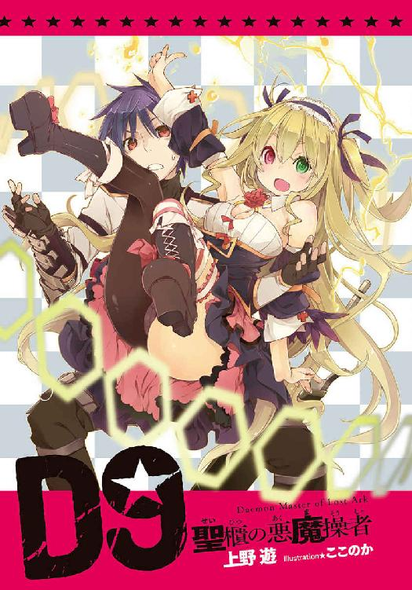
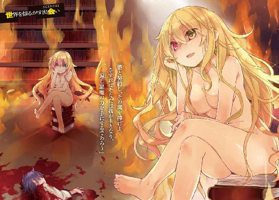
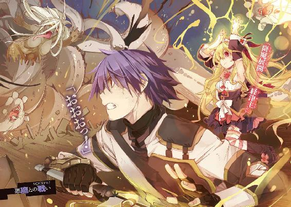
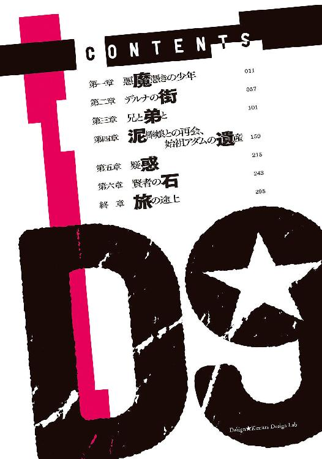
本書（電子版）に掲載されているコンテンツ（ソフトウェア／プログラム／データ／情報を含む）の著作権およびその他の権利は、すべて株式会社ＫＡＤＯＫＡＷＡおよび正当な権利を有する第三者に帰属しています。
法律の定めがある場合または権利者の明示的な承諾がある場合を除き、これらのコンテンツを複製・転載、改変・編集、翻案・翻訳、放送・出版、公衆送信（送信可能化を含む）・再配信、販売・頒布、貸与等に使用することはできません。
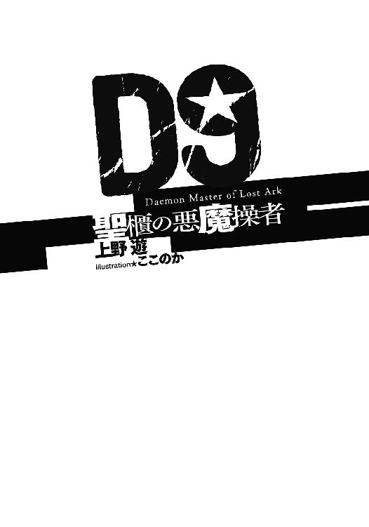
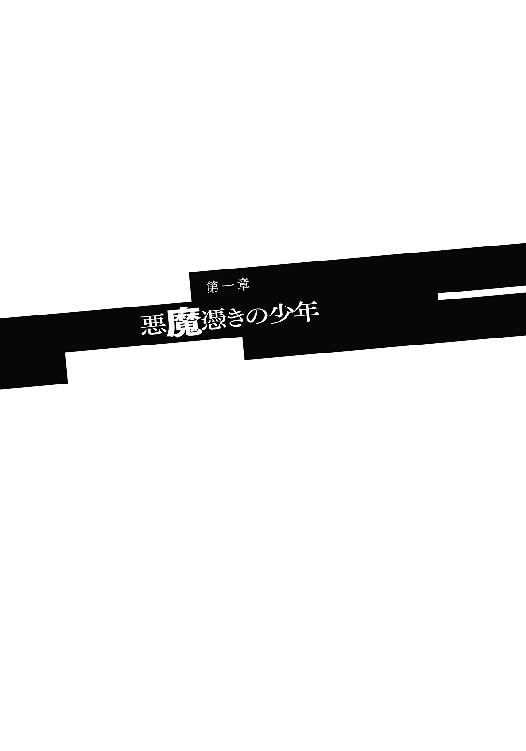
月の明るい夜だった。
中天に輝く衛星は大地を煌々と照らし、荒野を濃い蒼に染め上げていた。
蒼い荒野のあちこちに、切り株を何万倍にも大きくしたような、あるいは巨大な柱のような岩棚が点在している。岩棚は小さいもので直径十メートルほど、大きなものはその十倍ほど、と幅はまちまちだが、高さはどれも三十メートル前後、計ったように同じで、誤差はせいぜい数十センチというところだろう。岩棚同士の間隔はやはりまちまちだが、狭いところで数十メートル、広いところは百メートルほど。
岩棚群の色は一様ではなく、土に含まれる成分の違いにより、赤かったり黄色かったり様々で、中には紫色をしているものまである。今は夜なのでよく見えないが、日中には色とりどりの岩棚が、まるで巨大な積み木を散らかしたかのように見えることから、この荒野には〝積み木谷〟という名前がついている。
しかし、この一帯が正式名称で呼ばれることはほとんどない。
旅人たちはこの荒野を〝墓標谷〟と呼ぶ。細長い岩棚──浸食台地の林立する様はなるほど、積み木よりは墓標に似ている。青白い月に照らされて冷え切った深夜には尚更に。
とはいえそこは死者の世界ではない。
乾いた大地にはわずかながら草木が生え、物陰には夜行性の昆虫や小動物が蠢いている。
切り立った崖で目を光らせているのは梟だろうか。迂闊な獲物が月光の下に歩み出てくるのを待ち構えている。
墓標谷の中央部分に、冷え冷えとした月光を反射するものがあった。それは二本が一組で、西の果てから東の果てまで、大地に記された切り取り線のように延びている。もちろん、自然のものではない。
不意に梟が夜空へ飛び上がった。
ほんのりとした黄色に着色されたヘッドライトの光が、夜を切り裂くように伸びる。
轟然と空気が震え、岩棚から小石がぱらぱらと剝がれ落ちた。大地を揺らす振動は一定のリズムと強い光を伴っている。その発生源は西から迫ってくる巨大な鉄の塊──大陸横断鉄道の列車であった。
長さ三十メートル、重さは六十トン以上の車両が七つ。先頭の機関車には古代遺跡から発掘された、旧世紀の遺産である失伝機関が二基搭載されてはいるが、総重量五百トンに迫る大質量を最高時速五十キロに持っていくのが精一杯だ。いや、この巨体でこの速度を出せることが驚異ではある。現在の科学技術ではこれほど高出力の──そして補給のことを考えなくてもいい──動力源は製造できない。
周囲の台地を震わせながら、列車が墓標谷へと入っていく。
その先頭車両、機関車の運転台に立つのは二十歳そこそこ、まだまだひよっこの若手運転士である。隣の席にはそれよりもいくらか年上の運転士が、後輩の指導と、非常時への対処のために待機していた。
運転士は四角い窓から見える景色にせわしなく目を走らせている。ブレーキレバーにかけた手には必要以上の力がこもり、うっすらと筋が浮かんでいた。
「何をそんなに怖がっているんだ？」
先輩運転士が笑いながら言うと、後輩運転士はさも不愉快そうに先輩をにらんだ。
「怖がってなんかいませんよ！ ただ、嫌な月だなあ......と思って」
「嫌な月？」
先輩運転士は首を傾げ、腰を浮かして空を仰ぎ見た。
「どこがだよ？」
夏の夜空に浮かぶのは丸い丸い大きな月。その光に照らされて、峡谷は岩棚の凹凸の一つ一つが見えるほどに明るい。
「雲一つなく見通しも非常にクリア。ヘッドライトなしでも走れそうなくらいだ。こんなありがたいお月様を嫌だなんて言ったら罰が当たるぞ」
先輩運転士が呆れたようにそう言った。後輩運転士はしばらく前だけを見ていたが、これでは先輩を無視していることになると気付くと、観念したように口を開いた。
「......〝狩人の月〟ですよ」
「あん？」
「僕の生まれた村では、こんな風に明るい夜......明るすぎる夜をそう言うんです。狩人の月。夜でも獲物が見える晩。こんな夜には悪魔が出るから外に出ちゃいけな、」
「うひゃひゃひゃひゃひゃ！」
先輩運転士は後輩に最後まで言わせずに笑いを爆発させた。
「つまりあれか！ お前は悪魔が怖いのか！ それでよく大鉄の運転士なんてやってるな！」
ひゃっひゃっひゃ、と先輩は猿のように笑いながら操作卓をばしばし叩く。〝大鉄〟とは〝大陸横断鉄道〟もしくは〝大陸横断鉄道公社〟の略称である。中央管理教会の出資によって運営されている大鉄は、その名前の通り大陸全土──と言うには少々語弊があるが──を横断し、人と物を輸送する。
「そんなに笑うことないじゃないですか！ てか先輩は怖くないんですか！」
顔を真っ赤にして怒鳴る後輩。
先輩は「くっだらねえ」とでも言うように鼻で笑い、
「そりゃまあ怖いか怖くないかと言ったら怖いよ。悪魔に襲われたら俺たちなんてひとたまりもないからな。けどそんな可能性は万に一つもない」
「なんでそんなことが──」
「なんで？ じゃねえよ馬鹿。お前研修中寝てたのか？ 大鉄には悪魔は寄ってこない。全部の車両に教会の偉い人が強力な魔除けの印を刻んでくれてるからな。車両だけじゃない、レールにも枕木の一本一本にもありがたーい印が刻んであるんだ。しかもこれらは毎年きちんと点検して、印が消えそうなのがあればすぐに交換している。おかげで大鉄は開業以来悪魔に襲われたことは数えるほどしかない。そしてその数少ないケースでも、常に同乗している鉄道守備隊がきっちり悪魔を撃退している。結果、我が社のここ五十年の被害者はゼロだ。いいか？ 根拠のない安全神話じゃないんだ。徹底して、細心の注意を払って、安全を確保してるんだよ。それをお前って奴は！ この！」
先輩運転士は後輩をばしばし蹴り始めた。
「痛っ！ やめて下さい！ 運転が！」
「ええいやかましい！ なぁーにが『僕の生まれた村では』だ、この馬鹿！ 死んで偉大な先達たちに詫びてこい！」
「ごめんなさい！ ごめんなさい！ 許して下さい。ってか、やめてくれないと本当に運転ができません！」
後輩が悲鳴のような声を上げると、先輩はようやく蹴るのをやめて脚を組んだ。
「ま、不安になるのは分からなくもない。俺も今のお前ぐらいの頃はそうだった。夜中に運転台に立ってるとなんかあり得ないことが起こりそうな気がするんだよな。ここで突然機関が止まったらどうしよう、とか、列車強盗が現れたらどうしよう、とか」
「はい」
夜は人の心を落ち着かなくさせる。隠れていた不安や恐怖をむき出しにする。
「だがな、それを表に出すようじゃ運転士失格だ。運転士の不安はそのレバーを通して列車に伝わる。走りが不安定になれば客が不安になる。心配するのは悪いことじゃねえが心配しすぎるのは悪いことだ。分かるな？」
「はい。安全運転、安心運行ですね」
大鉄の社是を口にした後輩に、先輩は満足そうに頷いた。
「予定より十二分遅れている。墓標谷の間に取り戻す。機関出力三パーセントアップ」
「復唱します。機関出力三パーセントアップ」
後輩運転士が操作卓のダイヤルをひねる。失われた技術で作製された動力機関がフォーン......と、どこかもの悲しい音を立てた。
速度を安定させて姿勢を正し、後輩運転士はかすかに目を細める。
線路上で何かが光ったように見えたのだ。

大陸横断鉄道は七両編成を基本とする。先頭車両が機関と運転台を備えた機関車、二両目が運転士と車掌、それに鉄道守備隊が起居する従業員用車両となっている。残りの五両の編成は季節や行き先によってまちまちだが、今夜、墓標谷に進入した列車は客車が二の貨物車が三という編成であった。
客車の内部は二階建て。一階は個室の一等客室。危険な荒野を行く乗り物のこと、造りは実用性を最重視しているが、それでも壁紙が貼られ、絨毯が敷かれ、無骨な印象を和らげる艤装が施されている。部屋にはしっかり鍵がかかるし、羽毛のベッドも人数分、きちんと用意されている。一方、二階の二等客室は壁は鉄板がむき出し、かろうじて床に板が張られている程度。個室どころか椅子もない広間に雑魚寝であり、寝具は乗客が自分で用意しなければいけない。質実剛健を通り越して、まるで鋼鉄の檻のような素っ気なさだ。
二両ある客車のうち後ろ側──四号車の二等客室。
小さな常夜灯が瞬く広間の隅に、一人の少年がいた。
歳の頃は十六、七。小柄である。
壁に背中を預けて座り込み、両手をへその上で組んでいる。投げ出された足には鉄板を仕込んだ厳めしいブーツ。厚手のズボンと濃い灰色のコートは風に煽られないようにだろう、要所要所をきゅうっとベルトで絞ってある。荷物は壁と背中の間で潰されているバックパックが一つ、そして腰に吊られた一振りの剣。
「ん......」
黒い前髪が吹き込む夜風に揺れる。
まだ幼さの残るまぶたがひくひくと動いた。
少年は夢を見ていた。失われた故郷の夢を。
夢の中で少年は木剣を振っていた。
夏。精緻な彫刻が施された三階建ての邸宅の裏にはよく手入れされた木立が並び、十分な日陰があるというのに、少年は焼け付くような日差しの中で木剣を振り続けている。
少年の周囲、大粒の汗が飛び散る地面は、そこだけ草が生えず、踏み固められてすり鉢状にへこんでいた。この四年間雨の日も雪の日も、決して休まず鍛錬を続けてきた証である。
少年は体を動かすのが好きであった。剣が好きであった。だから毎日の鍛錬は決して苦行ではなく、むしろ楽しみであり、どれほど厳しい鍛錬も、地味な反復も笑みを浮かべて行っていたものだ。
ほんの数週間前までは。
だが今──夢の中の少年の口元は、気難しく引き結ばれている。
無心になろうと剣を振る。しかし太刀筋は千々に乱れる。意識が散乱する。集中できない。と、
「ソーマ？」
おっとりとした少女の声が少年を呼んだ。少年──十六歳のソーマ・ノイン・スオウは聞こえなかったふりをして木剣を振り続ける。
「あ、いるじゃない。返事してよね、もう」
無視をされたことに気付いていないのか、少女は特に怒った様子もなく、むしろ親しみを込めてぼやきながら、たたっ、と裏庭を駆けてきて、ソーマの正面に回り込んだ。
こうなってはさすがに無視を続けられない。ソーマは木剣を下ろし、次いで眩しいものから目を背けるように、視線をそらした。
「主役がこんなところにいていいの？」
「だって退屈なんだもん」
ぷくっとほっぺを膨らませて答える少女の名はレンリ。レンリ・クロア。歳はソーマよりも一つ上の十七歳──にしては少々幼い感じが抜けていないのは、蝶よ花よと育てられた結果だろう。レンリはここアラド市の市長であるクロア氏の一人娘だ。
レンリとソーマは幼なじみで、小さな頃はいつでもどこに行くのも一緒だった。さすがに幼年学校に上がってからはそういうことはなくなったが、決して疎遠になったわけではなく、ずっと家族も同然の親密な関係が続いていた。
「ソーマこそ、なんでこんなところで剣の練習なの？」
「......日課だよ。僕は教会騎士になるのが目標だから。一日だってサボれない」
ソーマはむすっとして答える。
「噓。ソーマ、私のこと避けてるもん」
「っ」
「私のこと嫌いになったの？」
悲しそうに言いながら詰め寄ってくるレンリ。藤色のドレスに包まれた柔らかそうな胸が揺れて、ソーマは弾かれたように目をそらす。
「そういうわけじゃ......ないけど」
嫌いになったわけではない。けれど、近頃のソーマがレンリを避けているのは事実だった。今日もレンリが家に来ることは分かっていたので、出かけてしまおうかとも思ったのだ。だが逃げるように外出するのもなんだか決まりが悪い気がして、かといって笑顔で迎える気にもなれなくて、その結果が炎天下での全く気の入らない剣の鍛錬なのであった。
「じゃあどうして？」
無意識にだろう、レンリは左手を額に当てて日差しを遮る。その薬指で細いリングが光った。ソーマの不機嫌──ともまた少し違う気持ちの象徴。婚約指輪。
レンリはもうすぐ結婚する。相手はソーマの兄、トーマだ。
もう何年も前からその話はあったが、先日、ついに正式なものとなった。
それはめでたいことではあるのだろう。
誰もが二人を褒めそやす。美男美女のカップルだね。お似合いの夫婦になるね。スオウ家とクロア家が結びついて、これでアラド市も安泰だなと、誰もが祝いの言葉を述べる。
だがその中でただ一人、ソーマだけはこの婚約を素直に祝えないでいた。もやもやした気持ちを抱えて木剣を振っていた。
「......私、何かソーマを怒らせるようなことしちゃった？」
「そういうわけじゃ、なくて......」
「何か思ってることがあるなら言って。遠慮なんてしなくていいのよ」
「だからそういう......レンリ！」
答えようとレンリの方を向き、ソーマは顔をこわばらせる。
空はいつの間にか陰っていた。レンリの背後、黒い霧のようなものがわだかまり、ゆっくりと立ち上がりつつあった。
「レンリ！ 後ろ！」
「私はもうすぐソーマの義理の姉になるわけだけど、今までだって本当のきょうだいみたいなものだったし、だから何も変わらなくて......」
背後の異変に気付いていないのだろう。レンリは優しい笑みを浮かべたまま、「弟」に語りかける。その背後では黒い霧が凝縮して生じた真っ黒い蛇が、頭をレンリの頭上へと持ち上げていた。
「レンリ！ 逃げろ！」
ソーマは木剣を振りかぶって黒い蛇に斬りかかろうとするのだが体が動かない。
黒い蛇は今や二階に届きそうなほどに巨大化している。火炎のような赤い舌がちろちろと蠢いたかと思うと次の瞬間、大蛇は牛も丸吞みできそうなほど顎を大きく開いてレンリに襲いかかった。幼なじみの姿は一瞬にして消えてしまう。
「レンリ！」
全力で叫ぶと全身がびくんと震えた。
まっすぐに突き出した右手が何やら温かいものに触れる。女の胸だった。夢と現実がごっちゃになって、一瞬、レンリの胸に触れたのかと思ったがそんなはずはない。レンリは一年以上前に死んでいて、故郷の街も地上に存在していない。それに何より、今触っている胸はとても小さかった。気の毒になるくらい。
ではこれは誰なのだろう──と寝ぼけた頭で考える。
目の前、本当に目と鼻の先に同年代の少女がいた。壁に背中を預けて足を投げ出したソーマにまたがるような格好だ。短いマントの下に、動きやすさを重視した革鎧のようなものを身につけている。前髪を切りそろえた黒髪はどこかのお嬢様風ではあったが、くっきりした目鼻立ちのおかげでいたずら好きな少年のような印象の方が強い。その少女の目は驚きに丸くなっている。
レンリとは似ても似つかない。しかし美少女ではあった。ソーマはしばし少女を眺め、
「──え？ わ、悪い！ ちょっと寝ぼけてたみたいで」
無意識に少女の胸をまさぐり続けていた手を慌てて引っ込めると、そう弁解した。
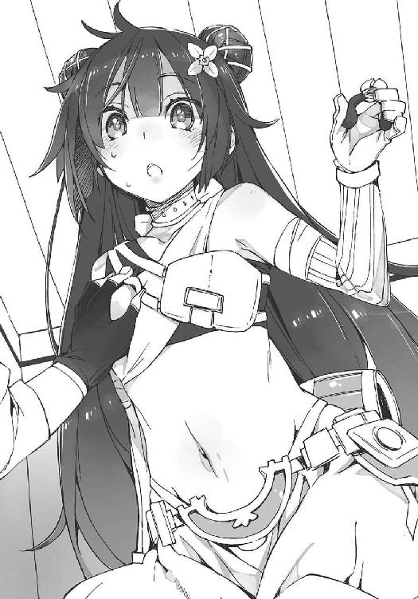
「いいのいいの別に減るもんじゃないし。むしろ揉まれたら増える？ 的な」と少女は笑顔で答え、「それより静かにしないと他のお客さんに迷惑よ」
「あ、ああ。そうだな」
少女が怒っていないと分かってソーマは安心し、それから素朴な疑問を覚えた。
──この子は人にまたがって何をしているのだ？
答えは目の前にあった。
革手袋に包まれた少女の右手が、ソーマの襟に伸ばされている。その手には掌に隠せる大きさのペンチのようなものが握られており、ペンチの刃はソーマが首にかけたペンダントの鎖を挟み込み、ちょん切ろうとするところであった。
「......念のために訊ねるんだが、それは何をしているんだ？」
「首が絞まって寝苦しいみたいだったから外してあげようかなあ、なんて。優しいでしょ？」
少女は笑顔で答えた。
「......そんなふざけた言い訳が通用すると思うか？」
ソーマは笑顔で訊ねた。
「言い訳だなんて滅相もない。知ってる？ 寝返りを打った拍子にペンダントの鎖が服に絡まって首が絞まる事故が、ニューヤードだけでも年に......」
「どうした？ 続けろよ」
ソーマはとてもいい笑顔で促した。
「年に......」
と言ったきり、少女は固まってしまう。もう出任せが出てこないらしい。
そのまま数瞬の沈黙があって、
「さらばっ！」
少女は突然、弾かれたように後ろへ跳ぶ。
それを読んでいたソーマも即座に身を起こし、
「逃がすか泥棒──ッ!?」
車体が激しく揺れて急減速が始まったのは、ソーマが背後の壁を蹴って盗人に飛びかかり、取り押さえようとしたまさにその瞬間だった。
ヘッドライトに照らされた線路の上に何かがあった。
それが何であるのか、二人の運転士はすぐには理解できなかった。
何であるのか理解した後も、それが何故そこにあるのかがすぐには理解できなかった。
ヘッドライトの黄色い光を跳ね返して輝く白い塊──それは氷山であった。
冬が来るまでにはまだ四ヶ月以上ある。雪が降るどころか霜が降りることすらあり得ない季節、乾燥した荒野のど真ん中に突如として出現した氷山。言うまでもなく異常事態だ。
それがそこにある理由は理解できなくても、それによって何が起こるかは、二人とも即座に理解した。
「ぶれえええええきぃいいいいいいいいいいいいい！」
先輩運転士が絶叫する。後輩運転士は反応できない。先輩運転士は後輩を突き飛ばすと自ら運転台に立ち、即座にブレーキレバーを一杯に引いた。甲高い鋼の悲鳴が鳴り響く。
無茶苦茶な減速に車体は激しく揺れ、後方から突き飛ばされるような衝撃に襲われた。乗客は一人残らずベッドから転がり落ち、壁に頭をぶつけたことだろう。脱線すれすれの急制動をかけられて、しかし五百トン近い巨体はほとんど減速しない。気付いたときにはマグカップほどの大きさにしか見えなかった氷山はあっという間に机よりも家よりも大きくなり、視界いっぱいに広がる絶壁となって列車の前に立ちふさがった。
衝突。
しっかりと地面に食い込んだ氷山は幅が十メートルはあるだろうか。
氷山に突っ込んだ列車は初めこそ圧倒的な質量でもって氷山の裾を踏み砕いたが、すぐに氷に乗り上げて機関車が斜めに傾いた。
脱線。
自らが保有する運動エネルギーを御しきれず、横転する機関車に後続の車両が次々に突っ込む。レールが歪み、車体が跳ねる。そのすさまじい轟音の中では、乗客の悲鳴など虫の羽ばたきほどの存在感もなかった。
先輩に突き飛ばされた運転士は、立ち上がるために手すりに摑まったところで衝突の瞬間を迎えた。反射的に手すりにしがみつき、両足を突っ張って体を固定。それでも衝撃に耐えきれずに体が浮き上がり、壁や操作卓に幾度も叩き付けられて気を失ってしまう。
「............う......あ？」
意識を失っていたのは一分ほどだろうか。気付けば列車は止まっていた。
目の前にそそり立つ床が見えたので、機関車が横転していると分かった。全身を激しく打ち付けて、どこが痛いのかもよく分からない。とりあえず手足は動いた。
運転士は職業的使命感から乗客のことを考え、それから指示を仰ぐために先輩運転士を捜した。狭い運転室のこと、先輩はすぐに見つかった。運転台の陰に先輩の足が投げ出されていた。
「......先輩？」
呼びかけに返事はない。頭を打って気を失っているのだろう。行って起こしてあげなくては──と運転士は九十度傾いた運転室を這うように移動して先輩運転士のところへ行く。
「先ぱ──ひっ！」
先輩運転士の下半身だけがそこにあった。どういうわけか上半身は見当たらない。
さらに奇妙なことに、その下半身はかちかちに凍り付いていた。おかげで血の一滴も流れていなくて、現実感がなかったからだろう、運転士は重大な判断ミスを犯してしまった。
死にたくなければ今この瞬間に何もかもを放り出して逃げるべきだったのだ。
「な、な、なんだこれ。どどどどうなって......」
理解不能な状況に混乱し、運転士はガタガタと震え始める。
そのとき、頭上から飴玉でも嚙み砕くような音が聞こえてきた。
「......？」
顔を上げた運転士が見たものは、身の丈五メートルはあろうかという、青い肌をした巨人の姿であった。飴玉を嚙み砕くような音はその巨人の口から聞こえていた。どうも何かを食べているらしい。
「あああっ！」
巨人が食べているものが見えた瞬間、運転士は悲鳴を上げていた。それは先輩運転士の上半身だった。青い巨人は氷漬けの死体をかち割って食べていたのだ。
先輩運転士の上半身を平らげると、青い巨人は運転士を見下ろした。
「え？ あ、......デ......デデ......」
運転士はそれの呼称を口に出そうとする。だがどうしても歯の根が合わず、言葉にならない。
それは生物の理を外れた異形の存在。人を襲い魂を食らうモノ。
人類の天敵──〝悪魔〟。
青い巨人を呆然と仰ぎ見る運転士。
悪魔が、次なる獲物を求めて運転室に手を差し込んできた。
「ひっ！ 来るな！ 来るなあっ！」
運転士は手足をバタバタと動かして巨人から逃れようとする。必死の抵抗、と呼ぶにはそれはあまりにも無力すぎた。巨人の手が無造作に運転士を捕まえると、運転士の紺色の制服が、その下の肉体が、すぐにパキパキと音を立てて凍り始めた。
「う、うわあああああああああああ！」
〝狩人の月〟に照らされた荒野に、被捕食者の断末魔がこだまする。
氷山に衝突した衝撃は当然客車にも及んだ。
横倒しになった機関車に引きずられるようにして客車もねじられ、さらに後ろの貨物車に押される格好で、列車は全体として大きくくの字に曲がり、線路から荒野へと投げ出された。
乗客は大半が眠ったままその瞬間を迎えた。
意外にも被害が大きかったのは一等客室の方であった。一等客室には長旅に備えた無数の調度品があり、それらが、脱線、転落、横転の衝撃で狭い個室を跳ね回ったのだ。シェーカーの中の氷のように。あるいは貯金箱の中の小銭のように。その中に放り込まれた柔らかな人体などひとたまりもなく、多数の乗客が悲鳴も上げられずに死んだ。
二等客室はその広さと乗客の質が幸いした。二等の広間にはベッドがないので客は皆毛布を体に巻き付けて眠る。荷物を広げておくと周囲に迷惑がかかるから──それに盗難の心配もあって、皆、自分の荷物は小さくまとめて身につけているか、すぐには動かせないように、壁のラックにがっちり固定しておくのが常だった。
それでこれだけの大事故であったのに、ほとんどの客が軽度の打ち身や捻挫程度で済んだのだが、それが本当に幸運だったかは疑問の余地が残る。何も分からず死んだ方が楽ではあっただろう。
「......つつ」
ソーマもまた、五体満足、軽度の打ち身だけで済んだ一人だった。それでも結構えぐい角度で壁に叩き付けられ、一瞬ではあるが意識が飛んでいた。
「無事......みたいだな......」
ひとまず自分の体を確認。周囲からはうめき声と、「なんだ？」「事故？」「今どの辺？」という不安そうな呟きが聞こえてくる。と、
「あんたいつまで人の上に乗ってるのよ！ 下りなさいよ！」
尻の下から声がした。覗き込むと、先ほどの泥棒少女がソーマの下敷きになってじたばた暴れていた。こちらもどうやら無事らしい。
ちょうどいい。このまま拘束して鉄道守備隊に突き出してしまおう──というわけにはいかなかった。
「ひいいいいいいいいやああああああ！」
唐突に窓際の乗客が悲鳴を上げたのだ。
「っ！」
ソーマがそちらを見ると、窓の外に巨大な青黒い顔があった。大人の拳よりも大きな両目が獲物を求めて車内を見回している。
「あ、悪魔だ！ 列車が止まったのはこいつの仕業か!?」
「逃げろ！ 食われるぞ！」
乗客が蜘蛛の子を散らしたように窓から離れる。と、
「お母さーん！」
一人、窓際に座り込んで動かない子供があった。
「何してるの！ 早くこっちへ！」
母親が必死で呼びかけるが子供は動かない。いや、動けないのだ。その子のズボンは悪魔が発した冷気によって凍った床に張り付いてしまっている。
「なんてことなの！」
母親は叫び、一瞬ためらい、しかし子供のところへと駆け戻った。
「馬鹿！ 何をやってるんだ！ 戻ってこい！」
「その子は諦めろ！ あんたもやられるぞ！」
母親は他の乗客の忠告を無視して子供のところへ走って行くと、靴とズボンを脱がせて子供を救出しようとした。だがその間に母親の靴も床に張り付いてしまう。
「ああ！ そんな！」
「お母さん！」
身動きが取れなくなった母子を、窓の外から青黒い顔が見据える。分厚い爪の生えた指が割れた窓から侵入してきた。狙いはもちろん哀れな母子だ。悪魔は人を──人の魂を食らう。
不幸な母子は互いを守るように固く抱き合い目を閉じた。
その瞬間、一陣の旋風が逆巻いた。
ソーマである。
悪魔の手元に飛び込んだソーマは既に剣を抜いている。ほとんど鉄棒と言ってもいいくらいの肉厚の、相当な重量があるであろう剣を片手に持ち、切っ先が床面を擦りそうな位置から天井目がけて垂直に斬り上げる。巨人の手首が冗談のようにあっさりと切断されてゴトリと落ちた。切断面から黒い血が大量に噴出する。
「グルウウウウウウウ！」
車外の巨人が咆吼を上げてのけぞり、血走った目でソーマを睨め付ける。
ソーマは巨人と向き合ったまま、一瞬だけ視線を母子に向けた。
「メル、頼む」
『氷を解かせばいいのじゃな？ 降魔展開──〝幻灯南瓜〟』
鈴を転がすように軽やかな声がソーマに応じる。
その声がどこから聞こえてきたのか、母子には分からなかった。その声が聞こえたのと同時、母子はけたたましい笑い声を聞き、鬼火を宿した南瓜の幻を見た......気がした。不意にじわっとした熱を感じたかと思うと、床の氷が解けて足が自由になっていた。
「早く逃げろ。広間の真ん中なら奴らの手は届かない。そこでじっとしてるんだ」
ソーマの言葉に母子は否も応もなく後退する。
「ゴアアアアアアアア！」
車外で巨人が吠えた。青黒い顔に表情は乏しいが、獲物を奪われ怒っているようだ。
ソーマは動じない。なんのためらいもなく窓枠に足をかけて車外に飛び出す。客車を殴ろうとしていた巨人の腕──ソーマの胴体より遥かに太い──に着地。巨人が反射的に腕を振り上げる。ソーマは滑るようにして地面に下りると、巨人の無防備な脇腹目がけて剣を突き上げた。鋭い切っ先が巨人の皮膚を突き破り、あばらの隙間を正確に貫いて心臓へと到達する。
巨人は一度ビクッと痙攣すると、すぐに客車に覆い被さるように倒れて動かなくなった。
ソーマは巨人が完全に倒れる前にその脇腹から剣を抜き、噴き出す黒い血を浴びない位置まで飛び退っていた。戦闘体勢を維持したまま周囲を見回す。そして舌打ち。
列車は前半分が横転し、後ろ半分は横転こそしていないものの、完全に脱線して、やはり傾いていた。身動きの取れなくなった列車のそこかしこに、青黒い肌の巨人が取り付き、乗客を襲っている。
敵は一体だけではなかったのだ。そしてさらに悪いことに、巨人共は食事を中断して一斉にソーマの方へと向かってくるではないか。
『ふん。仇でも取るつもりか。悪魔のくせに仲間意識とは片腹痛い』
先ほどと同じ声が、またしてもどこからともなく響く。
ソーマは特に驚いた様子も見せず、
「人間並みの知能があるなら、人間並みの感情だってあるだろ。見下してると痛い目見るぞ」
『それは道理であるが......で、どうするのじゃ？ 儂はこの場からの離脱を提案する。霜の巨人など敵ではないが、いかんせん数が多くて面倒じゃ』
ソーマは顔をしかめた。青黒い巨人共──霜の巨人という悪魔の群れは、総数十体ほどか。大陸横断鉄道にももちろん敵への備えはある。貨物車に設置された機関砲や三交代二十四時間の警備を行う鉄道守備隊など。だが守備隊がいるはずの二号車は機関車共々ひっくり返って氷山の脇で腹を晒していた。あれでは中の人間も無事なはずがない。仮に無事だったとしても、列車は脱線して傾いてしまっており、その屋根の機関砲はすぐには使用不能な状況だ。
つまり今、列車は全ての防備を失い、無数の悪魔に包囲されている。
悪魔退治を専門とする教会の騎士でも一旦撤退を考えるような状況で、しかしソーマは特に表情を変えるでもなく、
「悪魔を倒して乗客を守る」
『お主ならそう言うじゃろうとは思っておったが』
幼い声は不満そうではあったが、特に反対はしなかった。
ソーマは剣を振って血糊を払うと悪魔の群れへと斬り込んだ。
機関車のすぐ側にいる、ひときわ大きな巨人が「グウ」と吠えた。周囲の巨人が「ガア」と答え、ソーマを遠巻きに包囲する。
包囲の輪は直径およそ三十メートル、とソーマは目算した。このままにらみ合うつもりはないだろう。相手が動いたら包囲の薄くなったところを突破する、とソーマは決めた。だが、
「!?」
陣形の両脇にいる巨人が動いた。挟み撃ち──ではない。巨人はしゃがみ込んで地面に両手を押し当てる。と、たちまち地面が凍り付き、巨大な氷壁が生まれていく。他の巨人たちも次々にしゃがみ込んで氷壁を生成する。すぐにソーマの周囲は隙間なく氷壁で囲まれた。氷壁はさらに成長を続け、十メートルほどの高さになったところで、上部が内側へとせり出し始めた。
「そう来たか......っ」
ソーマを脅威と見なした悪魔たちはまともにやり合うのを避け、巨大な氷のドームに閉じ込めて凍死させる作戦に出たのだ。
ソーマはまだ凍っていない地面を蹴って走り出す。
「グフゥ......」と巨人の何体かが笑ったように見えた。
今さら気付いて逃れようとしてももう遅い、垂直の氷壁はただの人間がなんの道具もなしに登れるようなものではなく、そもそも登る暇もなく成長して中にいる人間を閉じ込め凍死させてしまうだろう。巨人たちにとってソーマの疾走は「追い詰められた人間がよくやる苦し紛れの突撃」にしか見えなかった。
だが、ソーマは──ソーマたちは、〝ただの人間〟ではなかった。
「メル！」
『降魔展開──〝嘶く波濤〟』
声が響いたその瞬間、ソーマは高く跳躍した。その右足が氷壁の内側を──より正確に言えば氷の表面に付着する水滴を足場として──捉え、力強く蹴り出す。さらに高い位置に達した左足が同じように氷壁を蹴る。まるで平らな地面を行くように、ソーマは垂直の、そして逆バンクの付いた氷壁を駆け上がり、閉じる前の氷のドームから飛び出した。
「ゴアッ！」
策を破られた巨人たちがソーマを阻止しようと群がってくる。ソーマは落下しながらその腕を払いのけ、一体の顔面を踏みつけて跳び越えると、背後にいた巨人の喉に分厚い刃を滑り込ませた。
「......!! ......！」
喉を裂かれた悪魔が声も出せずに暴れ出す。ソーマはその隙に別の巨人の懐に転がり込むと、すれ違いざまに踵を斬り付け転倒させている。倒れた悪魔にとどめは刺さず、姿勢を低くして機関車の方──リーダー格と思われる、ひときわ大きな巨人目がけて突っ走る。
群れは頭を潰すのが鉄則。十数体の巨人を全て片付けるつもりはソーマには最初からない。
霜の巨人のリーダーは機関車に手を伸ばすと、ドアをもぎ取ってソーマ目がけて投げつけてきた。回転して飛来するドアをソーマは横っ跳びで回避。直線上にいた哀れな巨人がドアの直撃を食らって真っ二つになる。
ソーマがそちらに気を取られた瞬間、巨人のリーダーが踏み込んだ。体が大きければその分歩幅も大きい。巨人は一瞬でソーマとの間合いを詰めると、ちょっとした簞笥ほどもある巨大な拳を打ち下ろしてきた。ソーマは地面を転がって避ける。巨人は図体に見合わない速さで連撃を放ってソーマを追う。全てぎりぎりのところで回避。ソーマの代わりに殴られた大地が爆ぜ、レールが飴のように折れ曲がった。
地面を転がり土砂にまみれてさらに転がる。降り注ぐ拳は砲撃のごとく大地をえぐっていく。ソーマの背中が硬くて冷たいものに触れた。横倒しになった機関車の車輪だ。これ以上後退することはできない。
悪魔が拳を引いた。正拳突きの構え。その拳がパキパキと音を立て、見た目にも凶悪な氷の棘を纏っていく。
「あれを食らったら一発でミンチだな......」
呟く声に、しかし焦りの色はない。ソーマは剣を逆手に握った。
跳躍。
影すら置き去りにしそうな速度でソーマが飛び出し、全く同じタイミングで巨人が氷拳を打ち出した。拳は瞬き一つする前に機関車の底面を打つ。シャフトが折れて車輪が外れた。氷山と時速五十キロで衝突しても全く歪まなかったシャシーがひしゃげ、数十トンもの質量があるはずの車両がふわりと浮き上がる。人知を超えたその破壊力はまさしく悪魔。理を外れた暴威。音速を超える拳は辺りに衝撃波をまき散らす。客車の窓に群がり固唾を吞んで見守っていた人々が、その余波を食らって一塊に車内へと吹っ飛ばされる。
寸毫の間を置いて、浮き上がった機関車が地に落ちた。
吹き飛ばされた人々が起き上がって再び窓に群がり、戦闘の行方を確かめようとする。
乗客の誰もが、ソーマは死んだと思っていた。
霜の巨人が拳を引いたら、そこには勇敢ではあったが己の力量を過信した少年の、原形を留めない死体が──死体とも呼べない黒い染みがへばりついているのだろうと考えた。
息詰まる緊張と絶望の中、巨人は拳を突き出した体勢のままぴくりとも動かない。
その巨人に縛られたかのように、人々も動けない。本当ならすぐにでも逃げ出さなくてはいけないのに。逃げたところで結果にそう違いはないのかも知れないが。どうしたわけか人々はその光景から目を離せないでいた。
やがて誰かが奇妙なことに気がつく。巨人の背丈が縮んでいる──いや、これは、
「首が......巨人の首がないぞ？」
その呟きが合図だったかのように、巨人の体はぐらりと傾き、地響きを立ててうつぶせに倒れた。そしてその陰から現れたのは、不機嫌そうな顔でコートの汚れを払っている少年──ソーマの姿だった。ソーマの傍らには巨人の生首も転がっている。
「..................」
人々は窓枠にしがみついたまま微動だにしない。
その光景の意味を最初に理解したのは青黒い巨人たちだった。
「グ！」
「ゴア！」
彼ら独自の言語で何事か呟くと、巨人たちはじりじりと後退を始め、ソーマとの距離がある程度離れたところで列車に背を向け、堰を切ったように全力で駆け出した。
逃げる。悪魔の群れが逃げていく。
たった一人の少年に恐れをなして。
「助かった......のか？」
誰かが呟いた。人々は呼吸も忘れてしばし瞠目し、
「すげえ！ やりやがった！」
「うおおおおおおお！」
喜びが爆発した。
興奮した人々は我先にと列車から飛び出しソーマを取り囲んでもみくちゃにする。
「すげえ！ お前すげえよ！」
「命の恩人だ！ ありがとう！ ありがとう！」
背中を叩かれ髪をくしゃくしゃにされソーマは困惑。
「......別にお前らを助けるために戦ったわけじゃない」
ソーマがぶっきらぼうにそう言うと人々は一瞬静まり、
「若いのに渋いねえ！」
「謙遜するな！ あんたはヒーローだ！」
「なあ、あんたうちの娘と結婚する気はないかね？ あるよね？」
「ちょっとやめてよお父さん。その人困ってるじゃない。......あの、愛人でもいいんで考えて下さいっ！」
すさまじい盛り上がりであった。
ピーピーと口笛が吹かれ、自然と大合唱が始まる。荒野に歓声が響き渡り、誰かが夜空目がけて鉄砲を撃ち放つ。
そのお祭りのような騒ぎの中心にいて、しかしソーマの表情は明るくはない。
少年の黒い瞳は自分を囲む人垣をすり抜け、横転した車両を見る。そこでは鉄道公社の制服を着た人々が忙しそうに歩き回り、車内に取り残された負傷者の救助、そして無数の遺体を運び出しているところだった。
「おっと、こりゃいけねえ。まだ浮かれるには早すぎたみたいだな」
ソーマの肩を叩いていた男が頭を搔き、救助活動を手伝おうと線路の方へと走っていく。
いくつもの悲鳴が聞こえてきたのはそのときだった。
「何だこれはっ！」
「足が！」
「どうした!?」
異変に気付いた鉄道公社の職員が振り返り、車両の方へ行こうとする。と、
「ア、ア、ア、ア、ア、ア」
しわがれた声が響いたかと思うと、救出作業中の客車に霜が降り始めた。
「悪魔がまだ残っていたのか！」
霜はみるみるうちに氷の膜へと成長し、車両を包み込み始めた。
「いかん！ 要救助者が！」
「我々が行く！ 皆は避難を！」
そう声を上げたのは鉄道守備隊の生き残りたちだった。ソーマが霜の巨人を倒してしまったので全く出番のなかった鉄道守備隊は、この機に汚名を返上しようと考えていたのかも知れない。銃を構えて悪魔がいるであろう車両の陰に向かった彼らは少しばかり焦っていて、基本的な対応を一つ忘れていた。
すなわち、敵を知る、ということを。
「ア、ウ、アアア！」
再び響くしわがれた声。先ほどよりも少し甲高い。
老婆のような──と考えてソーマはその正体に気付いた。
「っ！ ダメだ！ みんな逃げろ！ そこにいるのは霜の巨人じゃない！」
しかしソーマの忠告は遅すぎた。
「アアアアアアアアッ！」
三度目の声が響いたそのとき、周囲の気温が瞬時に二十度も下がった。冷凍庫の中に閉じ込められたかのような圧倒的な冷気。大気中の水分が氷結し、月光を受けてキラキラと輝く。
ソーマは冷気が吹き付ける直前、両腕で顔を覆って目を守っていた。冷気が通過して、目を開けたソーマは、そこに無数の氷像を見た。列車の側に横たわる者、負傷者の手当てをしようとする者、わけも分からず逃げようとする者、銃を構えて走る鉄道守備隊の面々。
全てが一瞬前と同じ姿で、凍り付いて動きを止めていた。
そして、それを為した悪魔が、傾いた列車の屋根に腰掛けていた。
「ウフフ......」
含み笑いと共にこちらを見下ろす悪魔は青白い肌に白い髪。背丈は座っているのではっきりとは分からないが、人間と同じくらいだろう。豊かな胸。腰回りも女らしく丸みを帯びている。女悪魔は凍り付いた車両の上から、生き残りの人々を見回し、優しそうな微笑を向けた。その様子だけを見れば恐ろしいところは何もない。裸身に紗のようなものだけを纏った妖艶な美女。一種の神々しささえ感じられる。
悪魔──〝雪の女王〟。
霜の巨人と同様、氷雪を支配する力を持った悪魔である──が、その力は先の巨人たちとは比べものにならない。教会騎士団の記録によれば、百年ほど前に一度出現し、そのときは村を三つ滅ぼし、討伐に向かった騎士団からも七人もの犠牲者が出た。
「......何だ？ 襲ってこないぞ？」
「仲間がやられたから恐れをなしてるとか？」
戸惑う人々を見回して、悪魔は友好的とも思える笑みを浮かべた。
「よく分からんが、とにかくやり合うつもりはないみたいだな」
乗客の男は安堵したように息をついた。
と、次の瞬間、悪魔はすうっと息を吸い、男目がけて吐息を吹きかけた。悪魔の吐息が大気を凍らせながら男へと迫る。
「っ！」
男は自分の勘違いを理解した。悪魔の笑みは友好だとか親愛だとかの表れではない。「食べ物がたくさんあって嬉しい」の笑みだったのだ。いや、本当は男も最初からそんなことは分かっていたのだ。ただ、「もしもこの悪魔が友好的だったら見逃してもらえるかも知れない」という、万に一つの可能性にすがっていただけなのだ。
『降魔展開──〝火蜥蜴〟』
男が死を覚悟したその瞬間、少女の声が響き、絶対零度の吐息がかき消された。
「大丈夫だな？」
ソーマは男の前に立ち、肩越しに訊ねた。
「な、お前、今のは......」
男は自分の体とソーマとを代わる代わる見る。
ソーマが何かをして自分を守ってくれたのだとは分かる。だが「何をしたのか」が分からない。
ソーマの方にも説明するつもりは全くなかった。
「邪魔だから下がってろ」
素っ気なく告げて剣を抜き、ソーマは雪の女王と対峙した。
悪魔はかすかに目を細め、ソーマをにらみ付けた。
「食事の邪魔をされて不快なんだろうけどな、こっちも夜中に叩き起こされて不快なんだよ」
人間の言葉が悪魔に通じるとは限らない。だが、地面に唾を吐いたソーマの気分は、確実に伝わったことだろう。雪の女王は眉間にしわを寄せ、氷でできた鋭い爪の生えた人差し指をソーマに向ける。次の瞬間、悪魔は周囲に無数の氷の槍を生み出し、ソーマ目がけて撃ち出してきた。
ソーマが大地を蹴った。雨のように降り注ぐ氷槍を一発も擦らせず、最小限の動きで回避しながら悪魔との間合いを詰めていく。
雪の女王が絶対零度の吐息を吐いた。左右に避けようにも突き立った氷槍が逃げ道をふさいでいる。氷槍は囮、確実にブレスを当てるための布石でしかなかったのだ。
だがソーマも焦りはしなかった。
『降魔展開──〝氷凶烏〟』
ソーマの足下で風が生まれた。風は吹雪を伴う竜巻となってソーマを包み込む。そこに悪魔の放った絶対零度の吐息が激突。二つの風は激しくうねり、絡まり合い、一つの巨大な竜巻へと変じた。
竜巻が気圧差を生じさせ、無数の真空の刃を飛ばす。周囲の地面に突き立っていた氷槍が、大根か何かのようにスライスされて飛び散った。
刃は雪の女王にも襲いかかった。青白い肌がすっぱりと切り裂かれ、手足に無数の切り傷を作っていく。刃の一つが顔に迫り、悪魔は手を顔の前にかざした。その指がまとめて落ち、頰にもぱっくりと傷口が開く。
「......」
だが悪魔に痛みを覚えた様子はなかった。傷口からは一滴の血さえ流れ出ていない。それどころか、傷口はパキパキと音を立てて凍り付き、見る間にふさがっていくではないか。切られた指も断面からつららが伸び、霜が付いたかと思うと元通りの青白い指が再生する。
悪魔は再生したばかりの指を確かめるように軽く動かし、薄く笑った。雪の女王の身体は全て氷雪でできている。だからどんなダメージを受けても、それが致命傷でない限り、大気中の水分を材料にしてすぐに復元してしまうのだ。
「なんだありゃ！ 不死身か！」
それを見ていた乗客が悲鳴を上げた。これなら霜の巨人の集団の方がまだマシだった。
この悪魔が依然脚を組んで座ったままなのもそういうことなのだろう──ソーマを迎撃し、ここにいる人間を皆殺しにするのに、立って動く必要すらないと、雪の女王は思っているのだ。
絶望が一帯を支配する。生き残りの人々は逃げる意思さえ失っていた。せめて一瞬で楽に終わりたい。そんな感情が人々の心に満ちたそのとき、
「勝ち誇るのはまだ早いんじゃないのか？」
「ッ!?」
頭上から降ってきた声に、悪魔は顔を上げた。そこには剣を逆手に落下してくるソーマ。
悪魔が真空波に気を取られている隙に、竜巻に乗って上空へと移動していたのである。
もはや迎撃する時間は一ミリ秒も残されてはいなかった。全体重と落下の勢いを乗せた剣が打ち下ろされ、悪魔の頭頂から顎までをロックアイスのようにかち割った。
しかし相手は悪魔だった。
人間であれば脳漿をぶちまけて即死間違いなしの一撃を食らって、それでも雪の女王は平然と動き、目の前に降り立ったソーマに抱きつく。
「っ！」
ソーマのコートが凍り始める。悪魔は真っ二つにされた顔に薄い笑みを浮かべた。人間ごときにこの私を滅ぼせるものか──そんな笑みだった。
「仕方ないな」
とソーマは呟いた。それは諦めの言葉──ではあったが、勝負を投げたわけではない。
「......メル、頼む」
『良いのか？』
「構わない。やってくれ」
『心得た』
その返事と共に、ソーマの背後に燐光を放つ何かが浮かび上がった。
初めに現れたのは飴細工のような金の髪。ボリュームのある髪は月光を浴び、薔薇水晶の粉をまぶしたみたいにキラキラと輝いている。お人形のように小さな頭に、やはりお人形のように整った顔。右目は熟れた林檎のように赤く、左目は深い翡翠の輝き。桃のような肌。すぐにもぽっきり折れそうな細い首からつながる薄い肩。少女の体を包むのは黒を基調としたドレス。いかなる職人の手によるものか、たっぷりと布を使いながらも、体の線を隠すことなく、むしろ際立たせる絶妙な仕立て。四枚重ねのスカートがふわりと風に舞う。
幼いようで鋭い。無慈悲なようであどけない。相反する要素を小さな体にぎゅうっと押し込めて、少女は虚空に浮かんでいる。
「なんと......」
「......美しい」
人々は突然現れた少女の美しさにしばらく息をするのも忘れて見入った。と、不意に誰かがそれに気付いた。
豊かな髪に隠されて、少女の背に何かがある。
「......翼？」
そう。それは小さな翼だった。
少女の背中から、鴉のような漆黒の翼が生えている。装飾過多なドレスの一部──ではない。ドレスは背中が大きく開いていて、翼は少女の背中から直接生えていた。
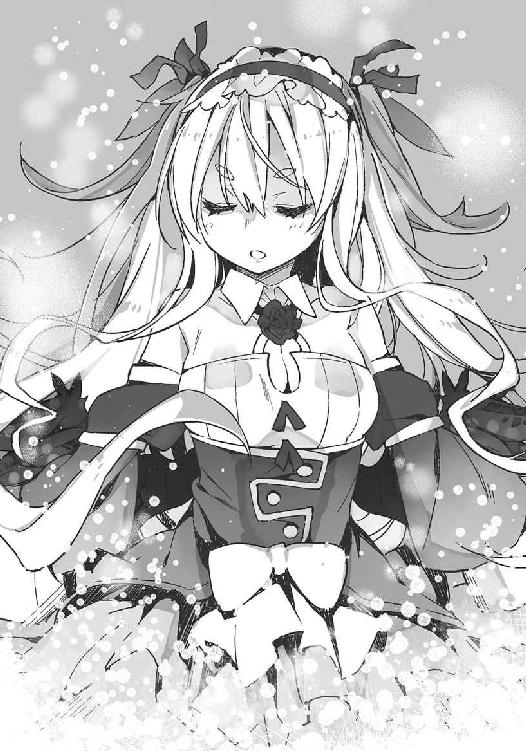
「作り物......じゃない？」
少女は声の方をちらりと見て笑った。直後、黒い翼がバサバサと羽ばたく。
「う、動いた！ 本物だ！」
人々が驚きの声を上げる。
少女はそちらを冷めた目で一瞥し、振り返って雪の女王を見下ろした。
「さて。貴様なんぞと遊んでもつまらん。一瞬で終わらせてやろう」
呟き、少女はすうっと片手を上げ、ソーマに向かって振り下ろした。
「降魔展開──〝迦具土〟。神殺しの焰、その身で味わうがよい！」
その瞬間、ソーマの全身から激しい炎が噴き上がった。冷え切っていた大気が炎に炙られ瞬時に何十倍にも膨張する。霧が生じて視界が覆われ、しかしすぐに蒸発してクリアになる。
「ウウ！」
悪魔が呻き、ソーマから離れる。
「くっ」
ソーマが歯を食いしばった。噴き荒れる炎が竜の形となり、ソーマの手元──銀色の剣へと収束されていく。すさまじい高熱を放っているはずの炎は、不思議とソーマ自身を焼くことはない。
「おおお！」
炎を纏った剣をソーマは逆手に持ち直すと、焼かれた体を再生しようとしている雪の女王のみぞおちに深々と突き刺した。神像のような肢体が飴細工のように溶け落ちる。
「グ！ ガアアアァァ......」
悪魔の絶叫はすぐに途切れた。神殺しの炎が悪魔の喉を瞬時に蒸発させてしまったのだ。それでも炎は勢いを止めない。荒れ狂い、炎の顎で悪魔を食らい、その肩を、手を、腹を、次々に蒸発させていく。
そして数秒もしないうち、雪の女王は完全に消滅した。
地上に降り立ったソーマは剣を軽く振り、炎を消す。
後には大量の水蒸気がわだかまっていたが、それも風の一吹きで荒野に散った。
しばらくは誰も言葉を発しなかった。余熱で解けた霜が雫となって車両からしたたり落ちる、ぽたぽたという音だけが荒野に響く。
「............噓だろ......やっちまいやがった......」
ようやく、誰かが呟いた。
たった一人の少年が強大な悪魔を倒した。
数分前と同じ状況で、しかしその雰囲気は先ほどとは正反対のものだった。
「お前、今のは......」
生き残った人々が感じていたのは歓喜でも安堵でもなく──恐怖。
「今のは......体から炎が......悪魔を焼き尽くすほどの......」
「魔法？ 悪魔でもない人間が......魔法を使ったと......まさか......」
「それにその子は......」
怯える人々が見ているのはソーマの背後にいる幼い少女。背中に黒い翼が生えていて、おまけに宙に浮かんでいる。
「俺の目がおかしくなったのか？ その女の子、何もない空中から突然現れたような......」
そんなことができる人間がいるはずがない。そんなことが可能だとすればそれは、
「......まさか、悪魔？」
「でも少年の方はどう見ても人間じゃないか」
「......黒目黒髪の少年と、金髪に左右の目の色が違う少女......どこかで......」考え込む男が突然顔を上げて「待て！ 思い出した！」と叫んだ。
「こいつ、悪魔憑きだ！」
「悪魔憑き？」
「その噂なら私も聞いたことがあるわ！」別の女が叫んだ。「力を手に入れるために悪魔に魂を売った人間がいるって！ その人間は取り憑いている悪魔の求めに応じてたくさんの人を殺し、魂を狩り集めているとか......」
「えっ!? じゃあ私たちを助けてくれたわけじゃなく......」
「ああそうだ！ ただの悪魔同士の獲物の取り合いさ！」
「逃げろ！ 食われるぞ！」
その言葉が引き金になった。
つい先ほどまでソーマを褒め称えもみくちゃにして喜んでいた人々は一斉に背を向け、まさしく潮が引くように、蜘蛛の子を散らすように駆け出した。
「待ってくれ！ 俺たちは、」
逃げる人々にソーマは手を伸ばし呼びかけたが、その返答は激しい銃声だった。鉄道守備隊が貨物車の据え付け機関砲──ソーマが悪魔と戦っている間に使えるようにしたのだろう──をこちらに向けている。銃把を握る守備隊員は歯の根が合わないほどに震えていた。雪の女王を一撃で屠るような化け物をたかが機銃で倒せるわけがない──おそらくそんなことを思っている。
「............」
ソーマは小さな、とても小さなため息をつくと、生き残りの人々を刺激しないようにゆっくり剣を収めた。
「行こう。メル」
傍らの少女に声をかけ、線路を離れて夜の荒野へと歩き出す。
どこかで梟が鳴いていた。
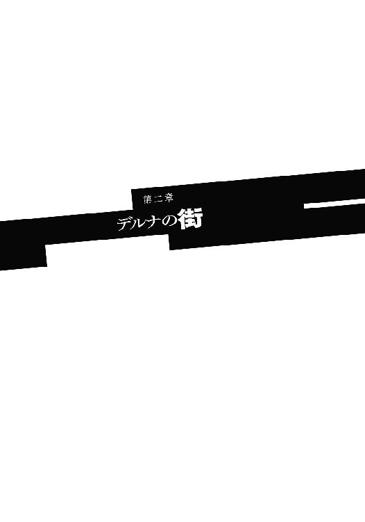
──かつて楽園があった。
神の愛と光が降り注ぐ緑あふれる楽園で、人々は老いも病も知らず、悩むことも苦しむこともなく過ごしていた。輝きは楽園を隅々まで照らし、闇は払われ、恐ろしいことは何もなく、楽園は完璧な調和と平穏の中にあった。
だが、それは永遠ではなかった。
あるとき楽園に一匹の蛇が入り込んだ。
蛇が吠えると空は雲に覆われた。二度吠えると疫病が蔓延した。三度吠えると大地が割れた。
蛇は楽園に死を呼び戻した。
人々は神に蛇を滅ぼしてくださいと祈った。
神は人間に「大きな箱船を造り、全ての生き物をひとつがいずつ乗せよ」と命じられた。
人々は、神には蛇を倒せないのだと落胆し、絶望した。
アダムという男だけが、神の言葉を信じた。
アダムは妻イブと九人の子らと共に箱船を建造し、厄災の中を回って全ての生き物を集め、箱船に乗せた。
七日の後、箱船が完成すると、世界に大洪水が起こった。
神の言葉を信じなかった人々は蛇と共に溺れて死んだ。
アダムの一家は箱船の中で七百の昼と夜を過ごした。
七百一日目の朝、ようやく水が引き、アダムは新しい大地に降り立った。
アダムは新しい大地を〝ファラディース〟と名付けた。
──創世の書「始祖アダム伝」より抜粋。
──やがてアダムとイブが年老いて亡くなると、九人のこどもたちは財産をどう分けるかでケンカを始めました。
一番上の兄は自分が一番上なのだから一番多くもらうべきだと言い、
一番上の姉は多く働いた人が多くもらうべきだと言いました。
だったら箱船造りで一番大変なところを担当したのは僕だね、と二番目の兄が言い、
全ての生き物を集めてくる方が大変だったと、三番目の弟と二番目の姉が言いました。
楽園での仕事よりも、今の仕事の方がずっと大切だと三番目の姉が言いました。
ならば一番の働き者は私だ、と四番目の姉が言いました。四番目の姉が一番たくさんのこどもを産み育てたのです。
話し合いは何一つ進みません。
ずる賢い末っ子はこっそり宝物庫に忍び込みました。兄たちが争っている間に財産を持ち出して遠くに逃げてしまおうと考えたのです。
宝物庫には楽園から持ち出された、たくさんの宝石や金細工、銀細工、目も眩むような宝が一杯でした。末っ子は宝物庫の一番奥で、とても頑丈な鍵のかかった、黒い小さな箱を見つけました。
これだけ大切にしまってあるんだから、きっとこれが一番価値のある宝に違いない。そう考えた末っ子はその箱の鍵を壊して中身を取り出そうとしました。
ところが、箱の中身は財宝なんかではありませんでした。
それは悪魔を封じ込めた箱だったのです。
アダムとイブが楽園から持ち出した、けれどファラディースに放たなかった、たった一つの存在。それを末っ子は解き放ってしまったのです。
これが今日、〝終末の厄災〟と呼ばれている、人と悪魔の戦いの始まりでした。
──中央管理教会出版子供選書「アダムの九人のこどもたち」より抜粋。
荒野を二つの影が行く。足音は一組しか聞こえない。一つは宙に浮いている。
大地を踏みしめ歩いているのはソーマである。
ソーマの頭上にふよふよ浮かんでいるのは、ソーマに「メル」と呼ばれていた少女である。フルネームはメルヴィーユ。といっても本名ではなく、ソーマがつけた名前だ。メルヴィーユはソーマと出会ったときに過去の一切の記憶をなくしていたので、ソーマが子供の頃に飼っていた猫──馬車にはねられて死んでしまった──の名前をとりあえずつけたのである。
大陸横断鉄道が悪魔に襲われてから丸一日と半日。
ソーマとメルヴィーユは、線路から北へ百キロほど離れた荒野を移動していた。ソーマは地図とコンパスを確かめ、目印となる特徴のある岩を見つけて安堵した。このまま進めばすぐに旧街道に出るはずだ。
「だからあんな連中放っておけと儂は言ったんじゃ」
まるで見えないソファがあるかのように空中に寝そべって、メルヴィーユがぼやいた。両足をバタバタさせると短いスカートがめくれて、白い太腿とフリルをあしらったガーターリングが顕わになる。
「命の恩人に礼の一言もないとは。それどころか発砲じゃと？ 信じられん。全く。無知で無力で無能なだけならまだしも礼儀も知らんとは猿じゃな、猿。いっそお望み通りに食ってやるべきだったじゃろうか」
空中に頰杖突いて毒突くメルヴィーユ。
ソーマは振り向きもせずに、
「......別に褒められたくて悪魔を倒してるわけじゃない」
「分かっておる。儂とて人間共にちやほやされたいなどとは思っておらん。が、儂の伴侶が正当な評価を受けないのは、それはそれで業腹なのじゃ」
つまりメルヴィーユはソーマが報われないことが不当である、と言っているわけで、そんな風に怒ってもらえるのはソーマとしても悪い気はしないのだけど、
「......ちょっと待て。誰が誰の伴侶だって？」
「ソーマが儂の」
「俺は悪魔と結婚した覚えなんてないぞ」
そう、メルヴィーユは悪魔である。
ソーマがメルヴィーユと出会ったのは今から一年ほど前のことだ。
その日、ソーマは故郷を失い、ほのかな恋心を寄せていた相手を失い、家族を失い、そして一人の仇を得た。
その仇を追うため、そして殺すために、ソーマはメルヴィーユと契約した──悪魔に魂を売って力を得たのだ。
霜の巨人たちとの戦いで見せた超人的な力。あれはメルヴィーユを介して引き出される悪魔の力──厳密には少し違うのだが──である。
悪魔の力を用いて悪魔を狩りながら、ソーマは仇を追って旅をしている。
その間、一昨日の夜のようなことは何度もあった。そのたびにメルヴィーユは「他人なんぞ放っておけ」と言い、ソーマは「そんなわけに行くか」と返して戦ってきた。
他人など放っておけばいい。確かにその通りだ。人助けなどしたところで〝悪魔憑き〟の噂が広まって色々面倒になるだけだ。教会に目を付けられる可能性も高い。と言うか、もう既に目を付けられ始めているはずだ。
嫌な思いをして、特にメリットもなく、デメリットははっきりしていて、それでもソーマは赤の他人のために剣を振るってきた。次もまた剣を振るうだろう。
他人を見捨てて平然としている奴は「人間」じゃない。
ソーマは悪魔に魂を売った。悪魔の力を行使するため、肉体も普通の人間とはかけ離れたものに変化してしまった。
だが心まで悪魔になったつもりはない。
結果として助けられないことはあるだろうけれど、助けた相手に恐れられることも、蔑まれることもあるだろうけれど、それでも手を差し伸べることをやめない。
悪魔に魂を売り渡したソーマの、それは人間としての矜持であった。
「結婚も契約も似たようなもんじゃろが」
メルヴィーユが口を尖らせてそう言った。ソーマは物思いから引き戻される。
「全然違う。あくまでも互いの利益が一致しただけだ。目的を果たしたらお前なんか、」
「おやおや、契約違反をするつもりか？ 目的を果たしたらソーマの魂は儂のものになる。儂らは永久に一つになる。ほうれ、結婚したも同然じゃろう？ だ、ん、な、さ、ま？」
妙な節をつけて呼びかけるメルヴィーユ。ソーマは「このっ」と手を振り上げる。メルヴィーユは上昇してソーマの攻撃をかわそうとしたが、スカートの裾をソーマに摑まれてしまった。いや、メルヴィーユはわざと摑ませたのだ。少女悪魔はわざとらしく頰を染めて、
「強引なのは嫌いではないぞよ？」
「......」
ソーマはパッと手を離した。
メルヴィーユはくるくる回ってスカートを直してから舞い降りてきて、
「つれないのう。儂はこんなにソーマを愛しているというのに」
とびっきりの美少女に上目遣いでこんなことを言われてときめかない男はいない。
ただしそれは相手がまともな人間であればの話だ。
メルヴィーユは悪魔である。人間を堕落させ、籠絡し、その魂を食らい尽くす魔性の存在である。悪魔の誘惑に迂闊に乗ったらどんなことになるか。
「俺は地獄には行きたくない。来世も人間として生まれたい」
「儂はソーマと一緒なら無間地獄も厭わぬぞ。ふむ。地獄の一丁目で新婚生活というのも悪くはないな。子供は男の子と女の子が一人ずつ。庭付き一戸建てで白い魔犬を飼うのはどうじゃ？」
「馬鹿なこと言ってないで姿を消せ」
「姿を消したら契りを交わせないじゃろうが」
「だから契らないって。......街が近いんだ。そろそろ人目を気にしないと」
ソーマは荒野の彼方に目をやった。地平線の少し手前に緑地と、自然物ではあり得ない直線が見えていた。街を取り囲む農地と城壁である。そこから東西に道が延びていて、ごま粒のような人々が行き交っているのが見えた。
「ふむ。確かに初めてはベッドの方が良いな。それでこう、シーツで胸を隠して『優しくして......』と言うのが萌え？ それとも『痛くしないで......』の方が良いじゃろか」
「......萌えってなんだよ？ てか人の話を聞けよ」
こいつと契約したのは間違いだったかも知れない──月に一度は思うことを、今日もまた思ったソーマであった。
城壁が見えてから二時間ほど後、太陽が頭の真上を通り越した頃に、ソーマは街へとたどり着いた。
街の名は〝デルナ〟と言う。
南の積み木谷に大陸横断鉄道が敷設されるまでは、このデルナの街を通る旧街道が、東西交通の主要なルートだった。歴史のある古い街であり、主要交通路から外れた現在でも、多くの人が住んでいる。
見上げる城壁の高さは十メートルほどか。十分な厚みがあり、飛行する悪魔を迎撃するためのバリスタが幾つも設置されている。壁の下部には大型の馬車も楽に通れる大きさのトンネルが設けてあって、検問手続きを待つ旅人が何組か順番を待っていた。ソーマも最後尾に並ぶ。
すると耳元から舌打ちが聞こえた。メルヴィーユである。
どうした？ と問うまでもなく、ソーマにはメルヴィーユが舌打ちをした理由が分かった。トンネルの入り口の壁に、複数の円と五角形、それに古代文字を組み合わせた紋様が刻み込んである。悪魔払いの魔法陣だ。これはただのおまじないや気休めの類ではなく、本当に効果がある。
「大丈夫か？」
ソーマは口元を手で覆って、他の人に聞かれないようにしてメルヴィーユに話しかけた。
『たわけ。儂がこの程度のちゃちな魔法陣で参るはずが......』
不機嫌そうに毒突いていた声が不意に消えて、
「......メル？」
『ううっ。苦しい。息ができない。宿に着いたら胸をやらしく......じゃなかった、優しくさすって欲しいのじゃ』
「............」
噓くさい上目遣いが目に見えるようであった。
不快ではあるが余裕で我慢できる、というところだろう。
魔除けの魔法陣には悪魔に不快感を与える力がある。悪魔はこの作用に逆らえない。魔法陣が見えなくても、近づけば必ず不快感を覚え、その場を離れたくなるのだ。ただしメルヴィーユの反応を見ても分かる通り、絶対に追い払えるわけではない。悪魔の方が十分に強ければ不快感など無視して侵入できてしまう。だからどんな街でも魔法陣だけに頼ることなく、検問を設けて人の出入りをチェックし、自警団を置いて万一に備えている。
ちなみに魔法陣を書くのに特別な技能や道具は必要ない。書式さえ知っていれば誰が書いても何で書いても同じ効果を発揮する。とはいえ雑に書くと効果もそれなりになってしまうが。
魔法陣には悪魔払い以外にも色々な種類があって、火除けだとか治癒だとか、人々は便利に使っている。ただの文字と記号の組み合わせが何故そのような効果を発揮するのかはよく分かっていない。
検問待ちの人の列が進み、ソーマの順番がやってきた。
カウンターに座る衛兵は台帳をめくりながらソーマをちらりと見て、
「字は書けるか？」
「ああ」
ソーマがあっさり頷いたので、少し驚いた様子だった。無理もない。このファラディースではきちんとした教育を受けている人の方が少ないし、大陸横断鉄道を途中下車して、そこから徒歩で丸一日以上をかけて荒野を縦断してきたソーマは薄汚れ、難民同然のなりをしていたのだから。
ソーマはペンを取るとインクの出方を確かめ、台帳に向き合った。
名前、ソーマ・ノイン・スオウ。職業、傭兵。出身、アラド......
すらすらとペンを走らせていると、「ほう？」と衛兵の一人が眉を持ち上げた。
「アラドって、あのアラドか？ 一夜にして悪魔に滅ぼされたっていう」
衛兵の目に好奇の光が宿る。ソーマにとっては見慣れた反応だが、やはり気持ちの良いものではない。
「面白い話を期待してるなら無駄だ。俺はあの日は街にいなかった。仕事から帰ってきたら家がなくなってて、それ以来旅暮らしをしている」
これは噓だった。
あの日、ソーマは街にいた。そして悪魔に蹂躙される街を見た。自警団員が瞬時に解体されるのを見た。焼け焦げた肉の臭いを嗅いだ。そして物言わぬレンリを、
「......っ」
不意に浮かび上がってきた記憶を、ソーマは奥歯で嚙み潰して腹へと吞み下した。
「済まない。嫌なこと思い出させちまったようだな」
衛兵は眉毛をハの字にして、頭を搔きながらソーマに詫びた。悪い人間ではないのだろう。
台帳への記載が終わると荷物を検められる。禁制品は持ち込めない。金などの持ち込みには関税がかかる。その一方で武器の持ち込みはどこの街でも比較的自由である。
悪魔はびこるファラディースでは武装は市民の権利として認められているのだ。もちろん、大砲や爆弾のような大量破壊につながるものは別だし、護身用の武器でも隠し持つのは御法度、申告はきちんとしなくてはいけない。
ソーマは腰の剣と、腿のホルダーに留めていたナイフを外してカウンターに置いた。
衛兵はソーマの剣を鞘から抜き、
「......む？ こいつはミスリル製か！ あまりにも汚いからすぐには分からなかったぞ」
ミスリル──破邪の銀とも呼ばれる、希少鉱石から精製される金属である。それなりに高価な品物ではあるのだが、ソーマは特にこだわりがあってこれを使っているわけではない。実家の焼け跡から使えそうなものを拾ってきただけだ。
「斬れるなら問題ない」
「まあそうだが。道具はきちんと手入れするべきだぞ」
そう言いながら衛兵は剣をソーマに返した。
続いて麻薬などを隠していないかのチェック。当然、問題なく終わる。
広げた荷物を元通りに片付けると、衛兵はカウンターの端に置いてあった革表紙の本をソーマの前まで引き寄せた。聖書である。
ソーマは聖書に片手を載せ、聖句を唱える。
「......始祖アダムの名において、我らファラディースのきょうだいは互いを愛し、敬い......」
人類の祖への誓いから始まる十二行の詩は、教会の信徒でなくても、大陸に住まう者なら誰もが暗記しているものだ。検問手続きにおいて聖句の暗唱が義務づけられているのは中央管理教会の権威付けなどという政治的な理由ではなく、もっと現実的な、必要に応じてのことである。
〝悪魔〟と一言に呼ばれてはいるが、その性質は千差万別だ。小さいものは昆虫並から、大きなものは小山のような竜族まで。サイズも違えば見た目も習性も活動域も違う。共通点は「人を襲い、食らう」と「魔法を使う」、この二点くらいしかない。
その悪魔の中には、人間に化けることができる種族だとか、初めから人間そっくりな種族もいる。そうした人間に近い悪魔は、虫や獣のような悪魔に比べて知能が高い。人間の言葉を理解し、人間のように振る舞って街に入り込み、人を襲おうとする。
そのような、「人型の悪魔」に対する備えが、この聖句の詠唱なのである。
どういうわけだか悪魔はこの聖句が唱えられない。理由は全く分かっていないが、ともかくこれのおかげで、人間に化けた悪魔が街に入ろうとしても水際で阻止できる。
魔除けの魔法陣と聖句。この二つによって、街は悪魔から守られている。
とは言ってもこれらは強行突破ができないわけではなく──例えば正体を隠すつもりもなく飛行可能な悪魔なら、ネズミを襲う猛禽類のように一撃離脱で人を攫って行くことも可能だし、何かの手違い、見落としの可能性は常にある。だから人々は魔術的な防御を過信せず、自警団や騎士団を組織し、城壁の上に兵器を置くなどの対策も同時に取っている。
「......我らいずれ約束の地に至りて永遠を取り戻さん」
ソーマが何事もなく聖句を唱え終えた。
衛兵の方もおざなりな感じで頷き、
「オーケー。後は通行税だな」
どこの街でも城壁を出入りするたびに通行税の徴収がある。税額は街によってまちまちで、住民と旅人でも額が違うが、デルナの街の旅人の通行税は大人一人あたり二千五百ダールだった。これは激しい肉体労働の二時間分に相当する。
「......少し高くないか？」
「悪いな。先月値上げされたんだ。別に旅人いじめじゃねえぞ。住民の通行税も上がってる」
「悪魔が増えたから？」
ソーマがそう訊ねると衛兵は渋い顔で、
「余所では言わないでくれな」
ソーマは無言で頷く。
街の近くで悪魔の出没が増えると、畑仕事に出る農夫や街を出入りする旅人に被害が出る。街は人々を守るために自警団を出動させるが、もちろんこれは無給ではない。街の予算には限りがあり、不足する活動経費を補うためには通行税を上げざるを得ない。増税によって人の出入りが減ればその分、悪魔に襲われる人も減って一石二鳥。
ただしこれは急場しのぎの策である。人の出入りが減れば、街はその分活力を失うので、守りを固めているだけではいずれ滅びてしまう。
「仕事がありそうなら教えてくれ。悪魔殺しは俺の専門分野だ」
「ははっ。言うじゃないか。当分予定はないが、そんときになったら頼むぜ」
増えた悪魔は討たなければいけない。街が討伐隊を繰り出すなら、傭兵にとっては稼ぎ時だ。
衛兵は軽い口調でそう言ってから、ふと思い出したように、
「まあ今は悪魔よりも人間の方がやばい感じだが」
「と言うと？」
「何ね。今、この街には殺人鬼がいるんだよ。連続殺人犯。ええっと、半年ぐらい前からか？ 若い女が殺される事件が続いている。犯人は捕まってない」
「......」
「それでまあ、ちょっとピリピリしてるかな。お前さんは男だから狙われることはないだろうが、どこも店じまいが早めの傾向があるから、そこは注意だ」
しゃべりながら衛兵は小さなカードに日付を書き込み割り印を押し、
「こいつが滞在許可証だ。街の中では常時携行すること。自警団に求められたら提示すること。万一許可証をなくした場合は不法侵入者と同じ扱いを受けることもある。お前さん旅慣れてるようだから言うまでもないだろうが、伝える決まりだからな」
そうして厚紙の滞在許可証をソーマにすっと差し出して、
「荒野のオアシス、デルナの街へようこそ！」
城壁をくぐるとまず目に入ってきたのが、狭い通りに左右から覆い被さるようにして建つ、増築に増築を繰り返した木造の高層集合住宅群だった。
デルナの街は遥か昔から荒野を渡る旅人の中継地として栄えていた。
水に困らなければ農業が安定する。つまり食料が安定して手に入る。食料が豊富なら多くの人間を養える。人が増えればその分労働力が増え、悪魔と戦う力も増える。安全が確保されればさらに人が増える。全盛期には人口の増加に城壁の拡張が追いつかないほどで、高階層のアパートがみっしり建ち並ぶ街並みはそのときに完成された。
大陸横断鉄道が開通したことで交通の要衝としての役割は薄れたが、それでも、豊富な水源を背景とした食料生産力を持つデルナは、大陸南部では有数の大都市である。
『ようやく終わったか。ちんたらしおって。退屈で死ぬかと思ったぞ』
通りに入るとすぐ、メルヴィーユが姿を消したままぼやいた。
『で、どの部屋を借りるのじゃ？』
「は？」
『新居じゃよ新居。儂とソーマの愛の巣じゃ。儂としてはやはり郊外の庭付き一軒家がいいんじゃが、ソーマはまだ若いし稼ぎも少ないのは分かっておるから、初めは安アパートになるのも仕方ないと納得しておる。なに、アパート暮らしもなかなかよいものじゃ。狭ければそれだけ身を寄せ合う機会も増えるというもの。小さなテーブルの下で足を搦めて......ぐふ』
「......何をふざけたことを言ってるんだこの色ボケ悪魔は。お前と愛の巣を作るぐらいならその辺の蜘蛛の巣に絡まってる方がまだマシだ」
メルヴィーユはすうっとソーマの前に姿を現し、目をエロエロしく輝かせて、
「何!? 蜘蛛のようにがんじがらめに拘束して欲しいと!?」
「言ってねえよ。ホイホイ出てくるな」
ソーマはメルヴィーユの額にデコピンを叩き込もうとしたが、色ボケ悪魔が素早く姿を消してしまったので不発に終わった。行き場をなくした指先で自分のこめかみを搔き、ため息。
悪魔の遊びに付き合っていては日が暮れてしまう。
ソーマはポケットからメモを取り出すと、そこに書かれた住所を求めて通りを歩き始めた。
狭く曲がりくねった通りをしばらく進むと不意に視界が開け、ソーマは思わず息を漏らした。
街のど真ん中に輝く水面があった。差し渡し二十メートルはあろうかという大きな泉が湧いている。遥か北の山脈に降り積もった雪が春に解けて地下水となり、数百キロ離れたこの街で再び地上に噴出しているのだ。
石積みの護岸で囲まれた泉の中央に、古めかしい衣装を身に纏った、若い夫婦の石像が建っていた。ファラディースの全ての人類の祖、始祖アダムとイブの像である。
その周辺の床には絵物語が刻み込まれている。楽園を襲った洪水。新天地にたどり着いたアダムとイブ。終末の厄災と悪魔との戦い。そして浮上する箱船。
全ての悪魔を打ち倒したそのとき、人々は再び箱船を見いだし、楽園へと誘われる。そこで全ての死者は蘇り、永遠の命を得るだろう──大陸全土に伝わる箱船伝説だ。
「......」
ソーマは眉間にしわを寄せた。誰がこんな夢物語を。
『ソーマ、どうした？』
「ん。いや、ちょっとつまらないことを考えて──」
頭を振りつつメルヴィーユに返事をしたとき、どっぽーん！ と大きな水音がした。振り返ると泉の岸に近い水面で激しい水飛沫が上がっていた。白い飛沫の中でバタバタと動いているのは人間の手。誰かが溺れている。
「──大変だ！」
ソーマは考える前に動いていた。走りながら背囊ごとコートを脱ぎ捨て、護岸を跳躍して泉に飛び込む。
「し！ しーっしっしっしっ！」
溺れる人物が発した意味不明な喚きはソーマを追い払っているのではなく、「死ぬ」もしくは「死にそう」と言いたいのだろう。
「大丈夫か！ 今行く！」
ソーマは声をかけながらザブザブと水をかき分け救助に向かう。初めは腰までしかなかった水深はあっという間に胸の深さになる。どうやらすり鉢状に中央が深くなっているらしい。
溺れているのは少女のようだった。浅黒い肌に銀色の髪。メイド服を着ている。
メイド少女はソーマに気付いていないようで──そんな余裕もないのだろうけれど──でたらめに腕を振りながら泉の中央、深い方へ深い方へと漂っていく。ソーマは思い切って水底を蹴った。少女に飛びつき、一度諸共に水中に沈む。少女は突然のことにパニックを起こしてますます暴れたが、ソーマは水中で少女の体に手を回すと、脇の下を支えるようにしてぐいっと持ち上げた。ざばっ！ と二人の上体が水面から飛び出す。ソーマは止めていた息をふーっ、と吐き出し、
「もう大丈ぶ──っ！」
救助した相手にかけた言葉が途切れる。いまだパニックから立ち直っていないメイド少女がソーマの頭にしがみついたのだ。
「......うぐっ！ お!! あ──がぼごぼっ！ っ！」
落ち着け、足が着く深さだ──ソーマはそう伝えようとするのだが、たっぷりと水を吸ったエプロンと分厚いメイド服がソーマの顔に張り付き、さらにメイドが全力でしがみついているので、声を出すどころかすぐに呼吸もできなくなってしまう。
「ッ！ ！ ............！」
「しししし死ぬ！ ダメ！ 水はダメ！ 水はダメなのおおおおおぉ！」
「........................」
意識がすうっと遠くなってきた。これは本当にダメかも分からない、とソーマが思った次の瞬間、
『降魔展開──〝雷公〟』
メルヴィーユの声が響き、虚空に髭の老爺の姿が一瞬浮かび上がった。中空から細い電撃が放たれる。
「はうっ」
と電撃に打たれたメイド少女が意識を失い、ソーマから手を離して仰向けに倒れ込む。
『ふん。余計な手間をかけさせ......ソーマ？』
「............」
メルヴィーユの小言がソーマには聞こえていない。
少年は白目を剝いて泉に立ち往生している。メイド少女にがっちりしがみつかれていたソーマもまた、感電して意識を失っていたのだった。
『ソーマ！ ソーマあああ！』
「いや～助かりましたっ！ このご恩は命に代えましてもっ！」
銀髪の少女は元気よくそう言うと、ばばっ！ と床に正座して深々と頭を下げた。歳の頃はソーマとそう変わらない。この辺りでは珍しい浅黒い肌をしている。南方からの移民なのかも知れない。
「そんなに大層なことじゃない。忘れてくれ」
「いえいえいえ大層なことでございますよ！ あなたは私にとってまさしく命の恩人っ！ 命を救われたからには命でお返しするのが当然、何なりとお申し付け下さい！ さあ！」
なんて言いながらにじり寄ってくる。その低頭なんだか強引なんだかよく分からない勢いにソーマはうろたえ、
「ええと......じゃあとりあえず普通に椅子に座ってくれ」
「はいっ！」
少女は窓際に置かれていた椅子に無意味に勢いよく座って、
「次は!?」
「え？」
「次は何をいたしましょう!?」
「えっと......あ、名前を聞いてなかったな」
「ジゼルです！ ご覧の通りのメイドです！ って今はメイド服じゃなかったですね」
「俺はソーマ」
「ソーマ様は旅の方でいらっしゃいますか？」
「ああ。今日着いたところだ」
「そうでしたか。旅の疲れも癒えていない方にとんだご迷惑を......」
「気にしなくていい」
「そうは参りません！ このご恩はなんとしてもお返ししますとも！ 何でもお申し付け下さい！ 肩をお揉みしますか？ それとも足を舐めましょうか？」
頼めばケツの穴でも舐めてくれそうな勢いであった。
まさか本当に頼むわけにもいかず、返事に困ったソーマは視線をそらした。壁にシフト表が貼ってあった。
ソーマが今いるのは、泉に面した喫茶店の従業員用控え室だ。
雷に打たれたソーマはすぐに意識を取り戻し、銀髪メイド少女──ジゼルを担いで泉から出た。そこに、ジゼルが溺れているのを目撃した喫茶店のウェイトレスがやってきて、体を拭くためのタオルを貸してくれたのだ。
ジゼルの方はウェイトレスと、客の有志によって控え室に運ばれ、濡れた服を着替えさせられ──着替えもウェイトレスが用意してくれたらしい──そうこうしているうちに意識を取り戻し、「助けてくれた人に御礼が言いたい」と言うので、こうして従業員用控え室でのご対面となったのだ。
ソーマとしては暇なわけではないし、別に感謝されたくて助けたわけでもないし、ジゼルを預けたら自分はとっとと立ち去りたかったのだが、メルヴィーユが放った電撃は思ったよりも強く、足ががくがくしていたので逃げそびれた格好だ。
「助けるにしてももうちょっとやりようがあるだろうが......」
『ふん。儂以外の女に抱きつかれて鼻の下を伸ばしておった罰じゃ』
ソーマの独り言にメルヴィーユが反応した。もちろん声だけだが、ぷりっとした唇を尖らせている様子はありありと想像できる。
「あれは抱きつかれてたんじゃなく、『しがみつかれていた』って言うんだ」
眉間にしわを寄せてぼやくソーマ。と、ジゼルが首を傾げて、
「ソーマ様？ どなたかとお話ししているので？」
「え？ ああ、いや。旅暮らしのせいか独り言が癖になってて......」
とソーマがごまかしたとき、ノックと共にウェイトレスが控え室へと入ってきた。
「どう？ そろそろ落ち着いた？」
「あ、はい。おかげさまで」
ジゼルが勢いよく立ち上がって頭を下げ、ソーマは椅子に座ったまま小さく頷いた。
「あんたの制服はクリーニングに出しておいた。後でお屋敷の方に届くようにしてある」
「わざわざ済みません」
「いいのよ。しっかしあんたも鈍くさいわねえ。普通落ちる？ 子供じゃないんだから」
「......うう、言葉もありません......。今回ばかりは本当に死ぬかと思いましたぁ......」
うなだれるジゼルと、呆れたような、しかし優しそうな笑みを浮かべるウェイトレス。どうやら二人は以前からの知り合い、それも仲の良い友人であるらしい。
不意にジゼルがよろけた。
「とと......あれ？」
「どうしたの？」とウェイトレス。
「えと、なんでしょうね。なんか背筋にぴりっとした感じが」
「大丈夫？ もう少し休んでいく？」
「いえ、大丈夫です。もう帰ります。旦那様の夕飯の支度もしないといけませんし」
「でも......」とジゼルを心配そうに見つめていたウェイトレスは、「そうだ！ そこの君！」とソーマを指差し言った。「この子を家まで送っていってくれない？」
「俺が？」
「うん。まあたまたま居合わせただけの相手に頼むのも図々しいって言えば図々しいんだろうけど、あたしはまだ仕事抜けられないし。そうそう！ この子の旦那様はかなりのお金持ちだから、この子を助けたって伝えればたっぷり謝礼くれるわよきっと」
謝礼、の二文字に心が揺れた。街から街の旅暮らし、路銀はいつも不足気味だ。実を言えばメルヴィーユを隠れさせているのだって、正体がばれないようにというよりは、通行税や切符代を浮かせるためという理由が大きい。
しかしこうやって行く先々で人々と深く関わることにソーマは抵抗があった。
メルヴィーユの存在を知ると──ソーマが悪魔憑きであると知ると、誰もがそれまでの態度を百八十度変える。親しげに肩を叩いてきた手は引っ込められ、信頼のまなざしは恐怖のそれに変わる。だからソーマはなるべく他人との関わりを減らし、今日まで旅を続けてきた。
「悪いが用事がある。人を訪ねなくてはいけないんだ。だからこれ以上構ってはいられない。ガキじゃないんだからお家には一人で帰れ」
ソーマはなるべく冷たく聞こえるように告げ、立ち上がってコートを羽織った。
「人？ ご友人ですか？」
「いや。アーチボルドという博士だ。この街に住んでいると聞い、」
「あははっ」
ウェイトレスが突然、ソーマの言葉を遮るようにして笑い出した。
「何がおかしい？」
「アーチボルド博士ね。ヴィクター・アーチボルド。考古学者で悪魔学者の」
「そうだが？」
「その博士ね、この子の旦那様」
ウェイトレスがジゼルのほっぺを突きながらそう言い、「......『ガキじゃないんだからお家には一人で帰れ』だって......くー、格好いい」
「ダメですよ笑っちゃ」
そう言うジゼルも頰がプルプル震えている。
「............」
憮然とするしかないソーマであった。
ジゼルと共に喫茶店を出て通りを進み、水路に架かる橋を越えたところで、突然空が広くなった。道路に覆い被さるように並んでいた高層アパートが水路を境に完全に姿を消し、広い庭を持った一軒家ばかりが並んでいる。水路のあちらとこちらでまるで別の街のよう。古く大きな街ではよくあることだが、貧富の差もここまであからさまだと逆に笑えてくる。
家同士の間隔が広いために日当たりもよく、適度に配された街路樹の間を抜けていく風がとても気持ちいい。と、
『ソーマ、儂はどうにも心配じゃ』
耳元でメルヴィーユの声がした。「何が？」とソーマが訊ねると、
『あのメイド、そなたに懸想したかも知れん。なんといっても命の恩人じゃ』
「ん」
とソーマは神妙に頷く。自分に好意を寄せる相手が、こちらの正体を知った途端掌を返す──ソーマにとっては慣れたこと、毎度の話ではあったが、だからといって心が痛まないわけではない。深入りしないように、適当に。
メルヴィーユの気遣いをソーマはありがたく受け入れ、「分かってる」ありがとう、と続けようとしたときだった。
『あれが迫ってきてもきちんと拒絶するんじゃぞ？ ソーマの童貞は儂が奪うと決まってるんじゃ。どこの馬の骨とも分からんメイドにくれてやるわけには、』
「心配ってそっちかよ！ てかお前にもやらねえよ！」
思わず怒鳴るソーマ。
「ソ、ソーマ様？」
怪訝そうな顔で振り返るジゼル。ソーマはゴホゴホと咳払いをして、
「なんでもない。独り言だ」
「ですか」とジゼルは微笑む。「私も結構独り言を言ってるみたいで、よく旦那様から『黙って掃除もできないのか』って叱られてます」
「そうなんだ」
と返事をしながら、ソーマは自分の左前方やや上空──今は何も見えないが、メルヴィーユが実体化するときはいつもその辺りに浮かんでいる──をにらみ付けた。
正体がばれたら面倒なことになると分かっているはずなのに、何故こいつはちょこちょこ出てくるのか。ソーマをからかって楽しいのか。楽しいのだろう。とっても。
「あ。着きましたよ。ここです」
とジゼルが足を止めたのは、周囲の建物よりは一回り小さいが決して見劣りはしない、精緻な彫刻が施された二階建ての屋敷の前であった。
「ここが私の旦那様、ヴィクター・アーチボルド博士のお屋敷です」
こぢんまりとした庭を抜け、正面玄関から邸内へ。ソーマは少し身震いをした。寒い。厚い石壁が外気を遮断するから外より冷えていて当然なのだが、それにしてもこれは少し寒すぎる気がした。泉に落ちたせいで風邪でも引いてしまったのだろうか。
玄関ホールには燃えさかる剣を掲げた天使の像が飾ってあった。
炎剣の大天使は終末の厄災の際、人々の祈りを聞いて地上に降臨し、魔王の額を叩き割ったという伝承があり、その像を置くだけでも魔除けになると言われているが、さて、実際に効果があるかというと......。
『ふむ。これはなかなか見事な仕事じゃ。これを彫った職人は肉体美を分かっておる。見よ、あの外腹斜筋の官能的なひねり具合』
こんなものである。
「では旦那様を呼んで参ります。......あの、先に言っておきますけど、旦那様は少々性格に難が......ああいえ、ではなくて、少々風変わりなお方でして、もしかしたらソーマ様のご気分を害するようなことがあるかも知れないのですが......」
ソーマは頷いた。
「学者先生は気難しいものだ」
「気難しくはないのですが......とにかく呼んで参りますので、ここで少々お待ち下さい」
そう言い残してジゼルは奥の方へと駆けていく。
残されたソーマは大天使の石像を、少々不機嫌な目付きで見上げた。
神や天使が実在するのなら、何故ファラディースに悪魔を跋扈させているのだろう。
何故アラドは滅ぼされてしまったのだろう。
何故、レンリは死ななくてはいけなかったのだろう。
背後に気配。
「──っ！」
大質量の何かが明確にこちらを指向して動いている。
気持ちが内を向いていたために反応が遅れた。振り返る時間はない。ソーマは膝を折り体を丸めながら前に倒れ込んだ。一瞬前までソーマの胸があった辺りで風が巻き、ブンッ、と丸太でも振り回すような音が生じる。ソーマは両手を床につけると逆立ちの要領で全身を持ち上げ、同時に両足をまっすぐに伸ばして倒立蹴りを見舞った。足裏に鈍い打撃の感触。
「ぬうっ！」
野太い声がして相手が怯む。
ソーマは蹴りの反動を使って前に跳び、大天使の石像に摑まると素早くその頭によじ登る。
石像の上から見下ろすと、開けたままの玄関から差し込む光に切り取られた四角い空間に、一人の中年男性が倒れていた。白髪が目立ち始めた頭とは不釣り合いにずいぶんとたくましい体つきで、まくった袖から見える腕には無数の刀傷まである。
堅気ではない。即座にそう判断したソーマは腿にくくりつけてあるナイフ──屋内では剣よりもナイフの方が取り回しがいい──を引き抜くと、逆手に握って石像から飛び降りた。
ソーマが刃物を抜いたのを見て中年男が目を剝く。しかし振り上げたナイフはこれ見よがしのフェイントだ。ソーマは着地と同時に足払いをかけて男を転ばせた。馬乗りになって首筋にナイフを押し当てる。
「動くな！ 何者だ」
「待て待て落ち着いてくれ。怪しい者じゃない」
『怪しい奴の決まり文句じゃな』とメルヴィーユがソーマだけに聞こえる声で言った。
「茶化すな」とメルヴィーユを叱ってから、「こいつが怪しい動きをしたらぶっ放せ。何を喚ぶかは任せる」
『承知』
と、メルヴィーユが臨戦態勢に入ったそのとき、
「ソーマ様!? 何を!?」
玄関に戻ってきたジゼルが血相を変えて叫ぶ。
「来るな！ 不審者だ！」
ジゼルはソーマの警告を無視してたたたっ、と駆けてくると、
「不審者ではありません。この人が私の旦那様です！」
「......え？」
ソーマは目を丸くして中年男性を見下ろし、
「............アーチボルド博士？」
ロマンスグレイのマッチョマンはソーマを見上げて頷いて、
「いかにも。私がヴィクター・アーチボルドだ」
「っ!!」
ソーマは慌てて刃を引いた。ついでに血の気が引いていく。
博士に会うためにはるばる旅をしてきたというのに、まさか、まさかの大失態であった。
「済まない。気配を殺して背後に立たれたものだからつい......」
ソーマは応接室に通された。椅子を勧められ座る前に、改めて先ほどの非礼を詫びる。
対するアーチボルド博士は鷹揚に笑って手を振りながら、
「いやあこちらこそ申し訳ない。帰ってきたら知らない人間が家にいたものだから」
「それで無言で襲いかかる人がいますか。声をかければ済む話じゃないですか」
とジゼルは手厳しい。
「そう思いもしたんだが、最近は少々物騒だろう？ 例の殺人犯もまだ捕まっていないし。ジゼルを狙った不埒者だったらどうしようかと気が気じゃなかったんだよ」
「まあ」とジゼルはちょっとだけ嬉しそうな顔をしたが、すぐに表情を引き締めて「だったら尚更自重して下さい！」
「分かった分かった。今度から気をつける。それよりお客様にお茶を」
「はーい。ついでに着替えてきますね」
ジゼルがぱたぱたと駆けていき、
「これ、家の中で走るなと......まったく」
アーチボルド博士はため息をつきながらソファに腰を下ろし、ソーマにも座るように促した。
ソーマは対面に座った博士をまじまじと見つめる。
「何かね？」
「ずいぶん鍛えていると思って」
「学者なんぞ文弱の徒だと思っていたかな？」
「あ、いや、」ソーマは反射的に否定したが、「......済みません。そう思っていました」
「正直でよろしい。子供は素直が一番だ。私としても毎日肉を食って十キロ走ってトレーニングをして......なんて生活は正直したくない。この歳になると脂身がもたれるのだよ。脂身が。だが悪魔学者としてフィールドワークに出るにはそれなりの体力が必要になる。何故だか分かるかね？」
「......現地で悪魔と遭遇した場合に備えて最低限、自分の身を自分で守れるようでなくてはいけないんですね」
「そういうことだ。頭の回転は速いようだね。それで君......」
「ソーマです」
「ソーマくん。君はジゼルの知り合いなのかね？」
「え？ ああ、違います。俺は今日初めてこの街に来たばかりで、そちらのジゼルさんとも何時間か前に会ったばかりです」
「そのわりに妙に親しげだったようだが」
「ああ、それは......」
ソーマは数時間前の出来事──博士の住所を捜して歩いているときにジゼルが泉で溺れているのを目撃し、救出したことを説明した。
話を聞くとアーチボルド博士は深々と頭を下げた。
「それは迷惑をかけたね。君はジゼルの命の恩人だ」
「いえ、お気になさらずに。頭を上げて下さい。そんなたいしたことじゃないですから」
謙遜し、ソーマはふと気になったことを訊ねてみる。
「ジゼルさんは水に何かトラウマが？」
泉は全体としては大きく、中央部分はかなりの深さがあるけれど、縁の部分はそれほどでもなかった。ソーマがジゼルを助けた辺りは、泉の底に足を着けても胸から上が出る程度の水深だったろうか。いくら泳げないにしても、あそこまで激しいパニックを起こすような深さではない気がするのだが。
はたして、アーチボルド博士はちらりとドアの方を見やり──ジゼルが戻ってこないか確かめたのだろう──ため息をついた。
「肌の色を見て分かる通り、あの子は大陸南部の漁村の生まれなんだが、家族と共に漁に出ているときに、カリュブデスに襲われてしまったのだ」
カリュブデスとは古い言葉で「吞み込む者」を意味する。鯨のような姿をした悪魔で、個体にもよるが小舟程度は軽く丸吞みにしてしまうので漁師たちから恐れられている。
「悪魔が船にぶつかってきたとき、力の弱いあの子は船から放り出された。船にしがみついていた両親や兄弟は船ごと吞まれた。家族と村の仲間が悪魔に吞み込まれるところを、あの子は夜明け前の冷たい海に浸かって目撃した。それで海を......大量の水を怖がるようになったらしい。私は調査のためにその村を訪ねて、ちょうど前のメイドが出て行ったばかりで困っていたのでね、村で持て余されていたジゼルを引き取ってこの街に連れてきたんだ。今では水恐怖症はだいぶ落ち着いてきていて、もう風呂に入るくらいなら平気なんだが、腰より深いとやっぱり拒絶反応が出るんだよ」
「そうだったんですか」
立ち入ったことを訊いてしまったかな、とソーマは少し反省する。
「それでソーマくん。君の方は私に何のご用かな？」
「はい。実は......」
「まさかジゼルを寄越せと言うんじゃないだろうね!?」
「......はい？」
「いくらジゼルの命の恩人でもそれはダメだ。絶対にダメだ。週に一度は皿を割り、三日に一度はバケツをひっくり返し、毎朝目玉焼きを消し炭にする癒やし系ドジッ子メイドだ！ 絶滅危惧種なのだ！ 一億ダール積まれたって絶対に譲らん！」
「いらねえよそんな駄メイド！ というかよくそんなの雇ってるな！」
思わず突っ込みに容赦がなくなるソーマ。
アーチボルド博士はソーマの無礼を咎めることもなく、
「君も大人になれば分かる。長期のフィールドワークから帰ってきたとき、家の空気が冷えきっていることの悲しさを。『お帰りなさいませ旦那様』と迎えてくれる笑顔の嬉しさを」
「博士......」
「そしてお仕置きと称して撫でる尻の感触を！」
「..................」
ああ、この人はダメな大人なんだな......と悟ったソーマであった。
「何を騒いでいるんですか」
と呆れたように言いながら、ジゼルがティーセットを載せた盆を抱えて戻ってきた。テーブルの隅でお茶を淹れ、アップルパイを添えてテーブルに配する。
「さっきも言いましたけど、旦那様は性格に問題があり過ぎるので、真面目に取り合っちゃダメですよ」
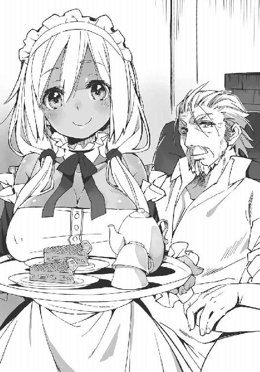
主の手前、ジゼルの言葉に頷くこともできずソーマはパイに手を伸ばす。
「いただきま......」
膝に何かがぶつかる感触があった。テーブルの下に置いてあるものを蹴ってしまったのかと思って覗き込み、ソーマはぎょっとした。なんとメルヴィーユが実体化して、ソーマの膝を叩いていたのだ。
「!?」
何やってるんだ馬鹿──喉元どころか前歯の裏側辺りまで出かかった声をソーマは無理矢理吞み下した。ふくれっ面のメルヴィーユは声には出さずに口の動きで「ソーマばっかりずるいのじゃ。儂にも食わせろ食わせろ食わせろくーわーせーろー」。
「......」
ずるいったってお前、どうしろと。
メルヴィーユはソーマの膝を叩くのをやめ、今度は指先で優しく撫で始めた。ソーマが耐えていると指先が内股へと這ってくる。
「ひゃっ」
「ソーマくん？」
「いえ、ちょっとしゃっくりが」
ごまかすようにアップルパイを口に放り込んでソーマは焦った。このままメルヴィーユに暴走させておくといろんな意味でまずいことになる。ソーマはメルヴィーユに速やかにお引き取りいただく方法を急いで考えた。
「とてもおいしいパイですね。土産に持って帰りたいくらい」
「それはよかった。こんなものでよければいくらでも。ジゼル、残りは包んでおきなさい」
「はい、旦那様」
そのやりとりを聞くと、メルヴィーユは満足そうに頷きながら姿を消した。ソーマもほっと一息。
それにしても悪魔のくせに人間の魂よりも甘い物が好きなのはいかがなものか。「腹減った。人食わせろ」と言われるよりはマシではあるが。
「では改めて来訪の目的を聞こうか。私も暇人ではないので手短に頼む」
どこがだよ、と突っ込みたかったが、それでは話が進まないのでぐっとこらえる。
「本来ならアポなしの面会は全て断るのだが、君はジゼルの命の恩人だ。話ぐらいは聞こうではないか」
「はい」
ようやく本題だ。ソーマは紅茶で喉を湿らせてから、
「博士は大陸でも五本の指に入る悪魔学者だと伺いました。それでお訊ねしたいのですが......。その前に紙とペンをお借りしても？」
すぐにジゼルが筆記用具を持ってきた。
ソーマはテーブルに紙を広げると、まずは紙一杯に大きな円を書いた。その内側に接するように正五角形。さらにその内側に、一部が欠けた円を書き、全ての図形の中心部から、内側の円の欠けた部分を通って五角形の頂点の一つへと、交差する波線を引いた。
「魔法陣......だね」
「はい。これが何の魔法陣なのか知りたいのです」
「うーん。これは......」と博士は首を傾げる。「......念のために訊ねるんだが、これは君が勝手に作ったものではない？」
「違います」ソーマは即座に否定した。「細部は正確ではないかも知れませんが」
アーチボルド博士はソーマが書いた魔法陣を凝視して唸った。
「五角形は『守護』を意味する。つまり神の加護を願う場合に用いるはずなんだが......そうすると内側の円が解釈不能になる。開かれた円は『解放』であり『拡散』だ。この二つは相反する。それに何だろうね、この波線は。蛇の文様に似てないこともないが、円環の蛇なら外周に沿ってぐるりと配置するはずだ。こんな風にぶつ切れというのは見たことがない」
「......」
「済まない。私も悪魔学者としてはそれなりに知られてはいるが、専門は悪魔の生態──弱点を調べて撃退する方法を探る方だから、魔法陣にはあまり詳しくないのだ。呪いや儀式については他の先生の方が......ニューヤードのフラメル博士なら何か分かるかも知れないな」
ソーマはちょっと渋い顔をする。
ファラディース最大にして最古の都市であるニューヤードには大きな大学があり、世界中の知性が集まっている。確かにニューヤードなら情報を得られる可能性は高いだろう。しかしニューヤードは同時に、中央管理教会の総本山でもある。教会はファラディースの事実上の支配者、人類の統治者として騎士団を組織し、悪魔と戦っている。〝悪魔憑き〟としてはあまり足を踏み入れたくない土地だ。いずれは行かなくてはならなくなるのかも知れないが。
「力になれなくて済まないね」
「いえ。ありがとうございました」
ソーマは膝に手を置き頭を下げる。顔を上げて立ち上がり、椅子を戻したそのとき、こん、と足下で音がした。ソーマが首から下げていたペンダントが落ちたのである。
「ああっ!?」
とジゼルが頓狂な声を出す。
何をそんなに驚くことがあるのだろう、と思いながらもソーマはかがみ込んでペンダントを拾い、顔をしかめた。鎖が切れていた。大陸横断鉄道で盗まれそうになったときにつけられた傷が広がって、今日、ついに鎖が切れてしまったらしい。
「次の街に行く前に修理しないと......」
呟き、ペンダントをひとまずポケットにしまう。と、
「ん？ あ......むう？」
アーチボルド博士が天井を見上げて呟き、それから魔法陣に見入った。
「博士？」
「......今何か思い出した......」
「この魔法陣を知ってるんですか!?」
勢い込むソーマ。
「......ような気がした......んだが......」
アーチボルド博士は眉間にしわを寄せてこめかみを押さえ、何とも曖昧なことを言う。
「......あー、うー。ダメだ。出てこない。どこかで見たような気がするんだがなあ......思い出せん。歳かなあ」
「なんとかして思い出して下さい。お願いします」
ソーマは思わず博士に詰め寄っていた。上げた両手をわきわき動かしているのは、博士に摑みかかって揺さぶりたいのをぎりぎりこらえているのだ。
「と言われても。む。そうだ。何か他に手掛かりはないのか？ 君は何故この魔法陣を調べている？ 君はこれをどこで見たのだ？ 誰かに教わったのか？」
「それは......」
ソーマは目を伏せ、唇を嚙んだ。無意識に拳に力が入る。脳裏に浮かぶのは変わり果てた生まれ故郷。倒壊した我が家。跋扈する悪魔。
ソーマの様子から察したのだろう、博士は表情を緩めて、
「辛いなら無理強いはしないが」
「......いえ」
ソーマは毅然とした表情で顔を上げた。
あの日のことは思い出すのも辛い。だが、辛いからと記憶の底に封じておくわけにはいかない。旅に出る前に誓ったのだ。何としてでも目的は果たすと。
「話します」
仇を取ると誓ったのだ。心の痛みなど気にしている場合ではない。
〝奴〟を追うために、ソーマはまだ癒えぬ傷の刻まれた記憶の扉を開く。
「......信じられないかも知れませんが、この魔法陣は悪魔を喚び出すためのものかも知れないんです」
ソーマの言葉に博士が目を見開いた。
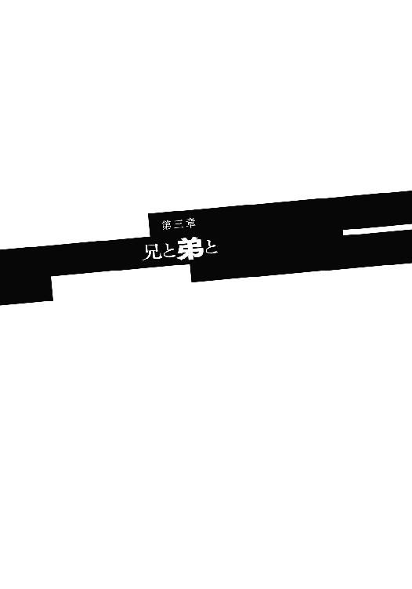
汚れたモップを水の入ったバケツに突っ込み、よいこらせっとバケツを持ち上げる。たいした重さでもないのに足下がふらついて、ソーマは苦笑を浮かべた。連日の訓練に全身の筋肉が悲鳴を上げている。
「っくう」
ソーマは震える脚に力を込めて踏ん張った。うっかりバケツをひっくり返しでもしたら、また一から掃除のやり直しだ。それはつまり午後からの休暇が台無しになることを意味する──と言っても特に用事らしい用事もないのだが。
何度か転びそうになりながらもどうにか廊下の端へ。
背中でドアを押し開けて表に出ると、頭上には澄んだ空がどこまでも広がっていた。一匹の蜻蛉が視界を横切っていく。秋になると空一杯に飛び交う蜻蛉の、今年最初の一匹。まだまだ暑い日が続いているが、時間は確実に流れ、季節は移り変わっていく。
水道脇の側溝に汚れた水を捨てているときだった。
「ソーマ」
「......」
背後から呼びかけられてソーマは硬直した。
逃げようかと思い、そんなことをしても意味がないと思い、振り返る。
「ちょっとたくましくなった？」
振り返ったソーマに微笑みかけ、レンリはそう言った。
「......一ヶ月かそこらで見て分かるほど変わるわけないだろ」
「でもちょっと雰囲気変わった気がする。何か大人っぽい？」
それを言うならレンリの方だ、とソーマは思った。
レンリの家、クロア家はその祖をたどると〝終末の厄災〟以前まで遡ることができる──とはさすがにはったりだろうけれど、アラドへの入植が始まった時点でクロア家は既に名士であり、入植から現在までの数百年間、ずっと人々の中心に座していた。その一人娘であるレンリは、言うなればお姫様のようなものである。
ふんわりとした笑みを浮かべ、誰にでも優しく、みんなに愛されるお姫様。
街のみんなと同じように、ソーマもレンリが好きだった。街のみんなと違う意味で好きだったのだと気付いたのは半年と少し前──新年の祝いの席であった。
ソーマには歳の離れた兄がいる。トーマ・ノイン・スオウ。クロア家ほどではないが、スオウ家もアラドではそれなりの実力者であり、多忙な両親は子供たちを構ってやる時間をあまり持てないでいた。それでソーマはトーマを父親代わりとして育った。ここにソーマと歳の近いレンリが加わり、幼い頃はどこに行くにも何をするのも三人一緒の毎日だった。
そうして月日は流れて今年の最初の日、街の実力者たちが集まるパーティで、それは発表された。
「トーマとレンリは結婚を前提とした交際をしている」──問題がなければ夏に結納、秋に結婚、というスケジュールも同時に示された。
今思えば、両家の親たちは最初からそのつもりでいたのだろう。でなければ年頃の娘を一人、従者もつけずに預けていくなんてことはしないはずだ。
本人の意向を無視した政略結婚というわけではない。レンリは大人たちの意向などとは関係なく、トーマのことを本気で慕うようになっていた。
「私の理想の王子様」とレンリはトーマを評した。
ソーマから見ても、兄はたいした人物だった。聖都ニューヤードの大学でトップクラスの成績を収めただけではなく、運動神経も抜群、楽器も弾ければ詩作の才能もあり、甘いマスクは舞台俳優がうつむいて逃げ出すほど。人格面も立派なもので、決して驕ることはなく、常に己を磨き、弱い者に手を差し伸べる。
あの人がお兄さんだと、何かと比べられて大変だろう？ そう訊ねられたことが何度かあるが、ソーマは兄に対して劣等感を抱いたことがなかった。「格好いいお兄ちゃん」はソーマの自慢の種でこそあれ、劣等感を刺激するものではなかった。これには兄弟の歳が離れていたこと──トーマはソーマよりも一回り近く年上だ──と、多忙な両親に代わって、トーマがソーマの面倒を見ていたことが関係している。
そして何よりも、トーマは桁の違いすぎる男だった。
「いつの日かこの世界から悪魔という脅威を取り払い、全ての人々が安心して眠れるようにしたい」──トーマ・ノイン・スオウはそんなことを真顔で言える人間だった。そのために学び、聖都への留学も果たした。留学中、教皇ディアドラの目に留まり、直々にお褒めの言葉を頂戴したことすらある、アラド始まって以来の天才だ。次元の違う相手にはそもそも張り合おうという気持ちが湧かないし、劣等感も生まれようがない。
この世で一番尊敬する兄と、この世で一番仲の良い幼なじみが幸せになる。その素晴らしい知らせに、だけどソーマは拍手ができなかった。祝いの言葉がかけられなかった。
気付いてしまったのだ。自分もまた、レンリのことが好きなのだと。
それはあまりにも遅すぎる発見だった。
気付いたのが五年前なら、レンリにアプローチすることもできただろう。
レンリのお相手がトーマだと、最初から決まっていたわけではない。むしろ歳の近いソーマの方を、クロア家としては望んでいたようでもあった。だが当時のソーマは女の子よりもチャンバラが好きな悪ガキでしかなかった。
三年前なら己の気持ちをなかったことにできただろう。ソーマは幼なじみに「異性」を感じていたが、それは明確な恋心ではなかった。
まだ、その頃は。
だが今となってはどちらもできない。ソーマの想いは自分でも気付かないうちに大きく育っていたし、レンリの心はとうの昔に兄のものになっていた。
やり場のない想いを抱えてソーマは苦しんだ。
レンリと顔を合わせるのがたまらなく辛かった。兄に会いに来るレンリの幸せそうな顔を見るのが辛かった。
どうして僕じゃないんだ、と、いつか叫んでしまいそうだった。
それで結納をきっかけに、ソーマは家を出ることにしたのだ。
思いの丈をぶちまけて、レンリを困らせてしまわないように。
大好きな二人が幸せに過ごせるように、ソーマは自分の想いを殺すことを選んだのだ。
家を出たいとソーマが告げると、両親はあっさり頷いた。何か察するものがあったのかも知れない。
かねてからソーマは剣で身を立てることを──いつかは中央管理教会の騎士になって、世の人々のために悪魔と戦いたいと考えていた。しかしアラドには駐留騎士団はいないし、そもそもの問題として、このときのソーマは十五歳、騎士団の採用基準にはまだ三年足りない。それで、時期が来るまで自警団で経験を積むこととなり、ソーマは自警団の寮に住み込みが決まった。本当は自警団の採用も十六歳からなのだが、スオウ家はその程度の規則のねじ曲げはできてしまう家柄であった。
「一人でこんなところ来てていいの？ 兄さんは？」
「トーマはお仕事。大事な実験があるって、ホールを占領して教会の人と一緒にずっと何かやってる。おかげで結婚式の準備も進んでなくて」
「......」
ソーマは「馬鹿兄貴......」とため息をついた。
容姿端麗、頭脳明晰、身体堅強と三拍子揃ったトーマの唯一の欠点が、集中すると周りが見えなくなることだ。以前にも千ページもの論文を書き上げるために三日以上、飲まず食わずで書斎に閉じこもって周囲の人間を心配させたことがある。
「兄さんを引きずり出せばいいの？」
「ううん。実験は今夜で終わり。明日からはちゃんと式の準備に入るって」
「じゃあ、何の用？ 僕は忙しいんだけど」
気持ちを隠そうとすると、自然と口調が荒くなった。こんな言い方じゃレンリが悲しむだろうな、とは思ったが、他にどうしようもない。
「ごめんなさい。邪魔するつもりはなくて......」
レンリが目を伏せた。長いまつげが憂いを演出する。その予想外の艶めかしさにソーマは唾を飲み込んだ。
どうして、と思う。
どうして兄さんなんだ。
父親代わりだった優しい兄。剣を教えてくれたのも、勉強を見てくれたのも、みんなみんな兄だった。一緒に父親の寝室に忍び込んで酒瓶を盗み出し、見つかってこっぴどく叱られたことを今も覚えている。憎むこともできやしない。
「あのね、渡したいものが、あるの」
顔を上げ、一語一語句切るように、レンリは言った。
「これ」
レンリは首にかけていたペンダントを外してソーマに見せた。赤い大きな宝石をはめ込んだ、とても古いペンダントだ。
「お守りなの。ソーマはこれから自警団で、街の人のために悪魔と戦うんでしょ？ その後は騎士様になって世界中の人のために」
「ダメだよ。そんなものもらえない。もらう理由もない。それにお守りがなくなったらレンリが困るだろ」
ソーマの記憶が確かなら、レンリはこれを幼い頃から肌身離さず身につけていた。「おばあちゃんからもらった」と言っていなかったか。代々伝わる宝物のはずだ。
「私はいいの。トーマに守ってもらえるから」
頰を染めてレンリは呟く。
その一言がソーマの胸に突き刺さることを、未来の花嫁は知らないのだ。
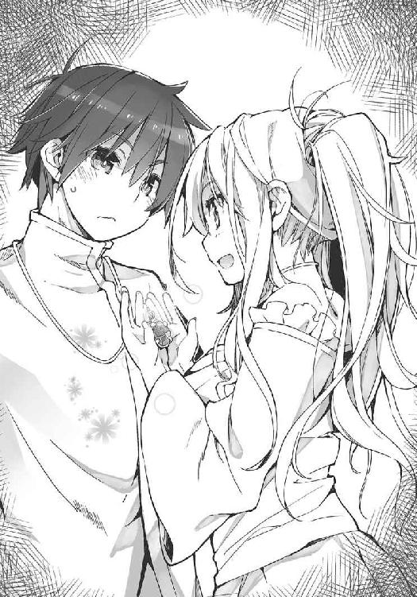
「ソーマのことが心配なの。守ってあげたいけど、ソーマは私の手の届かないところに行っちゃうから」
「......」
ああ、とソーマは呻いた。今、分かった。レンリにとって、自分は「弟」でしかなかったのだ。最初から最後まで。
「ソーマ？」
「......何でもない」目を閉じて小さく深呼吸をして、「分かったよ。ありがたくもらっておく。これからもよろしくな──義姉さん」
レンリは目を丸くしてしばし呆け、
「義姉さん。んっふー。私がソーマのお義姉さんか......あは」
「......まさか今気付いたの？ 兄さんと結婚したら僕の義姉になるんだって」
ソーマが馬鹿にしたように言うとレンリは頰を膨らませて、
「分かってましたー。ちょっと実感がなかっただけですー」
「それ同じことだから」
「お義姉さん......。お義姉ちゃん......。んふ。何かくすぐったい。んふふふふ」
レンリは頰を染めて困ったようにはにかみながらその場でくるくる回る。
それが、生きているレンリを見た最後になった。
この夜、突如として出現した悪魔の群れによって、アラド市は壊滅する。
その夜、ソーマはなかなか寝付けずにいた。
宿舎のベッドに横になったまま、ぼんやりと自分の腕を見る。痣だらけだ。街の安全を守る自警団の訓練には容赦がない。ちょっとでも動きが悪いと容赦なく打ち込まれる。
初めのうちこそ先輩団員にやられっぱなしだったソーマであるが、近頃は五本に一本くらいは取れるようになっていた。トーマが聖都に留学するまでずっと、ソーマはトーマに稽古をつけてもらっていた。その成果である。
『ずるいよ』
ふと、ある日のことが思い出された。いつだっただろう。自宅の裏庭でいつものようにトーマに打ち負かされた後、ソーマはそう言ったのだ。
『兄さんは頭がいいのに剣も得意とかずるい』
普段のソーマならこんなことは決して言わない。あの日は確か、試験の成績が悪くて担任に呼び出しを食らったか何かでイライラしていたのだったか。
『ずるいなんてことはあるか。毎日訓練した結果だ』トーマは非情に指摘し、それからふと表情を緩めて『まあ歳の差もあるだろうな。俺はお前より十年長く生きてるわけだし。お前も十年修行すれば俺と同じ......いや、俺以上に強くなれるよ』
『本当に？』
『ああ。本当に。剣についてはお前の方が才能がある。俺が言うんだから間違いない』
その言葉にソーマはたちまち気をよくした。尊敬する兄のお墨付きをもらえたのだ。でも十年は長すぎる。待ちきれない。明日から訓練時間を倍にしよう。そうすれば五年で追いつけるはず。そんなことを考えていたソーマの前で、兄はふと表情を陰らせた。
『しかしいくら剣の修行をしたところでこの世界を変える力には、人類には......』
『兄さん？』
『ん。いや、何でもない。さあ、もう一本行くぞ』
トーマはごまかすように木剣を構えた。
あのとき兄は何を考えていたのだろう。
と、物思いにふけるソーマの耳に、遠い半鐘の音が聞こえてきた。
「......何、ううっ」
呟きながら体を起こし、筋肉痛に低く呻く。
見回すと、同室の自警団員たちが目を覚ましたところだった。
「火事、ですか？」
「のようだな」ソーマの質問に隣のベッドで寝ていた班長が答え、舌打ちをした。「何で俺たちが控えの晩に」
自警団の仕事は街を守ること、第一に悪魔と戦うことである。が、街の近くに悪魔が出没することなどそうそうなく、警察や消防の応援としてかり出されることが一番多い。この応援出動は当直、控え、休みの三班体制になっている。今週のソーマたちは控えに当たっているが、控えの班が実際に応援に出ることはまずない。たいていはお呼びがかからずに就寝になるのだが、中途半端な時間に起こされると寝直すこともできずに調子が狂う。班長の舌打ちの理由はこれだ。
「火事にしては変な感じがしませんか？」
ソーマは天井を見上げながら呟いた。
聞こえてくる半鐘の音は一つではない。複数の箇所で同時に火災が起きるのはあり得ない話ではないが、煮炊きの時間でもなく、暖房が必要な季節でもないのにその可能性は低い。
「あん？ まあ当直の連中がすぐに情報持ってくるだろ。......連続放火だったりしたら面倒だな」と班長が呟いたとき、地響きが宿舎を揺らした。
「地震？」
班長はちらりとカンテラを見て、それから窓に近づいた。カーテンの隙間から身を乗り出し、
「ふおっ!?」
次の瞬間、班長の体は輪ゴム鉄砲のような勢いで外に飛んでいった。
「班長！」
ソーマは慌てて窓辺に駆け寄ろうとしたが、不意に強烈な悪寒を覚えて硬直した。刹那、開かれた窓から何かが投げ込まれる。
班長の首なし死体だった。
「ひっ！」
半鐘がけたたましく鳴り響く。
夜風にカーテンが払われて、ソーマはそいつを見た。
二足歩行する黒い山羊。そこだけやたらと人間そっくりな手に、無数の人間の首をぶら下げている。
それは、悪魔だった。
ソーマはその場に尻餅をつく。どうして街の中に悪魔が。
「テメエ！ 班長を！」
突然の理解不能な出来事に、それでも団員たちは即座に対応した。数人が剣を摑んで窓から飛び出し、息の合った連携で悪魔を包囲する。悪魔は生首を投げ捨てて応戦。武器を持たない悪魔に対し、自警団は剣のリーチを生かして立ち回る。一人が悪魔の正面で注意を引き、別の団員が隙を突いて後ろから斬りかかる。深追いはしない。慎重に、確実に。
誰一人油断などしてはいなかった。だが、
「ＲＹＹＹＹＹＹＹＹＹＹＹＹＹＹＹＹＹＹＹＹＹＹＹ」
山羊頭が人間には聞き取れない言語で吠えた。瞬間、闇の波動が周囲に広がり、百戦錬磨の団員たちが揃って全身を震えさせた。
悪魔が右腕を振り上げる。次の瞬間、間合いの外にいたはずの団員の首が飛んだ。瞬きをする間にまた一人。三人目の首が飛んで、ソーマはようやく、それが悪魔の爪によるものだと分かった。糸のように細く長く伸ばされた鋭い爪。それが自警団員の首を刎ね、胴を輪切りにし、血と内臓を辺りにまき散らしているのだ。
「な、なな......なん、」
なんだこれは。
この一ヶ月、厳しい訓練をつけてくれた先輩たちが、まるで魚のようにぶつ切りにされていく。それは戦闘ではなかった。命のやりとりではなかった。
それはただの破壊だった。
「悪魔......これが悪魔......」
こんなものがこの世に存在するのか。存在していいのか。
ソーマとて悪魔を見たのはこれが初めてではない。兄とレンリと、それから何人かの大人たちと、隣の街まで行く途中に角豚という悪魔の群れに襲われたことがある。そのときは兄が華麗な剣技と銃捌きで無数の悪魔を一掃した。だが、あのときの悪魔と今目の前にいる悪魔は、同じ「悪魔」であっても全くの別物に思えた。
これこそが悪魔。本物の悪魔だ。これに比べたら角豚など気性の荒い獣でしかない。
「新入りぃ！」
団員の一人が悪魔と対峙したまま叫んだ。
「は、はいっ！」
突然呼ばれた驚きに、ソーマは失禁しそうになりながら答える。
「誰かにこのこと知らせてこい！ 急げ！」
「はいっ！」
やるべきことを与えられて、ソーマは何も考えずに立ち上がった。
今なら分かる。あの団員はソーマを逃がそうとしてくれたのだ。新入りが──まだ子供のソーマがこの場を離れる口実を与えてくれたのだと。四方で半鐘が鳴っていた。それはつまり、同じようなことが街のあちこちで起こっていたことを意味する。
もう何もかもが手遅れだった。知らせる相手などもう残っていないことを、先輩団員は察していたはずだ。
だがこのときのソーマはそれが分からなかった。
「俺たちはもうダメだがお前は逃げろ」そう言われたことが分からなかったソーマは、愚直にも事態を報告すべき上司のところ──自警団本部のある街の中心部へ向かった。
ソーマは靴も履かずに宿舎を飛び出し、全力で駆け出した。そして一分もしないうちに立ち止まった。
通りに巨大な影があった。身の丈十メートルを超える一つ目の巨人が車も建物もまとめて踏み潰している。最初に感じた地響きはこれだったのだ。
街の方々に火の手が上がっている。
いつの間にか半鐘は止んでいた。
路地に赤い眼をした大ネズミの群れ──齧っているのは人間の骨。
赤子を咥えた狼が屋根の上を走る。よく見れば狼の足は宙に浮いていた。
火災の光が照らす夜空、黒煙の隙間に羽のある蛇が飛び交う。
どこを見ても悪魔、悪魔、悪魔。
「助けて！ 誰か助けて！」
叫ぶ声にソーマは我に返った。寝間着姿の若い女が通りをこちらに駆けてくる。
女は腕の長い猿のような悪魔に追われていた。悪魔の体長は百二十センチかそこら──だがソーマには倍くらいの大きさに見えた。化け物。人食らい。勝てるわけがない。
「こっち！」
いまだに小便が漏れそうなほど怖かったが、助けを求める人を前にして、ソーマは未熟ながらも自警団員の自覚と勇気を振り絞り、女に声をかけた。
女がソーマに気付いて進路を変えた。ソーマも女の方へと走る。女と合流して後ろにかばい、悪魔と対峙。そこで武器を持っていないことに気付いた。
「ええい、くそっ！」
ソーマはやけっぱちのパンチを悪魔に向かって繰り出した。悪魔の方もそう来るとは思っていなかったのだろう、ソーマの拳は驚くほどきれいに悪魔の顔面を捉えた。体重を乗せた一撃は、しかし悪魔に何のダメージも与えない。悪魔は鋭い爪でソーマに攻撃する。ソーマの腕に、胸に、鉤裂きのような傷が幾つも走る。ソーマは倒れ込みながら大きな石を摑んだ。これなら素手よりは効くはずだ。とどめを刺しに来たら逆に脳天かち割ってやる──だがそんなソーマの思惑を嘲笑うかのように、悪魔はソーマに背を向けて若い女に襲いかかった。
「ああああっ！」
悲痛な叫びは自分のものだったのか、それとも若い女のものだったのか。
悪魔は若い女の死体を抱えて屋根の上へと跳び上がった。悪魔が人を襲うのは食事のためだ。悪魔が逃げたのはソーマを恐れたからではなく、単に食事の邪魔をされたくなかったからに過ぎない。
「くそっ！」
どのみち助けることなどできなかったのだ──ソーマは己にそう言い聞かせて再び走り出した。こんなのは見習いの出る幕ではない。本部へ急げ。応援を要請するのだ──その思考は半ば以上、願望であった。この惨状に本部が気付いていないわけがない。本部はとっくの昔に状況への対応を開始して──その結果が今なのだ。
頭の片隅ではそれを理解していて、だけど信じたくなくて、ソーマは逃げるように自警団本部を目指す。
そして見た。
「......なんで、こんな......」
本部は既に壊滅していた。
運動場はえぐれ、ひび割れ、二階建ての建物は砲撃でも食らったみたいに破砕され、焦げた臭いを辺りに漂わせている。何人死んだのかも分からない。死体は無数にあったが、どれも数えられるような形はしていなかった。
「誰か！ 誰かいませんか！ 生きてる人は！」
無駄と知りつつソーマは叫んだ。
自警団本部には悪魔がいなかった。それはつまり、ここにはもう悪魔の食料となる人間が一人も残っていないことを意味する。
「誰か！ 誰か！」
結果論であるが、ソーマが街の中心部に向かったのは幸いであった。
このとき、生き残った人々は街から脱出するべく東西の門に殺到しており、悪魔たちもそれを追って街の中心部から門へと移動しながら殺戮を続けていたのだ。
ソーマがやってくるのがもう十五分早かったら、あるいは最初から東西どちらかの門に向かっていたら、ソーマは街の人々と合流し──そして犠牲者の一人となっていただろう。
門の周辺が地獄の饗宴となっていたそのとき、街の中心にできた空白地帯に、ソーマは入り込んだのであった。
そんなことは知らないソーマは生き残りがいないかと必死で辺りを探し回った。
誰もいなかった。
「なんで......なんでこんなことに......助けてよ......誰か......兄さん......にいさああああん！」
ソーマは泣きじゃくりながら兄を呼んだ。兄がこの場にいないことは分かっていた。それでも呼ばずにはいられなかったのだ。一番頼れる相手を。いつでもどんなときでもソーマを助けてくれる無敵の兄を。
「兄さん......にいさん......」
当然ながらいくら呼んでもいくら待っても返事はなかった。
ああ、とソーマは呻く。
きっとトーマも死んでしまったのだ。
ソーマが泣いているとすぐに飛んできて「お前は本当に泣き虫だなあ。で、どうした？」と笑って話を聞いてくれるはずの兄がやってこない理由はそれしか思いつかなかった。
もうお終いだ。
もはや嗚咽もなかった。
全身の力が抜けて、ソーマはがっくりと膝をついた。
そのときだった。うつむいたソーマの視界に、きらりと輝くものがあった。
猿のような悪魔に切り裂かれたシャツの隙間から覗く、血よりも赤い不透明な煌めき。
「......」
レンリからもらったペンダントだった。お守り。
「レンリ......。そうだ」
まだ投げ出すわけにはいかない。
ソーマは己のなすべきことを見つけた。
この街はもうお終いだ。
でも、それでも、レンリは、レンリだけでも助けたい。
「レンリ......君だけでも無事でいてくれ」
小さな願いを胸に宿らせ、ソーマは再び立ち上がる。
名士であるクロア家の邸宅は街の中心部にあり、自警団本部からはそう遠くない。
それでもその短い移動の間に一度、悪魔との遭遇があった。全ての悪魔が餌となる人間を追って門の方へ移動したわけではなく、わずかながら中心部をうろつく個体も残っていたのだ。その悪魔はソーマを襲わずにどこかへ行ってしまった。既に満腹だったのだろう。
悪魔は人間を恨んで襲うわけではない。人間が自分たちの食料だから──人の魂を食らわねば自分たちが生きていけないから襲うのであり、十分に食った後であれば人を見逃すケースはままある。人が獣の乱獲を控えるのと一緒だ。もちろん例外はあるのだが。
ともあれソーマは無事にクロア家にたどり着いた。
「これは......」
クロア家の惨状は他と比べても特に酷かった。屋根が大きくめくれ、三階部分で残っているのは両側の壁だけ、二階部分も床の半分がなくなっている。庭園もめちゃくちゃ。やたらと大きな蹄の跡、そして正体不明の獣のような足跡が幾つもついている。考えるまでもなく悪魔のものだ。
ソーマは道中に倒れていた死体から──悪いとは思ったが──靴と上着を拝借していた。その上着の前ボタンをきっちりと留め、庭を縦断すると、玄関から中の様子を窺った。
「誰か、誰かいませんか！ レンリ！」
少し待っても返事はなかった。ソーマは唾を飲み込み、邸内に踏み込んだ。
ホールの壁に剣が掛けてあった。儀礼用だがないよりマシかと手に取る。
「......ん」
何か聞こえた。耳を澄ます。声だ。男の声。
ソーマはかすかに聞こえる声の方へと進んだ。玄関ホールを右に。回廊を伝って応接室、次の間。書斎のドアが開いていて、声はそこから漏れているようだった。
「誰かいま、──っ！」
完全な不意打ちだった。
書斎のソファにレンリが横たわっていた。
死んでいた。
外傷は一つもなかったが、それでも一目で分かった。
青白い顔に生気はひとかけらもなく、ぞっとするような美しさで、レンリはソファに横たわっていた。
間に合わなかったのだ。
「............レンリ」
ソーマは取り乱さなかった。
衝撃のあまり瞬時に感情が焼き切れてしまったのだ。ソーマはただの事実として、レンリの死を認めた。
その感情の失せた頭に、くぐもった声が聞こえていた。
「......悪魔は......つまり............いや、......では............」
ソーマは声の方を見やる。
書斎の奥に、隣の部屋に通じる通路があって、ドアの代わりに掛けられた厚いカーテンの下から、かすかな灯りと、人の声が漏れていた。
「図書室......」
少し前にレンリに言われた文句を思い出す。
『あなたのお兄さんは婚約者の家に来ても婚約者の手を握らず一日中本を読んでることがあるんですけど？』
クロア家には代々伝わる貴重な古文書がたくさんあって、新進気鋭の考古学者である兄にとっては宝の山だったのだろう。
『本は待たせても怒らないけど、私は怒るんですからね！』
『じゃあレンリもお尻に文字でも書き込んだら？ 兄さんは読みたがるかも知れないよ』
『......それ、結構いいアイデアね。ね、ちょっと書いて』
『うわあ！ こんなところで脱がないでよ！』
こんなやりとりをしたのはいつだっただろう。なんだか遥か遠い昔のことのように思える。
「そうか！ そういうことだったのか！」
突然、図書室からの声が大きくなった。
ソーマはその声を知っていた。
「兄さん!?」
声をかけながらカーテンをめくって図書室に飛び込む。
果たして歳の離れた兄は──トーマはそこにいた。大きなテーブルを埋め尽くすように古い本を広げ、トーマ・ノイン・スオウはぶつぶつ呟きながら、ランプの灯りの中を行ったり来たりしていた。
「......であるから、......こうなって......すると悪魔は......第九次元に......箱船と......」
と、不意に立ち止まって天井を見上げ、
「そうだ。これで間違いない！ 後は鍵だ。鍵さえあれば箱船の封印を解いて」
「兄さん！」
無事だったんだ！ そうだよね。兄さんが悪魔なんかにやられるはずがないもんね──とかけるつもりだった声をソーマは吞み込んだ。
何かがおかしい。
何が......と具体的には言えない。
でも何かがおかしかった。
一回り年上の兄。ソーマにとっては父親も同然の、頼れる大人の余裕あふれる態度。いつでもどんなときでも、これを見ればソーマは安心することができた。兄さんが来たから大丈夫だ。もう何も心配はいらない。いつも、そう思った。
それが今は全くそんな気にならない。
名状しがたい違和感が、まとわりついて離れない。
「兄......さん？」
「ソーマ。無事だったか！ よかった」
トーマはソーマに気付くと破顔して喜んだ。
違和感は決定的になる。
笑える状況か？ 街は壊滅してレンリも死んで──そう、レンリだ。レンリが隣で死んでいるのに。
まもなく結婚するはずの婚約者の遺体を放置して、どうしてこんな平然としていられる？
「兄さん......レンリが......」
「ああ、うん。気の毒なことをした」
「え？」
兄のあっさりとした返事にソーマは戸惑った。なんだよ『気の毒なこと』って、自分の婚約者だろ？
「......レンリは悪魔にやられたの？」
訊ねる自分の言葉にソーマは違和感を覚えた。レンリの遺体は傷一つなく綺麗だった。悪魔に襲われたようにはとても見えない。と、
「俺がやった」
「........................え？」
ソーマは唐突に耳に入り込んできた言葉の意味を取り落とした。
「俺がレンリを殺した」
「ッ!?」
ソーマの表情を見て、弟が自分の言葉を理解していないと悟ったのだろう、トーマは直截的な言葉に言い換えた。
俺が、レンリを、殺した。
短い文章がソーマの脳内をゆっくりと駆け巡る。
そして言葉の意味を理解した瞬間、ソーマは叫んでいた。
「噓だ！」
意味が分からない。どうして兄がそんなことをする。
「噓じゃない。お前も見ただろう」
トーマは顎をしゃくって書斎の方を示す。振り返るまでもなかった。
ソーマはまっすぐに兄の目を見据える。兄はおかしくなってしまったのではないか──しかしトーマの目は揺るぎない自信と深い理性の光に満ちあふれていた。いつもと変わらぬ「自慢の兄さん」そのままだ。
トーマはこれ以上ないほど正気であった。そしてその目に悲しみの色はない。
正気でありながら、レンリの死をこれっぽっちも悼んでいないのであった。
ソーマは数歩進み、椅子の背を握った。そうして支えていなければ倒れそうだった。
「どうして......兄さんはここで何を......」
「お前はこの世界をどう思う？」
「は？」
突然の問いにソーマは面食らった。トーマは構わず話を続ける。
「〝終末の厄災〟より千年......荒野にはいまだに悪魔がはびこり、城壁に囲まれた街も決して安全ではない。伝承によれば全ての悪魔を討ち果たしたそのとき、人々は楽園に帰還できると言われているが、むしろ悪魔は増え続けている。このままでは遠からず人類は滅びる。そうなる前に手を打たなければいけないのだ。そのためには人はもっと大きな力を手に入れなくてはいけない。悪魔に対抗するための。例えば科学を発展させるのはどうだろう？ それではおそらく間に合わない。もっと劇的な、状況を一変させる力が必要だ。それもすぐに」
「兄さん、一体何を」
「千年前の〝終末の厄災〟がどのように終わったか、知っているな？」
「え......、確か、人々の祈りを聞き入れた神様が、地上に天使を派遣してくれて、それで悪魔と戦って......」
反射的に答えてしまってからソーマは戸惑いを強くした。〝終末の厄災〟なんてただのおとぎ話だ。兄ほどの賢明な研究者がそれを分からないはずがない。
「俺はその力を手に入れられないかと考えている。世界を滅ぼすほどにあふれた悪魔を打ち払った天使の力──それを手に入れる以外に、人類が悪魔に勝利する方法はない。人々が幸せに、安心して暮らせる世界を作るために」
トーマはちらりと足下を見やった。図書室の床に魔法陣が書かれていることに、ソーマはこのとき気付いた。
「これは天使を喚び出すための魔法陣だ。この家に伝わる古文書を調べていて見つけたんだ。この魔法陣に、始祖アダムの血を色濃く残しているクロア家の末裔......つまりレンリが祈りを捧げることで天使が喚び出される......はずだった。ところが実際に出てきたのは悪魔だった」
「ッ!? 兄さん！ 今、なんて......」
ソーマは両の眼がこぼれ落ちそうになるほどに見開いた。
「悪魔が出てきた？ 悪魔を喚び出した？ じゃあ、じゃあ......街を襲っている悪魔は......」
「ああ、俺が喚び出したんだ」
「ッ!!」
あまりの驚きに心臓が止まったかと思った。
自警団の宿舎からここまでの道のりを思い出す。投げ込まれた班長の首。解体された先輩たち。踏み砕かれた家屋にひしゃげた街灯。街路に散らばる無数の死体。目の前で悪魔に食われた若い女性。
いったいどれだけの人が死んだだろう。数百？ 数千？ あるいはもっと？
それも恐ろしいことではあるが、それ以上にもっと、自分が原因だと認めつつ、なんの悔悟も反省も見せずに──むしろ晴れやかな態度でいる兄が恐ろしかった。
兄はやはり正気ではないのかも知れない。レンリの死を契機に狂ってしまって、それでありもしない妄想をでっち上げてしまったのだ。
そう思いたかった。
「天使を喚び出すはずが悪魔が出てきて、おまけにレンリも死んでしまった。おそらく魔法陣を起動する生け贄になってしまったんだな。古文書にはそんなことを匂わせる記述は一つもなかったんだが。いや、言い訳はよそう。その可能性を考慮しなかった俺の失敗だ」
その言葉とは裏腹に、トーマは悔しそうではなかった。むしろ晴れやかな表情を浮かべてソーマを見やる。
「だがおかげで色々なことが分かった。次はきっとうまく行く。いや、もしかしたらもはや天使など喚び出す必要もなくなるかも知れない。ソーマ、俺はこの世界を救うことが、」
「黙れ！」
トーマの得意げな口上をソーマは怒鳴り声で遮った。
理解が追いつき、麻痺していた感情はこれ以上ないほどに高ぶっている。
トーマが語る「実験」の内容やら、人類の行く末なんてものはソーマには関係ない。
レンリが死んだ。殺された。殺したのはトーマである──それが全てだった。
「兄さんが、兄さんがレンリを殺したんだな......？」
「ああ、うん。申し訳ないと思っている。だがたいしたことじゃない」
「なんだと!?」
「ソーマ、俺は箱船を見つけたんだ。箱船が手に入れば全ての死者は蘇り永遠の命を、」
「黙れと言った！」
ソーマは椅子の背に拳を叩き付けて怒鳴った。革張りの丈夫な椅子がその一撃で歪む。
レンリの、のほほんとした笑顔が脳裏をよぎった。ソーマぁ、という間の抜けた呼び方が。臆病なくせにお姉さんぶろうとする態度が。
レンリが幸せになるならそれでいいと思った。
なのに。
「天使だの箱船だのとわけの分からないことを......そんなことのためにレンリを死なせたのか！ 殺したのか！」
ぎりぎりと椅子の背を握る。もう片方の手に剣を握っていることを、ソーマは思い出した。
「レンリは兄さんのことが好きだったんだぞ！ 本当に愛してたんだぞ！」
「知っている。レンリも俺の役に立てて幸せだっただろう」
その答えを聞いた瞬間、ソーマの理性は消えた。
来る途中で悪魔につけられた傷の痛みが意識の彼方へ飛んでいく。
儀礼用の剣を指が白くなるまで握りしめ、絨毯を蹴ってソーマは跳んだ。
「貴様あああああああああああああああああああああああああああああああああああ！」
振り上げた剣を両手で摑む。渾身の力を込めて振り下ろす。
殺すつもりだったか？ 否。ソーマは兄を「この世から消し去るつもり」で剣を振った。
トーマは避けようとしなかった。
「お前にはまだ理解できないか......。仕方ない」
「っ！」
突然、トーマの足下から鋭い光が放たれた。無数の光が床面を走って複雑な模様──魔法陣をなぞると、すぐにその中央から何かが現れる。人間......のはずがなかった。それの顔には目も鼻も口もなく、背中には三対六枚の黒い翼が生えていた。
無貌の悪魔はトーマを守るように立ちはだかる。
ソーマは構わず剣を振り下ろした。
ギィィィン！ と耳障りな音がして、剣が空中で止まる。剣だけではない。ソーマの体も空中に縫い止められていた。これも悪魔の仕業──魔法なのか、どんなに力を入れても動けない。悪魔は無造作に一歩を踏み出し、右の貫手をソーマ目がけて突き出した。
「っ！」
たいした力も入れたようには見えなかったのに、悪魔の右腕はソーマの胸を易々と貫いた。たちまちソーマの口から鮮血があふれ出す。
すさまじい激痛と共に、ソーマは体の自由を取り戻した。痛みに全身が痙攣する。傷は一つだけなのにどこが痛いのか分からない。痛みの感覚が暴走している。叫んで痛みを紛らわせる必要はなかった。そんなことをするまでもなく、大量失血によって感覚そのものが麻痺し始めたのだ。
ソーマの胸に大穴を開けた悪魔はすぐにすうっと薄れて姿を消した。トーマはそれを当然のような態度で見届けると、血溜まりを避けて歩き、図書室から出て行く。
「......、......」
待て、と言ったつもりだったが声が出なかった。
不意にトーマが立ち止まった。だがそれは弟に応えるためではなかった。トーマはランプを手に取ると、そばにあった書物に油を振りかけ、ランプの火を燃え移らせて床に置いた。
絨毯を舐める炎の向こうでトーマがこちらを向いた。その口が動いているのが見えたが、瀕死のソーマにはトーマの言葉を聞き取ることはできなかった。
ソーマの意識はすぐに途絶えた。
話し始めるとそこまでは一気だった。しゃべりすぎで喉が痛む。ソーマは冷めたお茶に口をつけた。
喉を湿らせながら、ソーマは不安と恐れを胸に博士の様子を窺う。
レンリが死んだ日のことを、これほど詳しく他人に話したのは初めてだ。
はたして、ヴィクター・アーチボルド博士は「なんと......」と言った。
限りなく平淡な、まるで感情の乗っていない「なんと......」だった。
「待ってくれ。ちょっと理解が追いつかない。ジゼル。お茶を」
ジゼルが熱々のお茶を淹れ直すと、博士はカップをずずずっ、とすすった。
「証拠......というわけでもないが、そのときの傷です」
ソーマはコートを脱ぎ、上着をめくって見せる。その左胸に巨大な傷痕があるのを見て、博士は小さく呻いた。それからテーブルの上に置きっぱなしになっていた紙に記された魔法陣を見て、「ふうむ」と唸る。
「この魔法陣から悪魔が出てきた......この魔法陣は悪魔を召喚する魔法陣である。そういうことかね？」
「はい」
「ただの偶然ではないだろうか？ これは全く別の用途のための魔法陣で、たまたまその真上に悪魔が出現した。そういう可能性は？」
「可能性としてはないとは言えませんが、俺はこれが悪魔召喚の魔法陣だと確信しています」
「人間が悪魔を召喚する......そんなことが......。信じられん」
博士は頭を振ってからソーマを見据えて、
「君は自分の言っていることがどういうことなのか分かっているのか？ 君の話では、君のお兄さんが悪魔を召喚したと、」
ソーマは椅子を鳴らして立ち上がった。
「あれを兄だなんて言うな！ あいつは！ ──っ」叫び、すぐに我に返る。「済みません。取り乱しました。......俺はもう、あいつを兄とは思ってない。家族と、街の人の仇だ」
そして何よりレンリの仇だ。
レンリはトーマを愛していた。噓偽りのない好意と信頼を寄せていた。ソーマも、兄ならレンリを幸せにしてくれると疑わなかった。だからソーマは自分の想いを殺したのだ。兄を信じ、レンリのために。だというのに。
「一つ質問があります」とソーマは言った。「......〝天使〟は実在するんですか？」
博士は難しい顔をした。
「......この地上に悪魔が現れたきっかけと言われている、千年前の〝終末の厄災〟──このとき地上にあふれた悪魔は天より遣わされた天使たちによって倒された、ということになっている。しかし考古学者の間では『天使は実在しない』とするのが定説だ。この世界を作った〝神〟などというものは存在せず、従って神の使いたる天使も存在しない。終末の厄災で悪魔と戦ったのは人間──当時の人々は現代人よりも遥かに優れた技術を保有していたから、それを用いて悪魔と戦ったのだろう。そして激しい戦いの結果、人間社会も壊滅的な打撃を受け、文明も数百年後退してしまった......。天使や神の話は、教会が自分たちの権威を高めるためにこしらえた物語だと」
博士が講義のように語った内容は、ソーマの認識とほぼ同じものだった。これは同時に、大陸の大半の人間の認識でもある。この世界には神も天使も存在しない。いるならとっくの昔に悪魔を地上から一掃しているはずだ──悪魔がはびこる現状こそ、神も天使も存在しない何よりの証拠である。
また、終末の厄災以前の人類──旧世紀の人々が魔法のような技術を持っていたことも間違いない。例えば大陸横断鉄道の動力源に使われている失伝機関などがその代表格だ。千年以上前に作られた機械が今も動いている、というだけでもそのすさまじさが分かるだろう。残念ながら当時の技術は何一つ再現されておらず、失われていく一方である。
博士は小さなため息をついた。
「だから解せないのだよ。あのスオウ博士が天使を喚び出そうとするなど。そして失敗して悪魔を喚び出してしまうなど」
「トーマを知っているのですか？」
「直接の面識はないがね。この大陸の考古学者で、トーマ・ノイン・スオウを知らない馬鹿がいるものか。あれこそ天才だよ。君のお兄さ......おっと、スオウ博士の論文を読んで、自分の論文を暖炉にくべた研究者は五十人はくだらないだろう。私もその中の一人だ。実際会ったら恨みごとを言ってやろうかと思っていたところに、あのアラドの事件だ。惜しい人を亡くしたものだと思っていたが......」
博士は何度も頭を振る。
「でも、そうとしか考えられない。あの貌のない悪魔はトーマを守った。後から調べて分かったことですけど、二階のダンスホールにも、同じ魔法陣の──もっと大きくて、多少違ってましたけど──痕跡がありました。街を襲った大量の悪魔は、多分そちらから出現したんだと思います」
トーマは最初にダンスホールで魔法陣を試した。レンリが死んだ──生け贄になったのもこちらなのだろう。魔法陣からは天使ではなく悪魔が現れた。トーマはレンリを抱えて一階の書斎に下り、自分がどんなミスをしたのかを検証し、悪魔を制御する方法を見つけ出すと、ちょうどやってきたソーマを相手に実験した──想像でしかないが、これで話の筋は通る。
「俺は重傷を負いましたが、駆けつけた教会騎士団に救助されて一命を取り留めました。運良く街を脱出できた人が近隣の街に知らせて、それで騎士団が来てくれたんです。その頃にはもう何もかも終わっていて、悪魔の群れも大半がどこかに行ってしまった後でしたけど」
公にはトーマは死んだことになっている。レンリとトーマと思しき焼死体が、クロア家の一階で発見されたのだ。しかしあの晩、街には死体があふれていた。背格好の近い死体を身代わりにするのは極めて容易だったろう。
死体は偽者だとソーマはすぐに分かったが、誰にも言わなかった。言っても信じてもらえなかっただろう。
「......トーマは自分が死んだことにして姿を消したんです。まだ何かやるつもりなんです。『みんなを幸せにする』ためだと言いながら、アラドの惨劇を引き起こしたような『実験』をまたどこかの街でやるつもりなんです。俺はそれを阻止しなくちゃいけない。そのためにはなんだってするつもりです」
「......たとえその手で兄を殺すことになっても？」
「はい」
ソーマは博士をまっすぐに見据えた。
信じてもらえるのかは、五分五分......いや、八対二くらいで信じてもらえないだろうと思った。人間が悪魔を召喚しただとか、そのせいで街が一つ滅んだだとか、悪魔に家族を殺されて正気を失った子供の妄想だと思われても仕方のないくらい、荒唐無稽な話なのだ。
「馬鹿馬鹿しい......」
果たして、アーチボルド博士もそう言った。
やはり信じてはもらえなかった。おそらくは他の学者たちからも似たような反応をされるのだろう。ソーマは目を閉じて嘆息した。だがその直後、
「......と切って捨てるのは学究の徒のやることではないな」
「！」
「正直に言えば非常に信じがたい。眉唾どころの話ではない。だが君の目は噓を言っている人間のものとは思えないし、仮に事実であった場合、それは世界の危機を意味する。たった一人の人間が悪魔を自在に召喚し、使役するなど、まさしく魔王の所業だ。そんなことは断じて阻止しなくてはいけない」
「本音は？」とジゼル。
「トーマ・ノイン・スオウ博士の研究をかっさらってこの私が大陸一の考古学者になる！」
アーチボルド博士はちっとも学者らしくない筋肉質な胸を張って笑い、
「と言うのはまあ冗談だが。少し興味が湧いた。ジゼルを助けてもらったお礼のこともあるし、よければ手伝わせて欲しい」
「あ、ありがとうございます！」
ソーマは立ち上がり、博士の手を取って握りしめる。ひんやりとした博士の手をとても心強く感じた。アラドの崩壊から一年と少し、初めて得た協力者だった。
「ところで宿はもう決まっているのかね？ まだならうちに泊まっていくといい」
というアーチボルド博士のありがたい申し出をソーマは、
「そこまで甘えるわけにはいかない」と言って一度断った。しかし、
「部屋は余っているのだから遠慮する必要はない。それにまだ訊きたいことはたくさんあるし、近くにいてくれた方が調べやすい。過大な遠慮は逆に失礼だよ」とまで言われてしまえば、
「ではしばらくお世話になります」と答えるよりなかった。
そんなわけでソーマは博士やジゼルと夕食──血の滴るようなステーキだった──を共にし、今は風呂に浸かっている。
「風呂なんて久しぶりだな......」
ソーマは天井を見上げ、無意味にお湯をかき混ぜながら呟いた。
兄トーマを追う旅を始めて以来、たっぷりと湯を張った風呂に浸かったことなど数えるほどしかない。どこの街でも真水は貴重品である。水源の少ない内陸部では、水を巡っての争いで血が流れることも珍しくはなかった。このデルナのように、真水がほぼ無料で無尽蔵に使える街は例外中の例外である。
次にはいつ味わえるか分からない贅沢を存分に楽しもうと、ソーマは両手でお湯をすくって顔を洗った。熱々のお湯が目元をほぐし、旅の疲労を溶かしていく。
「ふいー」
と、ソーマはおっさん臭いため息を漏らし、湯船の縁に頭をもたれさせた。視界の端にきらりと赤い輝きがある。石鹼箱の上に置かれたレンリの形見のペンダント。ソーマはこれを、いついかなる時でも肌身離さず持ち歩いている。
（あれからもう一年以上になるのか......）
ソーマは胸の傷を見下ろした。
アーチボルド博士に語らなかったことが幾つかある。
例えばこの胸の傷。今となっては古傷だからそれほどひどくは見えないが、実のところ、これは胸から背中までを貫通していた。運良く背骨や心臓が無事だったとしても、普通は何年もリハビリが必要で、たった一年ではまだ起き上がることもできないはずの大怪我である。にもかかわらずソーマは何の後遺症もなく、長旅をする体力どころか、並の騎士よりも優れた運動能力を持っている。その裏には超常の力が介在していた。
「......」
思い出す。レンリが死んだあの日、トーマが去った後。
意識は七割方消失していた。だけど、あの瞬間のことは今も鮮明に記憶している。
メルヴィーユが現れた、あの瞬間を。
トーマが放った炎が図書室を紅に染めていく。
ソーマは身動きもできないまま炎に巻かれた。
熱さは感じなかった。
胸の穴からの出血はとうに治まっている。周囲で炎が燃え上がる一方、ソーマの命の火はつきようとしていた。
酸素の供給を断たれた脳で、それでもソーマはただ一つのことを考えていた。
（レンリ）
ひとつ年上の幼なじみ。抜けているのにお姉ちゃんぶりたがる胸の大きな女の子。
年上ぶった笑顔が。無防備なしぐさが。失われてしまった。永遠に。
やったのはトーマだ。
天使だか箱船だかという得体の知れないもののために。
世界平和なんていう夢物語のために。
トーマがレンリを殺した。
信じていたのに。レンリを幸せにしてくれると信じていたのに。
「............っ！」
許せない。許せるはずがなかった。
もはや奥歯を嚙みしめる力も残されていない。
だからソーマは魂を軋ませて怒った。
と、どこからともなく声がした。
『ああ......感じるぞ......誰じゃ......儂を喚び起こすのは......』
鈴を鳴らすような、幼さの色濃い少女の声。それでいて老成したような包容力を感じさせる不思議な声。
ソーマは声の主を求めて視線を動かそうとした。だが、炎に炙られ乾いた瞳は床に広がる自分の血と、燃え上がる書物に据えられたまま動かない。
幻聴だったのだろう、とソーマは思った。いよいよ死が迫っていて、ありもしない声が聞こえたのだろう、そう思った。
そのときだった。
書物の隙間、床に描かれた魔法陣が鈍く発光を始め、そこから全裸の少女が現れた。
（レン......リ？）
いや、違う。レンリよりもずっと背が低い。髪の色もレンリとは違って鮮やかな金だ。小柄である。それほど大きくはないソーマよりもさらに頭半分小さい。手足は細く、肌は陶器のように滑らか。少女の背中には小さな黒い、鴉のような翼が生えていた。
黒い翼の生えた少女は左右の色が違う瞳で辺りを睥睨し、床に這いつくばるソーマを見つけるとうっとりと微笑んだ。
「よいな。儂を喚び出すだけあって幼いながらなかなかの面構えじゃ」
自分の方が遥かに幼い顔立ちをしている癖に、少女はソーマをそう評した。舌を出して唇を舐める。
「......」
誰だ、と言おうとしたが声が出なかった。このときソーマはほとんど死んでいた。
「見ての通りの悪魔じゃよ。そなたに喚ばれた」
僕に喚ばれた？ そんなことをした覚えはない。
少女悪魔は目を細め、
「そなたの魂が喚んだのじゃ。そなたという存在が上げた叫び、願い、魂の慟哭が儂を喚び起こしたのじゃ。儂はそれに応えるためにやってきた。......そなたの願いを叶えるために」
願い......僕の......。
「そうじゃ。願いじゃ。おっと、死人を生き返らせるというのはなしじゃぞ。そればかりは神にも悪魔にも不可能なこと」
図書室の炎はいよいよ大きくなり、少女悪魔が椅子代わりにしていた本にも燃え移った。少女悪魔は鼻を鳴らし、燃えた本を蹴飛ばして立ち上がる。ソーマの傍らにやってくると膝をつき、その体を仰向けにして頰の血をぬぐい、頭を膝に載せた。
間近に見上げた少女の顔は、まさしくこの世のものならざる美しさだった。
爛々と輝く赤い右目に見つめられ、ソーマは止まったはずの心臓がきゅうっと苦しくなるような感触を覚えた。
少女は艶然と微笑み、ソーマの頰を撫でる。愛しげに。悩ましげに。
「儂と契約し、その魂を捧げよ。さすればそなたは我が主となり、遍し悪魔の力を手にするであろう」
......。
悪魔の言うことなど信じてはいけないと、まだかすかに残っていた理性が訴える。
街の惨状を忘れたのか。自警団の仲間たちを殺したのも、この胸に大穴を開けたのも悪魔の仕業だ。
悪魔は人類の敵。悪魔が人に利するはずがない。
こいつは僕を騙そうとしているに決まっている。
だが騙されたところで損があるのだろうか？
どうせこのままでは死ぬだけなのだ。焼け死んで──その前に失血死するだろうが。悪魔に魂を取られて死ぬのと何が違う？ どちらも結局は〝死〟だ。
ならば騙された方がまだマシだ。そうすれば少なくとも力が手に入る。あの男を追い詰め、落とし前をつけさせるための力が。
ソーマの決断を感じ取ったのだろう、少女悪魔は満足そうに微笑むと、ソーマの額に小さな唇を押しつける。
「契約成立じゃな。よろしく頼むぞ、我が主よ」
──この日、ソーマは悪魔に魂を売り渡した。
陶器の湯船のど真ん中に、金色の燐光が生じた。燐光は人型になり、お湯を押しのけ全裸のメルヴィーユが出現する。メルヴィーユの未成熟な肢体はそれでいてどこか扇情的で、ソーマはどきりとしてしまう。
「わ、馬鹿、出てくるなよ」
ソーマは慌てて出入り口の方を見やった。
「心配せんでも客の風呂を覗くような真似はするまいよ」
「いや、見られる心配じゃなくて......」
「それより狭い。端へ寄れ」
しっしっし、と犬でも追い払うような手つき。
ソーマが下がると、メルヴィーユはソーマの膝の間にちょこんと座り込んだ。豊かな金髪が湯の中で躍り、薔薇水晶の粉をまぶしたような輝きを放つ。預けられた小さな背中の、お湯とは違う温かさがソーマを落ち着かなくさせる。
「それで、何を考えておった？ ずいぶんと遠い目をしていたようじゃが」
「ん。お前と出会ってから一年以上になるんだな、と思って」
「ふむ。ソーマとの新婚生活ももうそんなになるのか。確かに近頃マンネリ気味ではあるな。今夜にでも新しいプレイを──ひぎい！」
お約束のボケをかました少女悪魔の頭をソーマは拳骨で挟み込んで容赦なくぐりぐりした。
「いつもの冗談じゃろうに」
「いい加減学習しろ。慎みのない女は嫌いだ」
「それは儂のことを『女』として見てくれているということじゃな？」
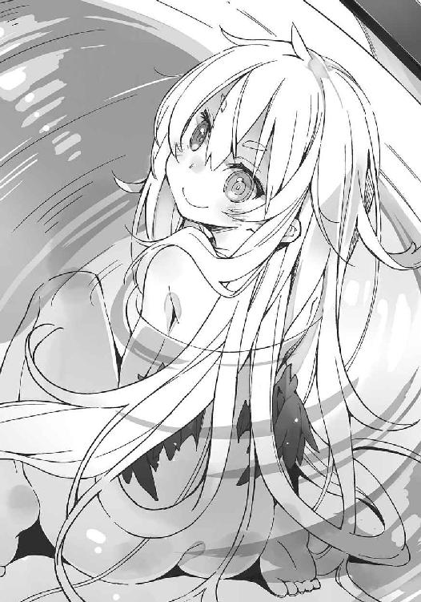
「う」
墓穴を掘った。熱いお風呂で気が緩んでしまっていたようだ。
ソーマは湯船の縁に頰杖を突いてそっぽを向く。
「よかったの」突然、メルヴィーユがそう言った。
「ああ」
ソーマはしみじみと頷いた。
ソーマはこれまで、故郷での出来事、トーマとレンリのこと──自分の旅の目的をメルヴィーユ以外の相手に話したことはなかった。
危険だったからだ。
話を信じてもらえないのは別に構わない。
まずいのは、相手がソーマの話を信じたその後だ。
信じてもらうことと、受け入れてもらうことは全く別の話だ。
話を信じたからといって、味方になってくれるとは限らない。
悪魔を召喚して街を壊滅させた人間の弟──それを単純な被害者だと思う人はまずいない。むしろ共犯者として訴えられる可能性が極めて高いだろう。大量殺人犯の身内はやはり犯罪者と見なされる──偏見と言えば偏見だが、事実として世間はそう反応する。してしまう。
そうしたリスクを考えて、ソーマはこれまでの旅の間、真実を伏せて「生き別れの兄を捜している」という理由で通してきた。
だがこのやり方では成果は全く挙がらなかった。
ソーマは焦りを感じていた。このままではトーマに追いつけない。逃げ切られてしまう。
自分一人では限界がある──そう感じたソーマは、多大なリスクがあることを承知で、アーチボルド博士に全てを打ち明けることにした。
結果、博士はソーマの話を信じ、協力すると言ってくれた。
「思い切って打ち明けてよかったよ。やっぱり、誰かに信じてもらいたければ、まず自分が相手を信じて、心を開かないとダメだよな。信用できないかも知れないから話さない、なんてやってたら誰にも信用してもらえなくなる」
「ではそろそろ儂の愛も信じてはくれぬかのう」
「それは無理」
「......」
ソーマが言下に否定すると、メルヴィーユは無言でソーマのふくらはぎをつねった。
「痛っ。何するんだよ」
抗議するソーマを無視してメルヴィーユはお湯をかき回し、
「ちとぬるいな......。降魔展開──〝竈守〟」
メルヴィーユが小声で唱えると、風呂の温度がすうっと上がり、にわかに湯気が立ち始めた。
「あ、こら。勝手に」
「なんじゃ。ソーマも『風呂は熱いのに限る』と言っておったではないか」
「まあそうだけど......」
悪魔はその種族に応じた不思議な力を持つ。先日戦った霜の巨人は触れたものを凍らせる力を持ち、似た種族である煤の巨人は触れたものを炎上させる力を持つ。こうした力はそれぞれの悪魔が生まれつき持っていて、後天的に身につけることはない──はずなのだが、ここに一つの例外がある。
メルヴィーユである。
メルヴィーユが持つ〝降魔展開〟は、他の悪魔の能力を再現する能力である。「厳密にはそっくり同じというわけではない。これらは悪魔であって悪魔に非ず。これを〝降魔〟と称す。要するに他の連中の真似っこじゃ」──メルヴィーユ自身はそんな風に笑って言うが、〝降魔〟の力は本物の悪魔と比べても何の遜色もない。ソーマはしばらく、メルヴィーユには配下の悪魔がたくさんいて、それを状況に応じて喚び出しているのだと勘違いしていたほどだ。
そうではなく、〝降魔〟はその場で──その場限りの存在としてその都度──作り出されている仮想的な存在なのだそうだ。仮想的な存在である〝降魔〟は、そのままでは力を発揮できない。〝降魔〟は契約者たるソーマの中に〝展開〟されることで初めて、現実に力を発揮できるようになる。
つまりソーマの要求に応じてメルヴィーユが〝降魔〟を作り出し、ソーマに憑依させることで、悪魔と同等の力を使えるようになる仕組みだ。
〝降魔展開〟は、ソーマ一人でもメルヴィーユ一人でも行使できない。二人が揃っていなくてはいけないのだ。
そしてこの〝降魔展開〟は、仮想的とはいえ悪魔を乗り移らせるわけで、ソーマの肉体と精神に多大な負担を強いる。疲労や内臓の損傷に始まり、使い過ぎれば肉体の破裂や精神の崩壊を引き起こす可能性もある。そんなハイリスクな能力を、湯を沸かす程度のことで使って欲しくはない。
「ちゃんと限界は把握しておるわ。この程度ではたいした負担にはならん」
「それでも一応断りくらい入れろよ」
「もしソーマが倒れたら儂がきっちり介抱するから安心せい。あんなところからそんなところまで、それはもう念入りに心を込めて世話してやろうぞ」
「......それが嫌なんだよ」
ソーマは指先でメルヴィーユの頭を小突いた。
ほどよくお湯が温まったところで、メルヴィーユは〝竈守〟を解除した。ソーマは腹の辺りに感じていた圧迫感から解放されて、ふう、と息をつく。
「ともあれ、これで旅は一歩前進じゃな」
「ああ」
ソーマが力強く頷いたその前で、メルヴィーユは力なくお湯をかき回して呟いた。
「......儂の素性の方はからっきしじゃが」
「......」
ソーマと契約するに当たって、メルヴィーユが要求したものは二つあった。
一つはソーマの魂。
もう一つは「メルヴィーユの正体を突き止める」こと。
メルヴィーユは記憶喪失なのだ。ソーマに喚ばれてあの魔法陣から出現する以前のことは、自分の名前も含めて何も覚えていなかった。
「悪い。俺、自分のことばっかりで......」
ソーマとしてもメルヴィーユの正体は気になるところである。相手が何者か分からないままの契約というのも少々落ち着かないし、もちろんメルヴィーユの気持ち的にも、自分がどこの誰だか分からない、というのは悪魔であっても悲しいことだろうから。
とはいえどうやって調べたらいいのか見当もつかないのも事実だった。まさか行く先々で姿を現して『誰かこの悪魔を知りませんか？』と訊いて回るわけにはいかないし。
「よい。今の儂にはソーマがいる。仲間など見つからなくてもソーマがいれば十分じゃ」
それはいつものセクハラをするときとは違って、ただのけなげな女の子のようで、ソーマは思わず唾を飲み込んでしまう。
不意にメルヴィーユが振り返って上目遣いで、
「ソーマ......」
「な、なんだよ」
相手は悪魔だと分かっていても、こういう真似をされればやはり反応してしまうのが男の性である。反応していることに気付かれたらそれでしばらくからかわれる。それが分かっていたので、ソーマはタオルで股間を隠しつつ、視線をメルヴィーユからそらした。
メルヴィーユはソーマの傷だらけの胸板に体重を預けて、
「......襲ってくれぬのか？ こう、後ろから雄々しく荒々しく」
「お前の首を絞めて水中に沈めればいいんだな？」
ソーマがそう言うと、メルヴィーユは涙目になって、
「さっきまでいい雰囲気だったのに何故その反応!? ......どうしてソーマは儂の想いを受け止めてくれないんじゃ」
「分かってるんだよ。お前がしおらしくするのはだいたい何かの前振りだって。てか悪魔の想いなんか受け止めたら人生お終いじゃないか」
「良いではないか。人生など投げ捨ててしまえば。儂に任せておけ。天国よりも良いところへ連れて行ってやろうぞ......」
メルヴィーユは唇を舐め、ソーマに顔を近づけた。
「それ以上やったら容赦しないぞ」
「ほう？ それは楽しみじゃむぐっ」
ソーマはメルヴィーユの顔面をがっしと摑んで押し返し、そのままお湯の中に沈めた。メルヴィーユが水中で激しくもがくが、ソーマは力を緩めない。メルヴィーユはいつでも幽体に戻って姿を消すことができる。溺れるはずがないのだ。が、
「うわひゃぅ！」
突然、内股にぬるりとした感触が走って、ソーマは驚きに足を滑らせ水中に没した。メルヴィーユがソーマの腿をべろりと舐めたのである。
ソーマは慌てて湯船の縁を摑んで体を引き上げる。と、メルヴィーユが湯船に脚を組んで座っていた。濡れ髪が細い肢体にまとわりついて妙に艶めかしい。
「ひゃっひゃっひゃ。ザマぁないのう」
「............」
「お？ なんじゃその顔は？ 違うところを舐めて欲しかったのか？ リクエストがあるなら応じるぞ。竿か？ それとも玉か？ 遠慮せずに言うてみい」
ネズミ殺しをたっぷり塗りつけた足の裏でも舐めてもらおうか──思ったが、メルヴィーユに死なれても困るのでやめておく。まあ悪魔がそんなことで死ぬとも思えないが。
「しっかし、何故ソーマはこうも堅物なんじゃ？ よもや女に興味がないのではあるまいな。儂の知らぬうちにどこぞの御仁に処女を奪われては、」
「いねえよ！ 前も後ろも純潔だよ！」
ソーマも健全な青少年であるから興味がないわけではない。機会も少なからずあった。例えば隊商の護衛の仕事をした後、一緒に働いた傭兵たちから色街に繰り出そうと誘われたり、悪魔に襲われていた女性を助けた後に言い寄られたり。
しかしソーマはそれらの誘惑をことごとく断ってきた。ソーマには兄を見つけ、殺すという目的がある。それを果たすまでは女遊びなどしている暇はない。それに、
脳裏に浮かぶのは藤色のドレス。白くて丸い肩。
「......なあ」
「なんじゃ？」
「............なんでもない」
ソーマは無意味にメルヴィーユを小突いた。
「なんでもないことはあるまい。なんじゃ？ 言うてみい」
「だからなんでもないって」
死んだ相手のことをいつまでも想ってるのって女々しいかな？ ──そんな問いを口にしたら、メルヴィーユは嬉々としてソーマに襲いかかるだろう。「古い女を忘れさせるのは新しい女と決まっておる！」とか言いながら。
「ええい、言え！ 言わなければ食らってやるぞ。もちろん性的にじゃ！」
湯船の底に膝をついてソーマと向き合うと、メルヴィーユはソーマの脇に手を伸ばしてくすぐり始めた。
「くひっ、馬、ひっ鹿！ どこ触って、ひひっ、るんだやめひろっ！」
「やめて欲しければ吐け！ 洗いざらい吐くのじゃ！」メルヴィーユはますます怪しい手つきでソーマの体をまさぐり、その手が下半身に伸びようとしたときだった。
「ソーマ様？」
「「っ！」」
脱衣場からの声に、一人と一悪魔は石化したみたいに固まった。
「ジ、ジゼル？ なに？」
ソーマは万一ジゼルが風呂場のドアを開けても見つからないよう、メルヴィーユの頭を抱え込んでドアに背を向けた。
「なにやらお声が聞こえましたので......何かあったのかと」
「いや、何もない。大丈夫だから入ってこなくていい！ いいったらいい」
「でも何か悲鳴のようなものが」
「これは............歌！ そう、歌だよ。あんまり気持ちよかったからつい」
「まあそうでしたか。私もよく、掃除中に大声で歌って旦那様に叱られるんですよ」
とジゼルはちょっとずれた返事を寄越す。
「少しぬるくなかったですか？ この街、お水は使い放題ですけど燃料の方はちょっとお高くて......」
「ああ、うん。ありがとう、大丈夫。いい湯加減だよ」
ソーマがそう言うと、ジゼルは「洗濯物を預かっていきます」と言い残して脱衣場から出て行った。
「どうにか見つからずに済んだようじゃな」
ソーマの腕の中でメルヴィーユが、ちょっとつまらなそうに呟いた。
「......あのさ、お前が姿を消せばそれで一発解決だったんじゃないか？」
「今頃気付いたか」とメルヴィーユが笑う。
「分かってたんならやれよ」
「ソーマに抱きしめられて動転してしまったので、姿を消せなかったんじゃ」
「噓つけ」
ソーマはメルヴィーユから体を離し、額にデコピンを叩き込もうとしたが、少女悪魔はその前に笑いながら姿を消してしまう。
目標を失ったソーマの指先から、小さなシャボン玉が幾つも飛んだ。
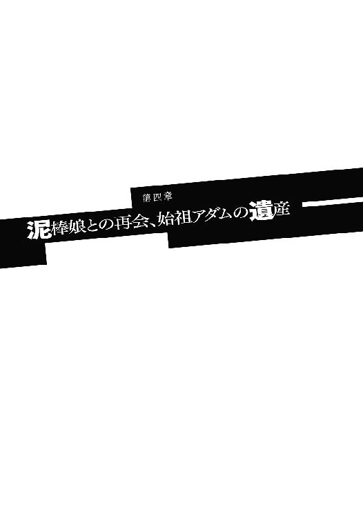
翌朝。東の空が明るくなり、農夫たちが一日の仕事を始めるために街の外にある農地へと連れだって歩き始めた頃。
アーチボルド家の一角にある客室で、ソーマは清潔なシーツにくるまれて眠っていた。歳相応の、まだ少年らしさを残した寝顔である。風呂上がりにすぐ寝てしまったので髪に豪快な寝癖が付いているが、本人がそれに気付くのはまだ先のこと。半開きの口からはくぅくぅと、女の子のようなかわいらしい寝息が漏れる。
客室のドアが静かに開き、ジゼルが顔を覗かせた。
ソーマはジゼルに気付かず眠っている。長旅の疲れが溜まっていたのだろう。
「......」
ジゼルは部屋の入り口で息を止め、しばし様子を窺い、ソーマが目を覚まさないと確信すると、そうっと客室に入り込んだ。
ジゼルはまず壁に掛けられた外套を見た。それから床に置かれた背囊を。
しばし思案してから、ジゼルは暗殺者のように足音を殺してベッドに近づいていった。
「............」
ジゼルはソーマの枕元に立つと、その顔を覗き込み、いぶかしげに眉根を寄せた。それから口中で何事か呟き、手を伸ばしてシーツの端を摘もうとする。
そのときだった。
「そこで何をしておるのじゃ？」
「っ！ うわひゃあ！」
背後から不意打ちで声をかけられて驚き、飛び上がり、振り返ろうとしたのだろう。ジゼルは万歳してタコ踊りしながら、ずるべたーん、と床に倒れる。
「はうう......」
「はうう、ではないわ！ 儂の断りもなくソーマに夜這いをかけるとはいい度胸じゃな、小娘？」
「え？ 夜這い？ え？」
起き上がって目を白黒させるジゼル。突然部屋の中に見知らぬ少女が現れたのだからそりゃあ驚く。「お前誰だ？」という当たり前の質問が出てこない。
「わあ、かわいい。お人形みたい」
「ふむ。当然じゃ」とメルヴィーユは満足そうに頷き、「ではなくて！ しらばっくれるでないわ！ 貴様がベッドに上ってソーマにまたがろうとしていたのはお見通しよ！」
「違います！ というかあなたどこから入ってきたんですか！ はっ！ 泥棒ですね！」
「泥棒猫がこの儂を泥棒呼ばわりするか！」
「ジゼル？ 朝から騒がし......うん？」
言い合う声を聞きつけたのだろう、まだ寝間着姿のアーチボルド博士が顔を覗かせた。
「おやまあずいぶんかわいらしいお嬢さんだが......ジゼルの友達かね？」
「違いますよ旦那様！ 泥棒です！ 不法侵入です！」
「泥棒ではないわ！ たわけ」
「............うるさいなあ」
と、ようやく目を覚ましたソーマは心地よい眠りから一転、人前に堂々と姿を現しているメルヴィーユを見て顔面を蒼白にした。
「メル！」
「......ソーマくんの知り合い？」
問われてソーマは視線を泳がせた。状況が全くつかめない。はっきりしているのはメルヴィーユが勝手に出てきて何かやらかしたこと。言い逃れはできそうにないこと。
「ええっと、まあ、そんなような感じというか、なんというか......」
言葉を濁して時間を稼ぎ、言い訳を考え始めるソーマ。だが寝起きに強烈なショックを食らった頭はまともに働いてくれない。
ソーマが「あー、えー、そのー」と汚職と女性問題が一気に発覚した政治家のようにしどろもどろになっていると、メルヴィーユがベッドにダイブしてソーマの首っ玉にしがみついた。
「知り合いなどではないわ！」
否定、そして宣言。
「儂とソーマは命果てるまで共にあると誓った仲じゃ！」
「まあ、本当ですか」
とジゼルが口元に手をやって驚き、
（まあ、噓は言っていないが......）
とソーマは寝癖頭で思ったのだった。
「......ほうほうなるほど。するとつまり、ソーマくんはメルヴィーユ嬢の命の恩人、ということになるのかね？」
「左様。そのとき儂は感じたのじゃ。ソーマこそ我が運命の人。儂はソーマと出会い、生涯を共にし、ソーマの子を産むためにこの世に生まれたのじゃと！」
アーチボルド博士の問いにメルヴィーユが無意味に得意げに答えた。
場所は既に客室ではなくキッチン。食卓を囲むのは家主であるヴィクター・アーチボルド博士とソーマ、そしてメルヴィーユ。メイドのジゼルがかいがいしく立ち回り、ソーマのカップにコーヒーのおかわりなど注いでくれる。
ずずずっ、とお行儀悪くコーヒーをすするソーマを見て、ジゼルが、
「あら、苦すぎたですか？」
「ああ、いえ。大丈夫。とてもおいしい」
ソーマの顔が苦々しく歪んでいるのはもちろんコーヒーのせいではなく、朝っぱらから一悶着起こしてくれた少女悪魔のせいである。
「ところがソーマの奴、儂の求婚に答えもせず、『俺にはしなければならないことがある。それが済むまで待っていてくれ』と言い残して去ってしもうた。最初はおとなしく待とうかとも思ったのじゃが......旅の空のソーマが心配で心配で、こうして追いかけてきたという次第じゃ」
「純愛ですねえ」とジゼルがメルヴィーユを見ながらうっとり呟く。
「罪作りだねえ」と博士がソーマを見ながらはやし立てる。
──三ヶ月ほど前、兄の手掛かりを求めて放浪していたソーマは北の辺境にある街へと立ち寄った。そこで領主の一人娘であるメルヴィーユが悪魔に襲われているところを助け、二人はたちまち恋に落ちた──というのが、メルヴィーユがバターと蜂蜜をたっぷり載せたトーストを齧りながら語った二人の関係である。
言うまでもなく噓っぱちである。
「ソーマがアーチボルド博士を訪ねるつもりだということは聞いておった。勝手に家に入ったのは済まなんだ。窓越しに久方ぶりに愛しのソーマを見つけた瞬間、理性が飛んでしまったようじゃ」
お前に理性なんてものがあったのか下ネタ悪魔──思ったが口には出せず、ソーマはますます苦々しい顔つきになる。
「あら、トーストが焦げてたですか？」
「ああ、いえ。大丈夫。とてもおいしい」
平常心だ平常心。忌々しいが話を合わせなくては。
「それでソーマ。人捜しの方はどんな塩梅じゃ？ 兄上の行方は」
昨日のやりとりはメルヴィーユも見ていて知っているのだが、メルヴィーユは「今日この街に着いたばかり」の演技をしてそう訊ねる。
「博士に協力してもらえることになった」とソーマは答えて、「ここまで追いかけてきてくれたのは嬉しいけど、家の人も心配しているだろうし、博士に迷惑かかるからすぐに帰りなよ」
メルヴィーユの噓に乗りつつ、メルヴィーユが自然に退場する方向へとソーマは話を誘導しようとするが、
「それなら心配ない。父上も了承済みじゃ。むしろ『絶対に婿を連れ帰ってこい』との仰せじゃった」
メルヴィーユが一枚上手に返し、
「せっかく来たのにすぐ帰すのはかわいそうですよ。ねえ、旦那様、メルヴィーユ様も置いてあげましょうよ」
「うん。いいね。そうしようか」
アーチボルド家の二人もメルヴィーユの味方のようなことを言い出してしまう。
「無理に気を遣ってくれることはない。迷惑なら迷惑とはっきり言ってくれ」
ソーマは必死で抵抗するが、
「迷惑なんてことはないさ。部屋なら余ってる」
「何言ってるんですか旦那様。ラブラブな二人は一緒の部屋じゃないとダメですよ」
「む？ そうかそうか。これは迂闊だった」
博士とジゼルは勝手に盛り上がっている。
「いや、あの......」
なおもソーマは反対しようとする。そこに、
「......何故そうも追い返そうとするのじゃ......ソーマは、ソーマは儂のことがもう嫌いになったのか？ それとも他に女ができたのか？ そうなんじゃな。もう儂のことを愛してないんじゃな......」
うつむいたメルヴィーユがすすり泣きながら訴えた。当然のように噓泣きである。
博士とジゼルがソーマに白い目を向けていた。
こうなってしまってはどうしようもない。ソーマはため息をつき、心の中で白旗を揚げたのだった。
朝食を終えるとすぐ、ソーマはアーチボルド博士に書斎に呼ばれ、より詳細な説明を求められた。
トーマの行方を突き止めるために、トーマが何をしようとしているのかを知る必要がある。
「魔法陣は基本的には『書けば』それで発動する。だが中には他の条件を必要とするものもある。特に大がかりな魔法陣にその傾向が強い。悪魔を召喚する──最初は天使を喚び出すつもりだったそうだが──などというからにはその魔法陣にはかなり細かな条件、制限と言い換えてもいい、それがあるはずだ。最低でも日時......月齢や季節の指定、それに場所もどこでもいいわけではなかろう」
「それが分かればトーマが次に現れる場所に先回りできますね」
言ってから、ソーマはふと疑問に思ったことを訊ねた。
「アラドに戻ってくる可能性は？」
「何とも言えないな。とにかく手掛かりが欲しい。今のままでは情報が不足しすぎで何も判断できない。あの日何があったのか。それ以前にスオウ博士はどんなことを話していたか。家に出入りしていた人たちは。あるいは何か変わったものを買い付けたりしなかったか......。どんな些細なことでもいい。どんなことでも何かしらの手掛かりになる」
そう言われても話せることはあまり多くなかった。
あの日──アラド崩壊の日の一ヶ月以上前から、ソーマは家を出て自警団の寮で暮らしていた。トーマが何か変わったことをしていたとしても気付ける状態になかったのだ。
「それから魔法陣そのもの。言うまでもなくこれが一番の手掛かりだ。......昨日君に書いてもらったこの図は不完全だ。魔法陣なら呪文が書き込んであるはずだが」
「ありました。でも俺には読めない文字で、複雑すぎてとても......」
「可能な限りでいいから思い出してくれ。それから、君が見たという〝無貌の悪魔〟についても訊きたい。貌がないというのは具体的には？ 真っ平らなのか？ 翼は黒だと言ったな？ 肌の色は？ 他に何か特徴は？」
質問質問また質問。津波のように押し寄せる大量の質問にソーマは吞み込まれ、ほとんど自動的に返事をするだけのマシーンと化した。「君の貸し金庫の暗証番号は？」なんて質問が混じっていたらうっかり答えていたかも分からない。
怒濤の質問攻めは日が暮れるまで続き、ジゼルが夕食の用意ができたと呼びに来たときには、ソーマはすっかり疲れ果ててしまっていた。
夕食が済むと博士はすぐに書斎に籠もった。
訊くべきことは全て訊き出したので、後は資料を当たるのみ──なのだろうと思ったソーマの見込みは甘かった。
翌朝、まだ夜も明けきらないうちから博士はソーマを叩き起こすと、
「幾つか疑問点が出てきたのだが」
と言い、とても「幾つか」では収まらない大量の疑問質問を浴びせてソーマをげんなりさせた。
とはいえアーチボルド博士との質疑応答は、ソーマにとっても大いに得るものがあった。
例えば〝終末の厄災〟について。
「始祖アダムの九人の子供たちが、アダムの死後に遺産相続で争い、結果、遺産に紛れ込んでいた〝黒い小箱〟の封印を末っ子が解いてしまったことで悪魔がこの世に現れた、と世間では言われているがこれは間違いだ」
「そうなんですか？ というか、その辺ってただの神話だし、正しいも間違ってるもないんじゃ......」
「それがそうでもない。神話というのは何も遠い昔の物語作家が勝手に書いたものではない。何かしら元になる出来事があって、それが世代を超えて伝わっていくうちに変質していったものなのだよ。昔話の〝アダムの九人のこどもたち〟は身内の争いを諫める説教話だが、実際に始祖アダムの家系で跡目争いがあって、それがあの話の元になっているんだ。物語の中で、封印の小箱を開けたのは末っ子のアダム。これは実在がほぼ間違いない人物だ」
「アダムの子供もアダムなんですね」
「うん。だけどこのアダムは始祖アダムの子ではない」
「はい？」
「始祖アダムの家系には〝アダム〟という名前の男子が少なくとも七人、確認されている。楽園から箱船に乗ってファラディースにやってきた〝始祖アダム〟。その長子である〝アダムの子アダム〟。古文書によれば、そこから何代か下ったところに〝四人目のアダム〟という記述がある。〝三人目のアダム〟がどこの誰なのかは分かっていない。四人目から三代下ったところに始祖アダムと同じく九人の子供をもうけた、通称〝子だくさんのアダム〟がいて、その末子が封印の小箱を開けた、〝小箱のアダム〟」
「......頭が痛くなってきた」
「つまりアダムという名前が二代続いたケースが二回あったのを、過去の考古学者が混同してしまったのだよ。始祖アダムの息子であるアダムは父親の後を継いでファラディースの基礎を築いた人物だ。それから何百年かして、ぜんぜん別の〝子だくさんのアダム〟の子供である〝小箱のアダム〟が悪魔を世に解き放った......のではないか、というのが最新の研究の成果なんだが、古い研究を元にして書かれている〝アダムの九人のこどもたち〟が人口に膾炙してしまったので......」
「カイシャ？」
「ああ、つまり、人々に知れ渡ってしまった。......一旦広まってしまったものは、それが間違っていると分かってもなかなか訂正ができない。おかげで始祖アダムの子であるアダムは、優れた指導者であったにもかかわらず、悪魔の手先扱いで非常に人気がない、というのは話が横道にそれ過ぎたかな」
この話を聞いて、ソーマは一つの疑問を抱いた。
悪魔はどこから現れたのか。
まさか本当に小箱の中に詰まっていたわけではあるまい。物語に登場する〝黒い小箱〟は何かの比喩と考えるのが妥当だろう。
「悪魔という存在が何故生まれたのかは目下のところ謎だ。完全に、何の手掛かりもない。もしその秘密を解き明かす者が現れたなら、その人物の名前は人類が滅びるまで未来永劫語られ続けるだろうね」
ソーマは頷いた。
謎の多い悪魔の生態について、一つはっきりと分かっていることがある。
悪魔は生殖をしない。自然発生によってこの世に生まれる。
ただ、その発生の条件については、やはり分かっていない。『満月の夜に月の光を浴びた悪霊が悪魔になる』だとか、『歳を経た動物が妖気によって悪魔に転ずる』だとか、俗説だけはたくさんあるが。
「悪魔を召喚した、というような話は結構聞きますけど」
「お芝居で？ 小説で？」
「いえ。現実で」
ソーマはふと意識を書斎の外に向けた。メルヴィーユはソーマに「喚ばれた」とはっきり言っている。だが、喚ばれる前の自分がどこにいたのか、肝心な部分を覚えていない。
「私もよく聞くよ。仕事柄、君の百倍は聞いていると思う。実際に喚び出したという人に会ったことも何度もある。全員がただのペテン師だったがね。俺は悪魔を使役できる、呪われたくなかったら金を払え、とか」
「じゃあどうして俺の話は信じたんです？ 俺だってその一人かも知れませんよ？」
ソーマの何気ない質問に、アーチボルド博士はこう答えた。
「目と......手だね」
「手？」
鸚鵡返しにしてソーマは自分の掌を見下ろす。
博士がそっと手を伸ばし、ソーマの掌を撫でた。
「己の無力さを呪い、掌に爪を食い込ませて眠れない夜を幾度も過ごした。そういう手をしている子を、信じてやるのは大人の義務だ。繫ぐ相手のいない手を、開いて握ってやるのが大人の義務だと私は思う」
「......博士」
「一人でよくがんばったね」
博士がふっと目を細めた。
この人に相談して良かった、とソーマはつくづく思った。
他にも魔法陣のことなどを話した。
「魔法陣と印は同じものだ。その場から動かせないものが魔法陣、持ち歩けるものが印、という使い分けになっているが、マントの刺繡が魔法陣の扱いだったり、台所に刻んであるのが印と呼ばれていたりと、両者の使い分けは曖昧で適当だ。大きさと使い方で慣習的に決まっているのだね。そしてこの魔法陣、よく考えると非常におかしなものである」
「というと？」
「適当な紙に呪文と紋様を書いて丸で囲う。それだけで何らかの作用が起こせる。例えば悪魔払いの陣なら実際に悪魔を追い払うことができる......ま、弱い奴に限るが。何故そんなことが起こる？」
「何故って......そういうものだから？」
「それは答えではない。ただの思考停止だ。......肌に虫除けを塗ると虫が寄ってこなくなるのは、虫除けの中に虫が嫌う成分が含まれているからだ。ええっと確か、何かの花から抽出するんじゃなかったかな？ それが徐々に揮発して周囲にまき散らされることで、虫が嫌がって逃げていくわけだ。では魔除けの魔法陣は？ 材料は紙とインク。いや、それすら必要なくて、棒切れで地面に書いただけでも作用する」
ソーマは頷いた。やむなく野宿をするときなど、旅人たちは地面に魔除けの魔法陣を幾つも書き、その内側に火を焚いて眠る。この魔法陣をメルヴィーユが嫌がるものだから、仕事で傭兵連中と行動を共にするときにはソーマは少々余計な苦労をすることがある。
「繰り返すが魔法陣はただの図形と呪文の組み合わせだ。しかも基本的には誰が書いても同じ効果がある。こんなおかしなものが何故存在するのだ？」
ソーマに答えられるはずもなかった。博士の方も答えを期待してはいなかった。悪魔学者とはどんな仕事なのか、何を研究しているのか、これはその説明である。
そんな風にして質問漬けの二日目が終わった。
そして三日目も、ソーマは朝食が終わるとすぐに、博士と一緒に書斎に籠もった。ソーマの横顔には昨日はなかった笑顔があった。博士のペースに慣れてきて余裕ができたこともあるが、単純に新しい知見を得ることが楽しくなってきたのだ。ソーマ自身は「兄には敵わないだろうから」と学問の道を捨ててしまっていたが、やはり同じ血が流れているのだろう。
一方、この展開が楽しくない人物──人ではないが──もいた。メルヴィーユである。
握り拳を腰に当て、小さな悪魔は男二人が籠もる書斎のドアを貫通せよとばかりににらみ付けている。
「......儂のことは完全放置であるか。ソーマの奴はぴちぴちの美少女よりもインテリ筋肉ジジイの方が良いのか......」
嘆いても扉の向こうには聞こえない。
ソーマはずっと、トーマの行方を求めて旅を続けていた。これまで手掛かりらしい手掛かりはなく、何度も心が折れそうになったのが、この街に来てついに進展を見せた──かはまだ分からないが、初めて外部の協力者、それも大陸でも有数の悪魔学者という味方を得たのだ。入れ込むソーマの気持ちはよく分かる。
けれどやっぱり面白くない。
「今日までソーマの隣にいたのは儂じゃぞ......その儂をなんで除け者に......」
この不満は昨夜ソーマに直接ぶつけた。せめて聞き取り調査に同席させてくれ、と。ソーマは「お前はきわどい発言が多すぎるから」と拒否した。
ソーマとしては当然の警戒ではある。悪魔であるメルヴィーユと悪魔学者であるアーチボルド博士が長時間接触すれば、正体を見抜かれる危険がそれだけ高まる。これ以上のリスク上昇は避けたい。だからお前はおとなしくしていろ、というソーマの理屈は理解できる。どんな形であれ、悪魔を街に引き入れた者は火あぶりにされる──これは大陸全土で共通の掟だ。
「理解できても面白くないものは面白くないのじゃ！」
腹いせにこの家ぶっ壊してやろうかしらん。なんて、半ば本気で思ってみたり。
「......」
そう、面白くないことがもう一つあった。この家だ。
メルヴィーユはこの家が何となく気に入らなかった。居心地が悪いわけではない。古い二階建ての屋敷は隅々まで手入れされてとても快適に保たれている。にもかかわらずなんだか落ち着かない。非常な違和感がある。
「なんじゃろうな。この感じは......」
悪魔学者とは悪魔について研究し、解明し、人が悪魔を倒す手段を模索する人々である。その悪魔学者の懐に入り込んだ形なのだから、心中穏やかでないのは当然のことと言えるが、メルヴィーユが今感じている感覚はそういう、敵地の緊張感ともまた違う。
そもそもメルヴィーユは──メルヴィーユに限らず悪魔はみんなそうだが──仲間意識が希薄である。同じ種族であれば力を合わせて人間を襲うこともあるが、他の種族がどうなろうと知ったことではない。むしろ自分たち以外の悪魔は消えてくれた方が、食料となる人間の魂を独占できるので好都合だと考えている。虎と獅子のようなものだ。同じ餌を取り合う関係なのだから、仲良くできるはずがない。
もっともメルヴィーユは悪魔としてはかなりイレギュラーな存在なので、この辺りの感覚も他の悪魔たちとはだいぶ異なっているが。
それはさておき違和感である。
曰く言い難い感覚に突き動かされるようにメルヴィーユは動き出した。浮遊したくなるのをぐっとこらえて二本の足で廊下を歩く。ソーマたちが籠もっている書斎の前から、奥の階段を使って二階へ移動。一階に比べてやや天井の低い廊下。年月を感じさせる飴色のドアが並んでいる。ドアには鍵がかかっていた。
「......」
メルヴィーユは少し思案し、その身をすうっと半透明に──実体から幽体に変化させてドアをすり抜ける。
ごく普通の部屋だった。暖炉があって、クローゼットがあって、サイドボードに酒瓶が並んでいて、奥にもう一部屋あるのは寝室だろう。
隣の部屋も似たようなもので、ただしこちらはもっと質素だった。博士の私室とメイドの私室なのだろう。とてもきちんと整えられていて、面白みも何もない部屋だった。
ジゼルの部屋を出て、今度は廊下の反対側へ。こちら側の部屋には鍵がかかっていなかった。窓からさんさんと光が差し込む、ただの空き部屋が二つ。部屋の造りそのものは向かいと一緒だ。この家の二階部分は左右対称に造られているらしい。
「はて......」
やはり違和感を覚えた。メイドを主人と同じ階で寝起きさせるのは珍しいと言えば珍しいが、ないわけではない。近くに置いておけばその分、用事を言いつけるのも楽になる。そういうことではない違和感。この家全体に感じるのと同じ。なんだか分からなくてもやもやする。
「むう......」
唸りながら部屋を出て階段を下りる。玄関側に戻るつもりだったが、考え事をしていたので道を間違えた。台所の方へ進み、
「むむ？」
メルヴィーユはそれに気付いた。
──血の臭い。
かわいらしい鼻をひくひくと動かし、首を傾げる。臭いはとてもかすかだ。疑心暗鬼が生み出した幻覚だと言われればそんな気もする。
ふと見れば台所の脇に地下へと続く狭い階段があった。ワインセラーか食料庫か。このぐらいの規模のお屋敷なら地下室はあって当然、何も不思議なことはないはずが、今はそれがひどく気になった。根拠はない。ただの勘であるが。
「しかし女の勘ほど侮れないものはない。ことに儂のような美女の勘は」
そのちんまり体型で何が美女だ、とソーマがいたなら突っ込んでいただろう。しかしソーマはいまだ博士と楽しく歓談中であり、メルヴィーユを止めることはできなかったから、少女悪魔は狭くて暗い地下への階段に足を乗せた。ギギギイ......と板が軋み、
「メルヴィーユ様？ そんなところで何を？」
いつの間にか背後に銀髪メイドが立っていた。
「ちと探険をな」
メルヴィーユは悪びれずに答えた。こういうときは動揺したら負けだ。ふんぞり返って堂々としていれば、意外に疑われないものである。
「小さい子じゃないんですから」
ジゼルはくすっと笑ってそう言った。メルヴィーユの思惑通り、不審に思った様子はない。
「そうは言っても退屈で死にそうなのじゃ。博士の話はいつ終わるんじゃろうか」
「どうでしょうねえ」
「そうじゃ、ソーマが出てくるまでの退屈しのぎに、お主、儂の相手をせい」
メルヴィーユがそう言うとジゼルは困った顔で、
「ごめんなさい。私にも仕事がありますので」
「客をもてなすのもメイドの仕事じゃろうが」
とメルヴィーユはジゼルに詰め寄る。と、
「コラ、人様に迷惑かけるんじゃない」
廊下から声がして、ソーマが姿を現した。
「ソーマ！」
メルヴィーユは嬉しそうな声を上げてソーマの腕の中に飛び込んだ。
「おおっと！ いきなり飛んでくるなよびっくりするだろ」
ソーマは受け止めたメルヴィーユを廊下に下ろす。
「聞き取り調査は終わったのですか？」
「ひとまずは。......またすぐ呼ばれそうな気がしないでもないけど」
ジゼルの問いにソーマはそう答えた。
メルヴィーユはソーマに抱きつき胸の辺りに頰ずりしながら、
「死にそうじゃ～退屈で死にそうじゃ～なんとかするのじゃ～明るいうちから部屋に籠もってちちくりあうのじゃ～」
「却下」言下に断り、「暇ならちょうどいい。出かけるぞ」
「お出かけでございますか」とジゼルが訊ねた。
「ああ」
答えて、ソーマはポケットからレンリの形見のペンダントを出した。鎖が完全に切れてしまっている。
「修理に出したいんだが、近くに宝飾店は？」
「それなら東三番にいいお店が......なんでしたら私が代わりに行って参りましょうか？」
「自分で持って行くから場所だけ教えてくれ」言ってから、ソーマはジゼルの表情に気付いて付け足した。「いや、君を信用してないわけじゃないんだが、これは形見だから、人には預けたくないんだ」
「ああ......。はい、分かります。私は家族の形見は持っていませんが、持っていたらソーマ様と同じように、寝るときもお風呂に入るときも片時も離さないと思います」
「博士にちらっと聞いたんだけど、ジゼルも家族を悪魔に殺されたんだって？」
「同情はしないで下さい。別に珍しいことではありませんから」
ジゼルの言葉にソーマは頷く。
悪魔に殺されるのは珍しいことではないのだ。本当に。嫌になるくらいありふれている。
「そういえば旦那様もそうだと伺いました。若い頃に奥様を殺されて、それで悪魔学者に」
ほんのちょっと運が悪ければ人は死ぬ。極めてあっさりと。この世界はそういう風にできている。それを理不尽だと思わず、当たり前のこととして受け入れていることこそが、この世界の不幸なのかも知れない、とソーマは思った。
「気のせいだろ」
あの家は何かがおかしい──メルヴィーユの訴えを、ソーマは真面目に取り合わなかった。メルヴィーユがおかしなことを言い出すのはいつものことである。この悪魔の口から出てくる言葉で、真面目に聞く価値のあるものなど一つもない、というのはさすがに言い過ぎかも知れないが。
「血の臭いがしたんじゃよ。なんというか、饐えた感じの、牢獄の石畳の隙間にこびりついているような血の臭いじゃ」
その具体的な描写が逆に怪しい。「気のせいかと思うようなかすかな臭い」じゃなかったのか。
ソーマは胡乱な目をして少女悪魔を見下ろした。
別にメルヴィーユを信じていないわけではない。戦闘中にメルヴィーユが何か言ったらソーマは無条件で従う。その程度の信頼は寄せている。ただし普段のメルヴィーユはソーマをおちょくるか誘惑するかわがままを言って困らせるかのどれかであり、それで信じろ、と言われても無理があるというものだ。
分かった一緒にあの家を調べてみよう──と地下室に下りていったら、何故かドアが開かなくなって、メルヴィーユは喜色満面「こういうときは裸で温め合うのじゃ」なんて言いながらソーマにまたがろうとするに決まっている。
「分かった分かった。博士の調べ物が終わったら、次の目的地に行く前に遊んでやるから」
「信じておらんな。本当なのじゃ！」
「それよりあの店じゃないか。姿を消す気がないなら翼を見られないように気をつけろ」
ジゼルは地図を書いてくれたが、その必要もなかった。アーチボルド家を出て東にまっすぐ十分、南に折れて五分。大きな通りから一度も外れることなく、「ロイヤルズ宝石店」は見つかった。
そのあまりにも立派すぎる店構えを目にしてソーマは無意識に財布を握りしめていた。
「やばい。金足りるかな......」
「そう心配せんでもペンダントの鎖を一つ繫ぐだけで大金は請求せんじゃろ」
「だといいけど」
とにかく中に入ってからだ。
ソーマは意を決し、ガラスをふんだんに使った明るいドアを押し開けた。途端、地味ながらも一目で高級と分かる上下に身を包んだ店員が声をかけてくる。
「いらっしゃいませ。初めてのお客様でいらっしゃいますね。今日は何をお探しでしょう？」
「結婚指輪じゃ！ ぶべっ！」
いきなり大声で叫んだメルヴィーユの脳天に、ソーマは即座に手刀を叩き込んでいた。
「......痛いではないか」
「お前が突然意味不明なことを口走るからだ」
「意味が分からぬと？ 結婚指輪とは愛し合う二人が生涯共にすることを誓って装着する指輪のことじゃ」
「結婚指輪の意味なんか訊いてねえよ」
「あの、お客様......？」
店員は笑顔であったが、頰は引きつっていた。
「済まない。連れがおかしなことを言った。今日の用件はこれだ」
ソーマはポケットからレンリの形見のペンダントを出し、店員に見せた。
「鎖が切れたので修理を頼みたいんだが」
「拝見しても？」
ソーマはペンダントを店員に渡した。
「ああ、これはドロテア三世時代のものですね」
そう言われてソーマは軽く驚いた。
ファラディースでは暦に時々の教皇の名をつける習慣がある。ドロテア三世時代、といえば教皇ドロテアが中央管理教会のトップに座していた時期のことであり、今からおよそ二百五十年ほど前から二百二十年ほど前までの期間を指す。
「思ってたよりずいぶん古いんだな。もしかして凄く価値のあるものだったりするのか？」
「いえ。この時代のものはとても数が出回っておりますので、残念ながら......」
まあそんなことだろうとは思ったが。
「あちこち傷んでおりますし、お直しするより一度潰して新しくお作りになった方が......」
「形見なんだ」
短く答えると、店員はハッとしたように目を伏せた。
「これは失礼致しました。どうかお許しを」
「それで、直せるのか？」
「ええ、すぐに直せますよ」
店員は笑顔で応じた。
その言葉通り、ペンダントの修理は十五分もしないうちに完了した。料金も心配したような高額ではない、ほんの手間賃程度。
戻ってきたペンダントを首から下げて服の中に入れる。心臓の辺りで揺れる重みに、ソーマは奇妙な安心感を覚えた。小さな小さなペンダントだが、その存在はソーマ・ノイン・スオウという少年の、極めて重要な部分を占めている。
「こっそりすり替えられておったりして」
店から出るなりメルヴィーユがそんなことを言った。
「目の前で修理してもらったのにどうやって」
「そりゃあ、何か悪魔的な目にも留まらぬ早業で。しゅぱぱっと」
「ないない」
ソーマは笑って応じる。メルヴィーユも本気ではない。
「さて......どうするかな」
予想外に早く修理が終わってしまったので、まっすぐ帰っても昼食には早すぎる、かといって他の用事を済ませるには短すぎる、半端な時間ができてしまった。
「時間潰しに少し歩かぬか？」
メルヴィーユがそんなことを言い出したので、ソーマは少し驚いた。この少女悪魔は「儂の高貴なおみ足が汚れる」と言って地面を歩きたがらないのだ。
「飛んでもいいなら飛ぶぞよ？」
「やめてくれ」
「あ、ソーマが儂をお姫様だっこして運ぶのも良いな」
「そのまま水路に捨ててもいいならだっこしてやる」
「......いけずじゃのう」
くだらない会話をしながら歩き出す。
まだ街の様子をじっくり見ていなかったな、とソーマは気付いた。
街に入ってすぐにジゼルが溺れている現場に出くわし、成り行きでアーチボルド家に投宿すると決まってから、今日まで一歩も表に出ていなかった。そう言えばアーチボルド博士は大学教授でもあるはずなのだが、この三日間全く出勤してないのはいいのだろうか。ソーマの心配することではないが。
当てもなく歩いていると水路にぶつかった。
行く手に橋があったので渡る。
デルナの街は中央の泉から流れる太い水路によって幾つかに区切られており、輪切りのオレンジ、あるいは切り分けられたピザのような形をしている。ピザのピース──水路に囲まれた一つの区画はそれぞれに特色があり、橋を越えるごとに街の様子ががらりと変わる。今、ソーマたちは富裕層の屋敷が多い北側から、商業施設の多い東側へと移動した。閑静な住宅街から活気あふれる商人の街へ、目の前の景色が幕を切って落としたように切り替わる。
「市場であるな」
狭い道路をさらに狭くするように張り出した階段状の棚。八百屋には今朝収穫してきたばかりの野菜が並び、すぐ隣の肉屋では籠の中で鶏がけたたましく羽ばたいている。樽一杯の香辛料、袋一杯の木の実、果物。怪しげな薬草。渾然とした、しかし活力に満ちた匂いがソーマたちを包み込む。
「おお」
メルヴィーユが不意に足を止め、ソーマの袖をくいくい引っ張った。指差す先には氷水を張った桶──底に保冷の魔法陣が焼き入れしてある──で冷やされたスイカ。すぐ側に小太りの親父が座っていて、どうやらこの場で食べたい量だけ切り売りもやっているらしい。
「ソーマぁ」
メルヴィーユが物欲しそうな顔でソーマを見上げる。
小悪魔に上目遣いでうるうる見つめられてソーマは財布を取り出した。
「......今日だけだぞ」
「おお、話が分かるのう！ お礼に儂の愛をやろう」
「それはいらん。親父、スイカが欲しいんだけど」
「一玉まるまるじゃ！」
「そんなに食えないだろ」
「いやいやいやいや、うちのスイカはいくらでも入るうまさだよ！」
と、スイカ売りの親父が笑いながら言う。
「半玉......いや、そのさらに半分で」
「毎度！」
言うが早いか親父はどでかいスイカをどでかい包丁でばっこんばっこん割り、四分の一カット──それでもメルヴィーユの顔より大きかった──を差し出して、
「ほいよ。汁が垂れるから気をつけな」
親父の注意も聞かずにメルヴィーユはスイカにかぶりつく。
「とっても甘いのじゃ！ 褒めて遣わす！」
「そりゃどうも。彼氏の方は？」
「俺はいらない」
「そりゃ残念」
またどうぞー、という声に送られて二人は歩き出す。
市場を通り抜けて反対側に出る。近くに野良犬がいたので、メルヴィーユは食べ終わったスイカの皮を投げてやった。犬がスイカの皮を咥えてどこかへ去っていく。
「ふう、食った食った」
メルヴィーユはスイカの汁にまみれた手でお腹をぽんぽん叩いてご満悦。
「そんなことをしたら服が汚れるぞ。これ使え」
とソーマはポケットからハンカチを出してメルヴィーユに渡した。
「今日のソーマは優しいのう」
「スイカを奢ってやったことか？」
「それもあるが、スイカ売りに『彼氏』と言われて否定せんかったじゃろ。いつもならあの手のからかいはムキになって否定して儂を悲しませるのに」
「ああ」
言われてみれば確かに、今日はなんだか心に余裕がある。
「ペンダントの修理が済んだし......旅に光明が見えてきたからかな？ 博士が何か閃いたらしくて、今、資料を調べてくれてる」
「......のう、ソーマよ」
「ん？」
「もしもトーマを見つけたとして、本当に斬れるのかや？」
ソーマは難しい顔になった。
「どうだろう。実戦経験もだいぶ積んだし、剣の腕では俺の方が上......だと思いたいけど。あいつが俺の最初の師匠みたいなものだったのは確かだし。やってみなくちゃ分からないかなあ」
こちらにはメルヴィーユがいるが、向こうも悪魔を味方につけている可能性は低くない。
ソーマはかつて貫かれた左胸を押さえた。今なら分かる。あの貌のない悪魔は本来の力を全く発揮していなかった。ソーマに致命傷を負わせた一撃は、あの悪魔にとっては、虫を払う程度の力でしかなかったのだと。
「そういう意味ではない」
「じゃあどういう意味さ？」
「......お主は実の兄を斬れるのか？ と問うたのじゃ」
ソーマはたちまち不機嫌になった。
「斬るよ。俺はあいつを兄だとは思ってない。......絶対に殺す」
その頑なな感じがメルヴィーユには不安だった。ソーマは優しい。優しすぎるくらいに優しい。目的のためなら手段は選ばないと言ってはいるが、実際には困ってる人を助けてしまうし寄り道もしまくっている。
そのソーマが、トーマについてだけは殺意を顕わにする。
まるで自分に言い聞かせているみたいに。
それをメルヴィーユは危ういと思う。おそらく、ソーマは心底からトーマを憎んではいないのだ。あの優しかった兄が悪魔を喚び出し故郷を崩壊させたことが、何かの間違いであって欲しい、という気持ちを心の奥底に潜ませている。
幼なじみの──もっと言えば片思いの相手の──仇を取りたい。兄が無実であって欲しい。二つの相反する願いを抱えて、ソーマは常に揺れている。揺れる天秤を無理矢理押さえつけることで心の安定を図っている。
そんな危ういソーマが、メルヴィーユはたまらなく不安で、そして身悶えするほどに愛おしいのだ。
市場を通り抜けた二人は通りに並ぶ店を冷やかしながら道なりに進み、適当な頃合いで散歩を切り上げてアーチボルド家に戻ることにした。のだが、
「......やっぱりあの角を左だったんじゃないか？」
来た道をただ引き返すのも芸がない、と考えたのが失敗だった。ぐるりと大きく回り込んで帰ろうとした二人はいつの間にか、高層建築が密集する西側へと迷い込んでいた。
「そのようじゃな」
「たわけ、こっちの方が早いに決まっておるわ！ って言ったの誰だっけ？」
ソーマがジト目で突っ込むとメルヴィーユは平然と、
「そんな昔のことは忘れたわ。それより二人の明るい未来について話し合おうではないか」
「オーケー、弁護士を呼ばせてくれ」
「入籍前から離婚協議!?」
メルヴィーユが涙目になったがソーマはもちろん取り合わない。だいたいが迷ったと言ってもしょせんは街の中での話だ。荒野や山林で迷ったのとは違って命はかからない。
「とりあえず適当に進めば水路にぶつかるだろ。後はそれをたどっていけば帰れる」
とソーマは軽く言った。
デルナの街に巡らされた水路は全て、中央の泉から外周へ向かい、外の堀へと流れ出ていく。だから現在位置が分からなくても水の流れに逆らって歩けば最終的には中央の泉に行き当たるのだ。そこからアーチボルド家までの道のりは一度通った道だ。間違えようがない。
ソーマたちが再び歩き出したとき、前方から激しい足音が聞こえてきた。
「なんじゃ？」
メルヴィーユが足を止めて耳を澄ます。と、前方の路地から緋色の短いマントを纏った少女が飛び出してきた。黒い髪が流れるように揺れる。
「む。どこかで見たような......」メルヴィーユが首を傾げ、
「大鉄の泥棒女！」
そう、それは大陸横断鉄道が悪魔の群れに襲われた晩、ソーマからレンリの形見のペンダントを盗もうとした、あの泥棒少女だったのだ。
泥棒少女はソーマの声に驚いて猫のように飛び上がった。ぎょっとした顔で立ち止まり、自分が出てきた路地をにらみ付け、それからソーマと目が合うと、何を思ったか笑みを浮かべて駆け寄ってきた。そのままソーマに抱きつく。
「!?」
突然のことに面食らうソーマ。泥棒少女は吐息が触れそうなほどに顔を寄せて、
「お願い、匿って」
「はあ？」
遠くから複数の足音と怒声が聞こえてきた。「急げ！ 遠くには行ってないはずだ！」「何人か先回りして道をふさげ。この区画に閉じ込めるぞ！」
どうやら少女は追われているらしい。理由は......訊くまでもなさそうだ。
「ちょっとだけ恋人同士のふりをして」
「分かった」
ソーマは両手で少女の肩を摑み、ぐいっと押し返して体を離した。素早く両腕をひねり上げて拘束する。
「え、ちょ、何!? 今『分かった』って、」
「ああ、状況はよく分かった。泥棒女が追われている。じゃあ追っているのは警察か被害者だろう。善意の第三者としては、お前を突き出すのが正しい」
「そんな!?」
「お前、俺からペンダントを盗もうとしたこと忘れてるんじゃないだろうな？ なんで俺がお前に手を貸すと思うんだよ」
「～～～～っ！」
泥棒少女はソーマをにらみ付けて強烈に歯ぎしり。ソーマは涼しい顔で受け流した。
「くっくっく。いいザマじゃ」とメルヴィーユが笑う。
バタバタと足音が迫ってくる。少女を追いかけている男たちが路地から出てくるまであとほんの数秒というとき、少女がとんでもない爆弾を放った。
「あたしを突き出したら、あんたが〝悪魔憑き〟だってばらすわよ」
「!!」
ソーマは瞬時に固まった。
見られていた──列車事故の現場での悪魔との戦闘中もその後も、泥棒少女の姿を見た記憶はない。どさくさに紛れて真っ先に逃げ出したのだろうと思っていたが、どうやらソーマが気付かなかっただけで、この少女も最後まで現場にいたらしい。
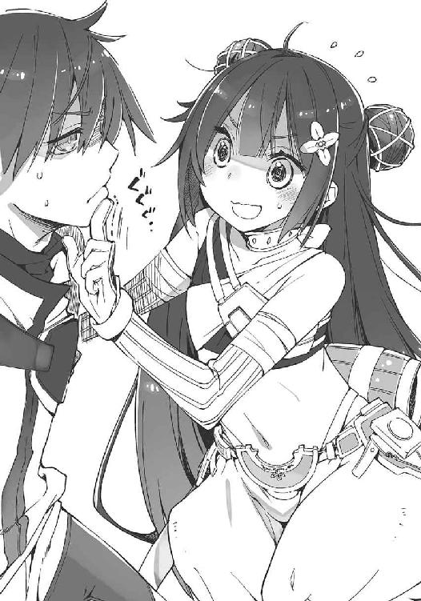
ソーマとメルヴィーユにとっては街の自警団程度を突破するのは容易だ。官憲など怖くはない......が、詳細な人相書き付きの手配状が回ったりすると色々と面倒なことになる。
最善手はこの泥棒少女の口を永遠に封じてしまうことだが、保身のために他人を殺めるという発想をソーマはできなかった。
硬直したソーマの手から力が抜ける。泥棒少女はマントを脱いで白い肩を露出させると、ソーマを建物の壁に押しつけるように抱きついた。
「別に迷惑をかけるつもりはないわ。ほんの二、三分、あいつらを撒くまででいいから」
泥棒少女が耳元で囁く。
追っ手の足音がさらに接近し、今度は遠ざかっていく。どうやらこちらの路地には来なかったらしい。と、
「ソーマから離れるのじゃ！ 泥棒猫が！」
メルヴィーユがぶち切れた。
「え？ ちょっと、邪魔しないでよ」
「儂とソーマの甘い時間を邪魔しておるのは貴様じゃろうが。ええい離れろ、その板っ切れのような乳をソーマに押しつけるでない！」
腕に爪を立てて引っ張られながら罵声を浴びせられて、泥棒少女の方もキレる。
「板っ切れですって!?」
「反応するのそこかよ」というソーマの突っ込みなど誰も聞いちゃいない。
「板っ切れと言って悪ければ下ろし金と言ってやろうか？ いいから離れろ！ 儂のソーマがすり減るでは......貴様、何をきょろきょろしておる？」
「え？ あらそこにいたのね？ ごっめーん。小さすぎて分かんなかったあ。こんな小さい人って初めて見たかも。あ、人じゃなかったっけ」
「儂もここまで流暢に人語を操るどぶ板を見たのは初めてじゃ」
「......あは......」
「......ふふ......」
笑顔で見つめ合う泥棒少女とメルヴィーユ。一見すると友情が芽生えたかのような絵面であったが、
「死ぬか人間!?」
「返り討ちにしてあげるわ！」
もちろんそんなことはなく、二人はすぐにとっくみ合いの喧嘩を始めた。
「お、おい、お前らやめろ！」
「ソーマはすっこんでるのじゃ！」
「そうよ！ これはあたしとこのチビの問題！」
いつからそんな話になったのだろう。ソーマの制止もなんのその、二人は舌鋒鋭く罵り合いながら、石畳の上を転げ回る。
そうこうしているうちに、一度は通り過ぎたはずの足音が戻ってきた。これだけ騒いでいればまあ当然のことではある。
「こっちか！」
「観念しろ盗人め！」
バタバタと靴を鳴らして駆け込んできたのは警官によく似た揃いの制服を着た一団だった。どこかの警備員なのだろう。
「さあ神妙にお縄につ......け？」
「こんの泥棒猫が！」
「はん！ 盗られたくなかったら檻に入れて鍵でもかけておきなさいよ！」
「............」
顔を引っ搔こうと互いの隙を窺うメルヴィーユと泥棒少女、そして二人の諍いをどうすることもできずに少し離れたところに突っ立っているソーマを見て、警備員たちは、
「泥棒じゃなくて泥棒猫か」
「こんな明るいうちから痴話喧嘩かよ。紛らわしい」
「てかガキが両手に花とか何様だ。婚期のやってこない俺に謝れ！」
警備員たちは路上に唾を吐くとソーマの脇を通り抜けて建物の密集する方へと入っていった。
「......助かった......のか？」
そもそも追われていたのは自分ではないのだが、警備員たちを見送ったソーマは、とりあえず安堵の息をついた。
ふと振り返ると、メルヴィーユと泥棒少女が互いのほっぺをつねり合っていた。
「......うぬぬぬ。やるではないか」
「......ぐぬぬぬ。そっちこそ」
我慢比べの果てになにやら奇妙な友情が芽生えそうになっている。
「やれやれだな......」
ソーマはため息と共に手を伸ばし、二人の頭を摑んでガツンと衝突させたのだった。
「お待たせいたしました～。こちらクリームコロッケ定食のパン・スープセットと若鶏の香草焼きと卵トーストとホットケーキのトリプル、ほうれん草とベーコンのパスタ、トマトソースの冷製パスタ、七種のキノコグラタン、ホットコーヒーとオレンジジュースになります。ご注文は以上でお揃いでしょうか？」
「あ、あとフルーツパフェとアイスクリーム盛り合わせと水羊羹。食べ終わった頃に持ってきて」
「かしこまりました～。ではごゆっくりどうぞ～」
ウェイトレスがワゴンを押してにこやかに退場するのを、ソーマは頰杖を突いて見送った。
その対面では泥棒少女が両手を合わせて、
「いただきます」
お行儀がいいのはそこまでだった。おしぼりで両手をぬぐった少女はナイフとフォークを手に取ると、トマトソースの冷製パスタをフォークでこんもり持ち上げてずぞぞぞぞぞぞ。三段重ねのホットケーキをフォークで貫いて口元へと運び、でかい口を思いっきり開けてかぶりつく。
「おいしーい！」
頰を押さえて涙さえ流しそうな少女。その表情が不意に鋭くなり、卵トーストを盗ろうとしていたメルヴィーユの手をはたく。
「ちょっとそこの子供、何してるの。これはあたしの」
「金を出したのはソーマじゃ。つまり儂にも食べる権利がある！」
「何それどういう理屈？」
「やめろメル」ソーマはため息と共に言った。「食べたいならお前の分も頼んでやるから」
「いや別に腹が減っているわけではなく、」
「何でもいいからこれ以上騒がないでくれ。お願いだ」
「やーい、怒られてやんの」
「お前も無駄に煽るなよ......」
と、今度は泥棒少女に向けてソーマは苦言を呈す。
泥棒少女はどこ吹く風といった様子でクリームコロッケにフォークをぶっ刺し賞味する。
ここは街の中央にある泉に面した喫茶店──ソーマが街に到着した日にも来ている、ジゼルの友人が勤める店──の屋外テラス席である。
通りよりも一段高いテラスからは、陽光を受けて輝く泉の清々しい様がよく見える。だがソーマの気持ちは景色とは裏腹にどんよりじめっと沈んでいた。
看板には喫茶店と掲げてあるが飯時には飯が食えるし日が沈めば酒も出る。この辺りの事情は飯屋でも居酒屋でも似たようなもので、ぶっちゃけ明確な区別はない。「一番力を入れている部門はどこか」程度の差だ。
『そろそろお昼じゃない？ あたしってばとってもお腹が空いてるんだけど』
十数分前、警備員たちをやり過ごした直後に、泥棒少女はそう言った。
脅迫であった。奢ってくれなきゃ教会にタレ込んじゃうぞ。
この店にやってきたのは、ソーマが他に店を知らなかったからである。
「............」
「あによ？」
香草焼きにかぶりつきながら泥棒少女がにらみ付けてきた。食べながらしゃべるなよ......ではなくて、
「なんで追われてたんだ？」
「企業秘密。てか尋問する前に名乗ったらどうなの？」
「......俺はソーマ。そっちはメルヴィーユ」
少し迷ったが、本名を告げる。どうせこの場限りの付き合いだ。
「ソーマにチビね。覚えたわ」
「おい、貴様」
メルヴィーユが眉間にしわを寄せるが泥棒少女は涼しい顔で、
「あたしはファム」
その名乗りを聞いて、ソーマとメルヴィーユは顔を見合わせた。
〝ファム〟とは古代語で「女性」を意味する。我が子に「男」だの「女」だのと名付ける親はいない。つまり偽名だ。泥棒が本名を名乗るとは最初から期待していなかったが、女とはいくら何でもぞんざい過ぎるとソーマたちは呆れたのだ。
「あ、すいませーん！ このトマトのパスタもう一皿！ それから、なんか肉！ がっつりしたお肉！」
ファムが手を上げ大声で追加注文。店の中からウェイトレスが「ありがとうございまーす！」
すぐに追加の料理が運ばれてくる。
湯気の立つ肉の塊を見てファムは満面の笑み。
一方ソーマは伝票に書き足された数字を見て暗澹たるため息をつくのであった。
「そう言えばあんたたちここまでどうやって来たの？ まさか歩き？」
長靴みたいにどでかいローストビーフを切り分けながらファムはそう訊ねた。ソーマは忌々しい思いで肉の塊をにらむ。人の金だからってこんなもの頼むなよな。
「そのまさかだよ」
愛想悪く答えてから、ふと気になった。
「お前、大鉄に乗ってたんだよな。......あの後どうなったか見てたか？」
「あんたが氷の悪魔を倒した後？ 特に追加の悪魔も出てこなかったし事件らしい事件はなかったわよ。鉄道公社の人がバイクで救援呼びに行って、次の日の昼前には迎えの車が来たから、負傷者から先に搬送始めて、明るいうちにはみんな街に到着したわ」
そう聞いてソーマはほっとする。あれ以上の被害がなかったのは不幸中の幸いだ。
「まあ街に着いてからが大変だったんだけど」
「そりゃ、大騒ぎだっただろうな」
とソーマは頷いた。
大陸横断鉄道は人類の英知の結晶である。終末の厄災以前の超文明の遺産である失伝機関を擁し、鉄鋼業製造業建設業、そして教会の悪魔研究、魔法陣技術──それら全てと、膨大な年月、資材、そして人命を費やして建造された。その狙いは大陸の東西を短時間で結ぶことで人的資源的な交流を促進し、人類社会の発展を促して悪魔共に対抗することである。
その大陸横断鉄道が悪魔の襲撃により脱線し、多数の犠牲者を出してしまった。
もちろん脱線はただの一回である。壊れた線路を引き直し、車両を修理すれば大鉄の復旧は可能だろう。だがその運用は今まで通りとは行かない。何よりも人々の意識を変えることになるだろう。これはただの脱線事故ではなく、人類社会の、悪魔に対する手痛い敗北とも言える事件なのだ。
「......それにしても、今までこんなことはなかったよな。どうしてあいつら、大鉄を襲ったりしたんだろう」
「食べるものが減ったからじゃないか、って事故の調査に来てた教会の人が言ってた」
ファムはそう言い、パスタをズルズルすすりながら、
「最近はどこの街も悪魔対策はしっかりするようになってきてて、悪魔は人を襲うチャンスが減ってる。それで腹を空かせた悪魔たちは今までやらなかったようなハイリスクな手段をとらざるを得なくなってるんじゃないか──というのが教会の分析。だから今が踏ん張りどころだ、共に力を合わせて人類社会を守りましょう、志ある者は教会の門を叩くのです！ とかついでに勧誘してた」
「それはどうじゃろうかのう」とメルヴィーユが異を唱えた。「人間どもの対策が最近急によくなったとは感じられん。現に儂がこうして街の中にいられるではないか。人間のやることは今も昔も穴だらけよ。食い詰めた悪魔が荒っぽい真似をするようになった、というのは同意じゃが、その理由は別のところにあると儂は考える」
「というと？」
「凶作でもないのに食料が不足するのは食い扶持が増えるからじゃ。つまり悪魔の数が増えて、獲物である人間を取り合っている」
「............」
ソーマは押し黙った。「近頃悪魔が多くなった」──旅の途中、同じフレーズを何度聞いただろう。
「あたしも悪魔が増えたんだと思う」とファム。「教会が調子いいこと言うのって、だいたい何か都合の悪いこと隠してるときだし」
ファムは生のピーマンでも齧ったような顔で言った。どうも教会に対して良い印象を持っていないらしい。
「他に何か質問ある？ あたしで分かることなら教えてあげるけど」
「最初の質問に答えてないぞ」
「え？」
「なんで追われてた？」
「泥棒が下手を打ったというだけの話じゃろ」
メルヴィーユがつまらなそうに言う。
「んーまあそうなんだけど......」とファムはしばし思案するような顔でローストビーフを食べてから、「......あんたたちさ、〝始祖アダムの遺産〟って知ってる？」
「馬鹿にするな。知らない奴の方が珍しいだろ」
〝始祖アダムの遺産〟──人類の始祖アダムが箱船に積み込み楽園から持ち出したと言われる品々のことだ。持ち主に無限の知識を与える〝賢者の石〟、振りかざせばあらゆる病を癒やすと言われる〝星樹の杖〟、相手の心を映し出す〝真実の鏡〟、人造人間の作り方が記載されているという〝賢者アインの秘法書〟......。
それらの筆頭に挙がるのはもちろん〝箱船〟だ。全ての悪魔を打ち倒したときに現れるとされる楽園への帰還船。
始祖アダムの遺産とは、〝失伝機関〟のような旧文明が残した科学機械とはまた違った、実在するかも極めて怪しい伝説の宝物の総称である。
中央管理教会の教皇が代々受け継ぐ〝楽園の指輪〟は本物──ということになっているが、そもそも〝楽園〟が実在したかが怪しいのだから、そこから持ち出されたとされる秘宝の存在も疑って然るべき──ではあるが、「来歴のよく分からない不思議な力を持った道具」が実在するのは事実である。
「あたしはそれを探してるの。それで、この街に来たのは〝聖骸布〟があるって聞いたから」
ソーマは全然知らなかったが、デルナには博物館があって、そこの目玉展示の一つが聖骸布なのだった。
「始祖アダムの遺体を包んだことでそう呼ばれているけど、聖骸布は元々は始祖アダムが纏っていたマントで、雨も矢も刃も通さず、あらゆる災いから着用者を守ってくれる、と言われているすごいお宝」
「......まさかとは思うが、博物館の展示を盗もうとしたのか？ 白昼堂々？」
「そう」ファムはあっさり頷いた。「昼間の方がやりやすいのよ。普通に客として入っていって、人の流れが途切れた瞬間に素早く偽物とすり替える。慣れたもんよ。今回もうまくやれるはずだったんだけどね」
「失敗した」
ソーマの言葉にファムはこっくり頷き、それから忌々しそうにローストビーフにフォークを突き刺した。
「なんと画鋲で留めてあったのよ！ 信じられる!? 引っ張ったら台座ごとどーん！ ってひっくり返って！ 警備員が一瞬で飛んで来て！」
「そりゃ博物館だって盗まれたくはないだろうから対策はするだろ」
「だって聖骸布よ!? 画鋲なんて刺さらないはずじゃない！」
「そりゃ偽物だから......ん？」
本物なら画鋲は刺さらない。偽物には刺さるが、本物だと称して展示しているなら画鋲で留めるのはおかしい。客が画鋲を見つけてしまったら、偽物だとばれてしまう。
「ガラスケースもなしに、誰でも触れるような形で展示してある時点で怪しい......と儂は思うが？ そもそも本物の聖骸布なら──それが実在するとしてじゃが──始祖アダムの墓の中にあるはずではないかのう」
「あ、悪魔に正論を言われた......」
わななくファム。ソーマは冷めたコーヒーをすすって、
「どうでもいいが始祖アダムの遺産なんか手に入れてどうするんだ？ 転売するにもそんな特殊なもん、簡単に足が付くだろ」
「そっちこそ悪魔なんか連れ回して何のつもり？」
ソーマは無言で目をそらした。お互い言いたくないことはある。
ふと、ソーマはいまさらのような疑問を覚えた。
ファムはメルヴィーユを悪魔だと知っている。なのにどうして恐れず同席していられるのだろう。普通の人間なら大騒ぎをして教会に駆け込み、ソーマたちは今頃騎士団に取り囲まれているはずだ。
ところがファムはメルヴィーユを恐れず、逆にソーマとメルヴィーユを脅迫さえしている──タダ飯をたかるというちゃちな脅迫だが。
メルヴィーユも同じことを感じたようで、真面目な顔でファムを見て、
「お主、儂が怖くはないのか？ 儂らの力は既に見たじゃろ？」
「え？ ......ああ、別に。悪魔も人間もたいして変わらないでしょ」
ファムは達観したように言うと、皿に残った肉汁をパンですくってきれいに平らげた。
「おいしかったー。おかわり！」
「......まだ食うのかよ」
「え？ 他人の奢りなら無限に入るわよ？」
笑顔で恐ろしいことを言い放つファム。
こいつも実は悪魔なんじゃないのか──疑念に駆られるソーマであった。
「......もう勘弁して下さい」
ランチタイムも終わってしばらくたった頃、ソーマは涙目でファムに訴えた。「他人の奢りなら無限に入る」と言ったのはあながち冗談でもなかったらしく、ファムはあの後さらに追加注文をし、全くペースを落とさず数時間にわたって食べ続けた。
「これ以上は俺には払えないからな。食べたければ自分で払え」
ソーマは財布をテーブルの上に投げて宣言する。
「そう？ じゃあこの辺でやめておこうかな。健康には腹八分目が大事って言うし」
「それだけ食らって乳が平らなのもそれはそれですごいな」
「あ？ なんですって？」
「儂ももっと食べた方がいいんじゃろうか......」
自分の手足を眺めて呟くメルヴィーユ。ファムにチビと言われたことが地味に堪えているらしい。
「お前はそのままの方がいいよ」
とソーマは心にもないことを言った。これ以上財布の中身を軽くされてたまるものか。
「そ、そうかや？ ふへへへへ」
メルヴィーユが頰に手を当て嬉しそうにはにかむ。悶死必至のかわいらしさだったが、気の毒なことにこのときソーマはぜんぜん別の方向を見ていた。その視線の先にはうつむき気味で歩く、見覚えのあるメイド服。
「......あそこにいるのジゼルじゃないか？」
「む。そのようじゃな。はて、なにやら様子が暗いようじゃが......腹痛か？」
メルヴィーユが顔を上げてそう呟くと、
「あんたたちの知り合い？」
「ん。世話になってる家のメイド」
ソーマが簡潔に説明するとファムは目の色を変えて立ち上がった。
「メイド雇うようなお金持ち？ 是非お知り合いになりたいんですけど！」
「断る。お前盗みに入る気満々だろ」
とソーマは言下に拒否するが、
「そこのメイドなおっじょうさ───ん！ こっち来てお茶しましょうよ───！」
「あ、馬鹿」
ぶんぶん手を振るファムを慌てて止めようとするがもう遅い。テラス席にソーマとメルヴィーユがいることに気付いたジゼルは、こちらにとてとて向かって来てしまった。
「ソーマ様。メルヴィーユ様」
テラスに上がってきたジゼルの顔は、メルヴィーユが指摘した通り浮かない。
「昼前には戻るつもりだったんだが、ちょっと色々あって。昼飯用意してたのか？ 無駄にしたなら済まない」
「はい。ああ、いいえ。それは別にいいんですけど......」言って、ジゼルはファムの方を見た。「こちらの方はお友達でいらっしゃいますか？」
「冗談じゃな、」
顔をしかめて即座に否定しようとするメルヴィーユだったが、その前にファムが抱きつき口を封じた。
「そうなのよ～！ あたしとソーマたちとはマブダチってか戦友ってか、運命共同体？ そうよね？ ソーマ、メルヴィーユ？」
訳：話を合わせなかったらあんたらの正体ばらすからねよろしく。
「......何度か一緒に仕事をしたことがあるんだ」
そつなく話を合わせるソーマ。
「儂にとっても、た、頼れる姉のようなもの、で......ある、ぞ？」
頰を引きつらせてつっかえつっかえ言うメルヴィーユ。目が笑っていない。焚き付けにしてくれようかこの板っ切れ！ めらめらと燃えさかる怒りの視線にさすがのファムも一瞬たじろいだ。と、
「で、ジゼルは買い物の途中か？」
険悪な雰囲気になりそうだったのを察したソーマがすかさず話をそらす。
「あ、いえ。ちょっと友達のところに......」
そう言えばこの喫茶店にはジゼルの友人が勤めていたんだったか。
「そうか。じゃあ俺たちは行くよ」
と言ってソーマは腰を浮かせた。ジゼルは仕事の合間の息抜きにやってきたのだろう。アーチボルド家の客人であるソーマたちがいたのではジゼルもくつろげまい──そう思って気を遣ったつもりだったのだが、
「あ、あの、ソーマ様！ メルヴィーユ様！」
ジゼルは真剣な顔で呼び止める。
「......少しご相談があるのですが......よろしいでしょうか？」
「俺たちに？」
「はい。あの、最初は友達に......と思ったんですけど、よく考えたら街の人じゃなく、外から来た人の方がいいのかな、って思いまして......その......ダメですか？」
「いいかダメかは話を聞いてみないと」
ソーマは返事を保留するが、半ば以上受けるつもりでいた。それを察したのだろう、メルヴィーユが「やれやれじゃな」とため息をつく。
「それで、相談というのは？」
「旦那様のことなんです」
「アーチボルド博士の？」
「はい。実は......」
セクハラをやめさせろとかそんな話だろうか、と軽く考えていたソーマは、続くジゼルの告白に度肝を抜かれた。
「......旦那様は連続殺人犯かも知れないんです」
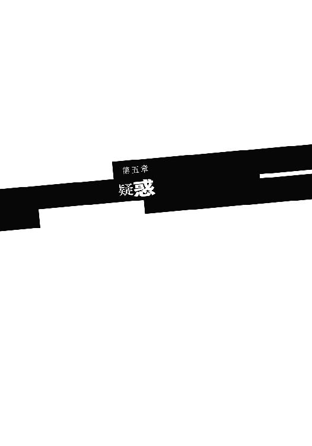
同日、夕。
ソーマたちがアーチボルド家に戻ると、博士は既に帰宅していた。
「おお、ソーマくん！ 今し方新発見があったぞ！ 詳細は少し待ってくれ！」
大学から借りてきたらしい資料を読みふけっていた博士は興奮気味にソーマにそう告げて書斎に籠もり、夕食ができたと呼びに行っても返事をしなかった。ようやく出てきたのは日もとっぷり暮れてからだ。
「......博士？」
書斎から出てきたアーチボルド博士に、ジゼルが心配そうに声をかける。博士の態度は数時間前とは正反対で、暗く沈んでいた。
「コーヒーを」
それだけ言うと博士はよろよろ歩いて暖炉の前まで行き、揺り椅子に倒れ込むように腰掛けた。
「済まない。ソーマくん」
「はい？」
突然謝られてソーマは戸惑う。
「先ほど新発見だと言ったが、私の勘違いだったようだ。ぬか喜びさせて済まない」
「いえ」
「ふう」と博士はため息をついた。新発見だと思ったものがただの勘違いだと分かって、ソーマ以上にがっかりしたようだ。
ソーマとしてはあまり落胆はない。
そう簡単に分かるわけがない、と思っていたこともあるが、今はそれ以上に、別の問題が心を占めていた。
──旦那様は連続殺人犯かも知れないんです。
ソーマは昼間のジゼルの言葉と、それに続くやりとりを思い出す。
「連続殺人？ どういうこと？」
と眉根を寄せて訊き返したのはファムだった。
「この街には若い女を狙う殺人鬼がいる......んだったかな。街に入るときに衛兵に聞かされてないのか？」
「え？ きき聞いたわよもちろん聞かされたわよ。あたしみたいな魅力的な美少女は気をつけろって言われたわよ」
何故かファムは取り乱し、察したメルヴィーユが嗜虐的な笑みを浮かべた。
「聞かされて当然の話を聞かされていない......。ははん。さては貴様、不法侵入じゃな？」
「っ！ だったら何よ？ 出るとこ出る？ そしたらそっちもただじゃ済まないのは......」
「待て。今そんな話をしてどうする。ジゼルが混乱してるじゃないか」
にらみ合うメルヴィーユとファムをソーマは落ち着かせ、
「悪い。こいつらの言うことは気にするな」
「はあ......」
ソーマはひとまず周りを見回した。テラスにはソーマたち以外の客はいない。通りに人の姿は多いが、このテラスは道路よりもかなり高いところに設置されているし、ソーマたちの席も奥まっているので話を聞かれる心配はしなくても良さそうだ。
「で？ 連続殺人犯とはさすがに穏やかじゃない。何か根拠があって言ってるんだよな？」
「はい。......その前に事件のあらましをご説明します」とジゼルは主にファムの方を見ながら言った。「このデルナの街では半年ほど前から、若い女性を標的にした殺人事件が何度も起きてるんです。犯行は夜。凶器が同一らしくて、それで連続殺人犯だと断定されました。被害者は十人くらい......でしょうか？ 済みません。正確な数字はちょっと......」
「いや、いい。それよりどうして博士が犯人だと思ったかを教えてくれ」
「はい。......旦那様には、時々夜中に散歩する習慣があるんです。研究中の気分転換で。『普段は目にしない景色を見ることでアイデアが閃く』んだそうです。それで散歩に出る場合は、必ず私にも伝えてから行くんです。私は旦那様のご帰宅に合わせて熱いコーヒーを淹れてお待ちします」
「それの何が怪しいわけ？」とファム。
「黙って聞け」とメルヴィーユがファムに文句を言った。「ここまではただの前振りじゃろうが。まったく、そのように気が短いから乳も育たんのじゃ」
「気が長い誰かさんは脚が短いようですけど？」
ファムはすらりとした脚を組み替えながらそう言った。
「......喧嘩を売っておるのか？」
「あんたが先にね」
「だからやめろ。二人まとめて泉に放り込むぞ」
この二人の相性の悪さはなんなのだろう。悪魔と好相性な人間なんてのがいてもそれはそれで何だが。
ソーマは泥棒と悪魔をにらみ付けつつジゼルに話の続きを促す。
「一ヶ月と少し前のことです。旦那様が夜中に散歩に出かけたのは。その日、旦那様は私に何も告げずに外出されました。私はその日たまたま眠りが浅くて、物音に目を覚ましたんです。そして部屋の窓から外を見たら、旦那様が裏口から人目を憚るように走っていくのが見えました。手には何か、長いものを持っていて。そのときはあまり気にしなかったのです。ですがその翌朝、若い女の惨殺体が南の水路に浮かびました」
「ちょっとした偶然じゃろう」
「私も最初はそう思いました。旦那様も男性ですから、色街に行ったりしたくなる日もあるのでしょう。そういう行き先を私に告げていくのは憚られるからこっそり行ったのだと。それがたまたま事件の日と重なったのだと思いました。ただ、それ以来私は、旦那様の夜中の外出に注意するようになりました。それで先週、一ヶ月前と全く同じことが起こったんです。旦那様が夜中にこっそり出て行って、翌朝、女性の遺体が発見される。今度は東の城壁沿いの水路でした。凶器は同一。消火用の斧だそうで......旦那様が持っていた長いものが、ちょうどそれくらいの大きさでした」
「......」
一度だけなら偶然だが、二度重なれば分からない。三度目──が起こるのを待っていては新たな被害者が出てしまう。
「俺には博士がそんなことをする人には思えないけど」
ソーマは腕を組んで唸る。
「人間の外面ほど当てにならんものはないぞ。誰しも腹にどす黒いものを抱えておる。それを普段は隠しているだけじゃ」
「......なんでこっちを見ながら言うのよ」
「うん？ 別に棒倒しの棒みたいな女のことではないぞ。一般論じゃよ、一、般、論」
「このチビ......」
またしてもにらみ合う二人。ソーマはもう構うのをやめた。勝手にキャットファイトでも何でも始めればいい。そしたら胴元になって通行人から賭け金を徴収してやる。
「私も信じられません。あの優しい旦那様が、行き場をなくした私を拾って、置いて下さった旦那様が殺人犯だなんて......そんなことは......」
思いたくない。けれど状況はなかなかに疑わしい。
いつも通り明るく振る舞いつつ、裏ではずいぶんと悩んでいたのだろう。疑念を打ち明けてため息をついたジゼルは、とても疲れた様子で、一気に十も老けてしまったかのように見えた。
「一つ訊きたい」とメルヴィーユ。「あの家には地下室があるな」
「あ、はい」
「入ったことは？」
「ありません」
「立ち入りを禁止されておるのか？」
「いえ、最初から入れないんです。あの屋敷の前の持ち主が鍵をなくしたとかで、旦那様も地下には入ったことはないとおっしゃってました。それが何か？」
ふむ、とソーマはまた唸った。横目でメルヴィーユを見やる。
地下室から血の臭いがする──とメルヴィーユは言った。そこに来ての殺人疑惑である。これは関係があるのか、ないのか。気にはなるが、現時点では何とも言えない。
「ただの勘違いならそれでいいんです」
むしろ勘違いであって欲しい、というのがジゼルの本心だろう。
眉根を寄せ、今にも泣き出しそうな顔で胸を押さえるジゼルを見て、ソーマはふうっとため息をついた。
「分かった。俺に任せろ」
「！ ありがとうございます！」
銀髪メイドが顔を上げ、感極まったのだろう、目尻から涙の玉を散らせてソーマに飛びつく。
その背中にメルヴィーユが慌てて取り付き、エプロンの紐を摑んでぐいぐい引っ張りながら、
「ええい離れろ！ どいつもこいつも儂のソーマに馴れ馴れしいんじゃーっ！」
「駄メイドの願いなど無視すればよかったのに......」
再び現在、夜。
メルヴィーユはあてがわれた客室のベッドにうつぶせに寝そべり、窓際のソーマに恨みがましい目を向けている。
コーヒーを飲み終えるとすぐ、アーチボルド博士は「今日はもう休む」と言って自室に下がってしまった。ソーマに頼まれた魔法陣についての調査で突破口が開けたかと思ったら単なる勘違い、それもかなり初歩的な勘違いだったようで、落胆してしまったのだ。
家主が寝てしまったのに客人だけが起きて勝手をしているわけにはいかず、ソーマとメルヴィーユもすぐに自分たちの客室に入った。
「ちょっと頼まれればホイホイ頷きよって。ソーマの浮気者！」
「この家は何かおかしい、って言い出したのはお前だぞ」
「う。それはそうじゃが......」メルヴィーユは言葉に詰まり、「で、ソーマはどう見る？」
「どうって......俺は警察でも探偵でもないしなあ。事件の捜査なんかできないよ。でもまあ犯人が誰かなんて分かる必要もないだろ。要は博士が夜中にこっそり出て行って何しているのか、それが分かればいいだけだよ」
ジゼルは真実を知りたいのではなく、己の中に生じた不安を解消したいのだ。「博士は殺人犯じゃなかったよ、あれはやっぱり君の勘違いだったよ」誰かにそう言ってもらって、安心したいだけなのだ。
ソーマとしても気持ちは一緒だ。突然やってきたソーマの荒唐無稽な話をきちんと聞いてくれて、トーマ追跡について協力を申し出てくれた博士が殺人犯だとは思えない。
ソーマは窓から表を眺めている。よく手入れされた庭に、今のところ異変はない。いや、生垣の向こうに不審な影......短いマントを被った影がこちらに手を振った。ファムである。
ソーマに姿を見せたファムはすっと身をかがめ、まるでかき消されたかのように姿を消した。
「......あいつ、大丈夫か......？」
最初、ファムは「殺人鬼とかあたしには関係ないし」という態度だった。が、連続殺人犯に当局が懸賞金をかけていると聞いて態度を変えた。「手伝ってあげるから、その旦那様とやらが犯人だったら懸賞金山分けね！」
実力が不明な奴と組んでの仕事ほど危険なことはない。だからソーマもメルヴィーユもファムの申し出を断ろうとしたのだが、秘奥義「あたしに逆らったら正体ばらすわよ」の前では抵抗など無意味だった。
「この調子では懸賞金も全額あの女に持って行かれそうじゃな......。そうじゃ！ いっそのこと連続殺人犯の仕業に見せかけて始末を、」
「しない」
「なんでじゃ。絶好のチャンスだというのに」
「金のために引き受けたわけじゃないだろ。それに、どうせジゼルの勘違いだよ。懸賞金なんか手に入らないさ。こんな感じで何日か監視を続けて、そのうち博士が家にいる日に事件が起きて、それで疑いは晴れる。ジゼルも安心する。それで終わりさ」
「ま、そうなるじゃろうな。現実などつまらないものじゃ」
そう言ってメルヴィーユはベッドに突っ伏した。
ソーマは生真面目にも窓からの監視を続ける。
と、メルヴィーユが顔を上げてドレスのリボンを解きながら、
「つまらん現実など放り投げて、儂とめくるめく夢と官能の世界に、」
「いかない」
「いけず！ 不能！ あんぽんたん！」
ところが事態は二人の予測したようにはならなかった。
監視を始めてわずか二日後──アーチボルド博士が深夜に屋敷を抜け出したのだ。
「......」
階段の軋む音でソーマは目を開けた。ソファの背に頭を預けたままで耳を澄ます。重い足音は鍛えられた成人男性。アーチボルド博士のものだ。
ベッドの上に下着姿で丸くなっていたメルヴィーユも顔を上げる。
物音を立てまいとしているのだろう。足音は一歩ずつゆっくりと下ってくる。長い時間をかけて一階に到達した足音は、同じようにゆっくりと、裏口の方へと遠ざかっていく。
メルヴィーユがベッドから降りた。
「降魔展開──〝管狐〟」
唱えると同時にソーマの袖口から、全長十センチほどの獣が二匹飛び出した。管狐は戦闘力は乏しいが飛行可能でとにかく素早く、小さいのでどんなところにも隠れられる。尾行にうってつけの悪魔である。
「博士の後をつけろ。街の人に見つからないようにな」
ソーマが手を伸ばして窓を開けると、二匹の管狐はくるりと回ってから夜空へと一直線に飛び上がっていった。
管狐の姿が見えなくなるのを待って、ソーマは窓を閉めた。靴紐を確かめてコートに腕を通す。メルヴィーユの方は宙に浮かんでくるりと回転。下着姿からいつものゴスロリドレスに変化させる。
それを横目にしつつソーマは剣を腰に下げた。
「必要なかろう」
「うん。まあ念のため」
そうして身支度を整えているとまた足音がした。今度は軽い。隠れるつもりのない足音はソーマたちの部屋の前で止まり、ノックと共にジゼルがドアを開けて顔を見せた。
「ソーマ様。メルヴィーユ様。今、旦那様が」
「分かってる。今準備中だ」
「急がないと見失ってしまうのでは......」
そう訴えるジゼルの表情は硬い。ソーマは安心させるように強く頷いて、
「問題ない。手は打ってある」
「手？」
ジゼルの疑問には答えず、ソーマはコートのボタンを留めた。
「じゃあ行ってくる。打ち合わせ通り、ジゼルは何も気付いてないふりをすること。報告は明日、例の喫茶店で。いいね？」
「はい」
ジゼルが神妙に頷く。
ソーマとメルヴィーユは連れ立って部屋を出た。裏口へと足早に向かっていると、ジゼルも後からついてくる。同行はできないにしても、せめて家を出るまで見送ろうというのだろう。
「あ、待って下さい！」
裏口から出ようとしたところでジゼルに呼び止められた。振り返るとジゼルが火打ち石をカツカツと打ち鳴らす。ソーマは意味が分からず戸惑った。
「昔、東方の旅の人に教わったおまじないです。どうかお気をつけて」
「ありがとう」
礼を言い、今度こそソーマはメルヴィーユとともに屋敷を出た。
門柱に管狐の片割れが待機していた。姿の見えないもう一匹は博士の後を追っているはずだ。
管狐はソーマたちの足下をくるりと回り、道路を西へと走り出す。管狐には離れていても仲間の居場所が分かる、という特性がある。ソーマたちの手元にいる管狐が相棒のところへ向かえば、そこに博士もいる、という寸法だ。
管狐の先導に従って進みながら、ソーマはちらりと屋敷を振り返った。ジゼルが勝手口のドアに摑まってこっちを見ている。
「......いい子だな」
「騙されるでない。あれはけっこうな食わせ者じゃぞ」
「お前がそう言うってことはきっといい子だ」
嫉妬丸出しのメルヴィーユを適当にいなしてソーマは管狐の後を追う。小動物の姿をした悪魔はチラチラ後ろを振り返り、ソーマたちがついてきているのを確認しながら走る。
「この先は歓楽街だな。博士の外出はただの女遊びで事件とは関係ない？」
「さて......。獲物の物色かも知れんぞ」
連続殺人事件の被害者の多くは娼婦である。
と、管狐が「キキッ！」と甲高く鳴いた。
「片割れに何かあったようじゃ」
メルヴィーユが表情を引き締める。管狐が石畳を蹴って飛び上がった。そのまま宙を舞い、歓楽街の少し手前の細い路地へと入っていく。
ソーマとメルヴィーユも管狐の後を追って路地に入った。と、管狐が不意に止まる。
路地には真っ赤なけばけばしい、布面積の少ない衣装に身を包んだ若い女がいた。どうやら娼婦のようだが、辻立ちにしては雰囲気が少々変だった。
「ソーマ、あれ」
とメルヴィーユが女の手を指す。
艶のある手袋をした女の手には先行して博士を追っていたはずの管狐が捕まっていた。ソーマは驚き、警戒した。管狐は見た目こそかわいらしい小動物だが、これでもれっきとした悪魔である。それを捕まえたこの女、ただ者のはずがない。
「かわいい。お名前は？」と女は管狐に話しかける。
「済まない。それは俺たちのペットなんだが」
うまくごまかして回収してしまおう、と、ソーマは思ったのだが、女はくすっと笑って、
「嫌よ。あたしが捕まえたんだからあたしのもの。......どうしてもと言うなら、そうね、百万ダール払って」
「なっ......」
そんな大金払えるわけがない。
「面倒じゃ、力ずくで......」
とメルヴィーユが言ったときだった。女がケラケラと笑い出した。
「街中に突然悪魔が出てくるからびっくりしたけど、やっぱりあんたたちの仕業だったのね」
「？」
「分かんない？ あたしよあたし」
そう言いながら女はソーマたちに歩み寄り、大きな口でにんまりと笑った。
「............ファムか!?」ソーマは思わず大きな声を出していた。「うわ、全然別人だな。てかお前何やってるんだ？ まさかそれが本業か？」
「違うわよ。おとり捜査。連続殺人犯は娼婦を狙うことが多いんでしょ？ この格好でその辺うろついてたら声かけてくるかなー、と思って」
「昨日から見かけないと思ってたらこんなことをしてたのか」
「ふむ。張り込みに飽きて逃げたものだとばかり思っておった」
メルヴィーユの嫌味にファムは眉間にしわを寄せたが、すぐに自制心を取り戻して、
「それで、あんたたちが屋敷から出てきたってことは容疑者が動いたんでしょ。どこ？」
メルヴィーユは無言でファムの右手......に捕まっている管狐を指差した。
「え？ これ？ 変身したの？」
「そんなわけがあるか、たわけ！ それが博士を追っていたのを、貴様が捕まえてしまったから見失ったんじゃ！」
「え？ あー、それはごめんなさい」
「謝って済むなら警察はいらんのじゃ！ ったく、これだから板っ切れは......」
「知らなかったんだからしょうがないじゃない。そもそもあたし程度にあっさり捕まるような小物に仕事任せたあんたのミスじゃないの？」
「小娘が儂を間抜け扱いするか」
「やめろお前ら」ソーマはため息と共に割って入る。「こんなところで喧嘩しても何にもならない」
それは全く正しい指摘であったので、メルヴィーユとファムはにらみ合うのをやめた。といっても友好的になったわけではなく、今度は目も合わせず互いをシカトである。
「とにかく博士を捜さないと......」
ファムのおかげで尾行は失敗してしまったが、博士がこの近くまで来たのは間違いないのだ。
博士が本当に殺人犯で獲物を物色に来たのか、それとも単に女遊びに来ただけなのか。
いずれにせよ歓楽街に向かった可能性が高いと考え、ソーマはそちらに向かうべく大きな通りに戻ろうとした。
と、そのとき、どこかから鋭い女の悲鳴が聞こえてきた。
「っ!? 今のは!?」
「行ってみよう！」
言うが早いかソーマは走り出す。ファムがそれに続き、
「ぬあっ！」
メルヴィーユが段差につまずいて転んでしまった。
「ああっ」
とソーマは舌打ち。
普段は宙に浮いているメルヴィーユは体を動かすのが苦手である。飛んでしまえばかなりの速さで自在に動けるのだが、夜でも人の多い歓楽街の近くで迂闊に悪魔の力を披露するわけにはいかない。
「先に行ってるわよ！」
そう言い捨ててファムが加速する。一人で先行させるのは不安だが仕方がない。
ソーマはメルヴィーユを助け起こしてファムの後を追う。程なくファムの背中が見えた。その向こうでは一組の男女がもみ合っているようだった。女の方はファムと似たような格好の娼婦。男の方は薄手のコートの襟を立てているので顔はよく見えない。
「博士？」
「背格好は似ておるが」
先行するファムが石畳を蹴った。
「悪漢死すべし！」
叫び、懐から取り出したのは流星錐──紐の先に尖った重りを結びつけた武器だ。可搬性に優れ、非力な女性でも遠心力を利用して強烈な一撃を放つことができる。
ファムが流星錐を振り下ろそうとしたその瞬間、男は娼婦を盾にするように動いた。ファムは慌てて攻撃を中断。男は娼婦をファムに向かって突き飛ばす。ファムと娼婦はもつれ合って路地に倒れる。
そこにソーマが追いついた。
「待て！」
呼び止めるソーマの声を男は当然のように無視、路地の奥に向かって走り出す。ソーマはすぐに後を追った。
「ソーマ！ 一人で行く気か！」
「心配ない！」
メルヴィーユの問いかけにソーマは力強く返事をした。先ほどの動きを見る限り相手はただの人間だ。メルヴィーユの──悪魔の力を使うまでもない。
ソーマは不審者を追って路地の奥へと駆けていく。身体能力では明らかにこちらが上ではあるが、相手はこの界隈に知悉しているようで、簡単には追いつかせてくれなかった。それでも彼我の距離はじわじわと詰まっていく。
「待て！ 逃げきれないことは分かっ──っ！」
返答は投擲された斧だった。消火用の。
ぶぉん！ と不吉な旋風を引き連れて飛来した斧をソーマは仰向けに倒れ込んで回避した。目の前を通過していった斧が後方で木箱か何かにぶち当たり、騒音と木っ端をまき散らす。
「──っぶねえ」
ソーマはすぐに立ち上がった。冷や汗をぬぐって再び走り出す。
ただの人間だと油断しすぎた。ソーマは意識を切り替える。相手はこちらを殺すことにためらいがない。
両足に力を込めて本気の疾走。不審者の背中がぐっと近くなる。不審者が振り向き、新たな斧を投げつけようと振りかぶり、
「っ！」
不審者の手が跳ね上がり、斧がすっぽ抜けた。ソーマが指で小石を弾いて不審者の親指を打ったのである。驚き、反射的に斧を摑もうと身をよじる不審者。不審者が意識を完全に斧に向け、ソーマへの注意を怠ったその瞬間、ソーマは爆発的に加速して間合いを詰めた。
不審者が血走った目をソーマに向けた。その手が斧を拾い上げる。だが遅い。踏み込んだソーマは右手で斧を払いのけつつ左手で不審者の袖を摑んだ。潜り込みながら片手背負い。不審者を全力で投げ飛ばす。
「あああああああ！」
不審者は野太い悲鳴を上げて宙を飛び、路地の壁際に積まれていたガラクタを粉砕しながら表通りへと転がり出ると、水路に沿って並ぶ電灯の根元に頭をぶつけてようやく止まった。それでも意識は失わなかったようで、不審者はふらつきながらも立ち上がろうとする。
その首筋にソーマは消火用の斧の刃をあてがった。
「忘れ物だ。落とさないようにしっかり食い込ませて欲しいか？」
「......」
不審者は観念したようにうなだれる。ソーマは斧を器用に操って不審者の帽子を脱がす。現れたのはアーチボルド博士とは似ても似つかない若い男の顔だった。
博士ではなかった──その事実にソーマは安堵した。
「ソーマ！」
通りの向こうからメルヴィーユとファムが駆けてくる。
「大丈夫!?」
「儂のソーマがその辺の犯罪者ごときに後れを取るわけがなかろうが」
「なんであんたが得意げなのよ」
「夫自慢は妻のたしなみじゃ」
そういうものだろうか。違う気がする。それはさておき。
夜中にずいぶんと騒々しくしたからだろう、ソーマたちの周りには、様子を見に来た人たちがぞろぞろ集まりつつあった。
「何の騒ぎ？」「痴話喧嘩で流血沙汰とか」「娼館の足抜けじゃなくて？」「あのちっちゃいのも娼婦なのか？」「確かに妙な色気はあるが」「げ、お前ロリコンかよ」
好き勝手に噂する野次馬たち。
あまり目立ちたくはないのだが......と思いながらソーマは人垣を見回し、
「連続殺人の容疑者を捕まえた！ 誰か警察を......」
「ソーマくん？」
呼びかけが思わず途切れた。
人垣からひょっこり顔を出したのはアーチボルド博士だったのだ。
「──私が殺人犯!? はっはっは。ジゼルがそんな勘違いをねえ」
夜道にアーチボルド博士の笑い声が高らかに響く。
ソーマ、メルヴィーユ、ファムに博士を加えた四人は、城壁沿いの道を北に向かって歩いていた。
歓楽街の近くで博士と再会した後、本物の連続殺人犯は警察の手に無事に引き渡された。ソーマたちはやってきた警官隊に同行して街の北西門に併設されている警察署へと赴き、つい先ほど事情聴取を終えて解放されたところである。
夜の散歩をしていたら、たまたま女の人が襲われているところに出くわしたので助けた──警察への説明はそれで済ませたが、博士に対しては最初からきちんと話した方がいいとソーマは考え、ジゼルから相談を受けたことを明かし、監視していたことを詫びた。
「そうか。最近どうにも様子が変だったのはそういうことだったのか。いやあ愉快愉快」
「......笑うようなことじゃろうか」
「笑うようなことだとも。退屈な日常の良きスパイスさ」
そう言って博士はまた大声で笑う。何とも鷹揚なことである。
「それで、今夜のことはジゼルには言わずに済ませてもらいたいんだが」
とソーマは言った。
もう真犯人が捕まり、博士の潔白は証明された。ジゼルの疑念はただの勘違いで終わったわけだが、「ご主人様に疑いの目を向けた」という事実は両者の間にしこりを残す可能性がある。だから、博士がジゼルを今後も屋敷に置いておくつもりなら、今夜のことはなかったことにしてやって欲しい。ソーマはそう頼んでいるのだ。
「ふむ。この話であの子をからかえないのは少々つまらないが......そうだな、君の言う通り、これまで通りの関係を維持するためには知らないふりをするべきだろう」
「ありがとうございます」
「ところでさ」とファム。「潔白だったのは分かったけど、そうすると、アーチボルド博士はあんなところで何をしてらしたんでございますの？」
「田舎娘が無理に上品にしゃべろうとしておかしなことになっておるな」
「黙らっしゃい！ あんたみたいな変なしゃべりしてる奴に言われたくないわ」
「......お前らは喧嘩しないと口がきけないのか」
げんなりするソーマに博士は笑いかけて、
「モテモテだなソーマくん」
「やめて下さい」
こいつらにモテても全く、これっぽっちも嬉しくない。何しろ泥棒と悪魔である。
「......それはそうと俺も気になります。歓楽街にいたのもそうですし、......今、どこに向かってるんですか？」
「歓楽街にいたのはこれだ」
と博士は懐から紙袋に入った酒瓶を取り出した。
「お酒を買いに？」
「そう。いつもは前の日に近所の店で買っておくんだが、今月はうっかり忘れていてな。遅くまで営業している店を探して歓楽街まで行ったんだ。......もう一つの質問に対する答えはあれだ」
博士は手にしたランプで前方を照らす。ぼんやりとした灯りの先に白く塗られた低い柵があり、柵の向こうには無数の石碑が整然と並んでいた。街の北外れ。墓所。湿った夜風が通り抜ける。
「......ジゼルがもう少し注意深ければ、私の夜中の外出が毎月十五日と決まっていることにも気付けただろう」
博士は柵の切れ目から墓所に入り、奥の方にあった小さな墓石の前にしゃがみ込んだ。
「フローラ・アーチボルド」ファムが墓石の名前を読み上げた。
「妻だ」
博士は酒瓶の封を切り、中身を墓石の手前のくぼみに流し込んだ。
ソーマはジゼルに聞いた博士の身の上話を思い出した。アーチボルド夫妻は学生結婚で、幸せの絶頂期に妻は悪魔に殺された。それでアーチボルド博士は悪魔学者──それも極めて実践的な──の道を選んだ。
「博士......」
「同情は不要だよ。こんなことはありふれている」
博士は厳しい声で言い、しかし立ち上がって振り返ったときにはいつもの怪紳士スマイルに戻っていた。
「さあ、帰ろう。こんなところにいては風邪を引く」
「そうじゃな。夜の墓場など薄気味悪くてかなわん。こんなところにいては悪魔に取り憑かれる」
とメルヴィーユが駆け出す。
お前がそれを言うか、とソーマは苦笑しつつ、
「おい、足下が暗いのにそんなに走ったら危な──メル！」
ソーマが注意したその矢先、メルヴィーユは墓石の角につまずいた。両手を前に投げ出すようにして倒れ──危ういところでアーチボルド博士がメルヴィーユを抱き留めた。
「......っ!?」
「おおっと！」
「うっわ、どんくさい」
メルヴィーユはよほど驚いたのだろう、ファムに馬鹿にされても目を見開いたまま反応しなかった。
「だから言わんこっちゃない。すみません、博士」
「いや、墓石に頭をぶつけたりしなくてよかったよ」
「ほら、メルもお礼を......メル？」
メルヴィーユは博士の腕から抜け出ると、ソーマの袖をぎゅっと摑んで博士を見上げ、
「......博士、儂から一つ質問があるのじゃが」
「......何だい？」
「最近の悪魔学者は悪魔の真似事もするのか？」
「メル？」
質問の意図が分からずソーマは首を傾げた。
博士も眉間にしわを寄せて困惑しながら、
「何が言いたいのかよく分からないのだが......」
「とぼけても無駄じゃ。儂の鼻はごまかせんぞ。貴様の口から血の臭いがした。......人間の血の臭いじゃ」
「え!?」
驚くソーマ。メルヴィーユは博士を鋭くにらみ付けて、
「貴様、どこかで人を食ってきたな？」
「おや、殺人犯ならソーマくんがついさっき捕まえたじゃないか」
「儂は貴様が猟奇殺人犯だと言ってるのではない。ほれ、いるじゃろうが、普通に人を食らう〝もの〟が......」
「メル、まさか......」
ソーマが震える声で訊ねる。
メルヴィーユはソーマにしっかりと頷き返し、そして決定的な一言を告げた。
「そうじゃ。こやつは悪魔じゃ！ 悪魔が人間のふりをしておるのじゃ！」
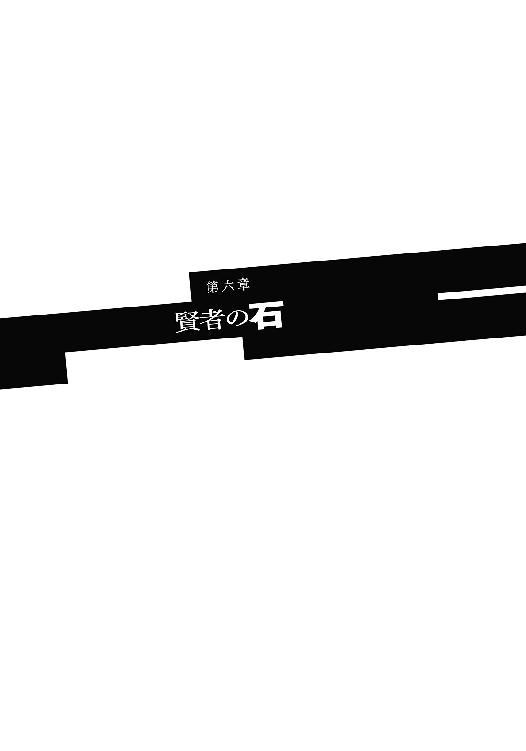
「そうじゃ。こやつは悪魔じゃ！ 悪魔が人間のふりをしておるのじゃ！」
メルヴィーユが細い指先を突きつけ断定する。
指差されたアーチボルド博士はしばらくきょとんと指先を見つめ──寄り目になって何ともユーモラスだった──それから腹を抱えて大笑いをした。
「はーっはっは！ 殺人犯の次は悪魔と来たか！ なんともまあ。こんなに笑ったのは何年ぶりだろう。いやあ愉快愉、」
笑顔を全く崩さないまま、博士は唐突にソーマ目がけて右手を繰り出してきた。
「っ!?」
狙いは喉──突然の博士の行動に驚きつつも、ソーマは戦士の反応で体をひねり、博士の間合いから外す。博士の指先はソーマの喉までは届かず空を搔き、
「っ！」
博士の右手がソーマのコートの襟を摑んだ。力任せに引きちぎる。ボタンが飛び、そこに博士は左手を突っ込もうとする。ソーマは博士の動きを目で追いながら上体をひねっていく。同時に右手を下ろして腿のホルダーからナイフを抜く。くるりと刃を上に向けると、そのまま博士の掌に突き刺した。
「っ！」
能面のような笑顔が歪んだ。
ソーマはナイフから手を離し博士の懐へ潜り込もうとする。腕を取って背負い投げから関節を極めて拘束──のつもりが、博士はソーマの踏み込みに膝を合わせて迎撃。ソーマは両手でブロックするが、その上から砲弾のような膝蹴りを食らって吹っ飛ばされ、墓石を三つばかりなぎ倒して地面を転がった。
「ソーマ！」
「大丈夫だ！」
口に入った墓場の土を吐き捨てながらソーマは答えた。
顔を上げると博士の姿は既にない。いや、いた。かなり遠くにランプを投げ捨て疾走する後ろ姿があった。
「どうなってるんだ......なんで博士が......」
震える声でソーマは呟く。奇襲に対しては体が勝手に反応できたが、ソーマの心はまだ状況を受け入れてはいなかった。
「博士が......悪魔......!?」
にわかには信じがたいことだった。見ず知らずのソーマの、荒唐無稽な話に真面目に取り合ってくれて、協力を申し出てくれた博士が、ソーマの背負った宿業を、重荷を理解して慮ってくれた博士が悪魔だったなんて信じられない。信じたくない。
だが博士の行動が、メルヴィーユの指摘が間違っていないのだと証明している。悪魔なのだ。ではどうしてソーマを手伝ってくれると言ったのだろう。何か他に目的が、
「考えごとは後にせい。分からぬことは後でお仕置きついでに訊けばよいのじゃ」
メルヴィーユの言葉にソーマは我に返り、頷いた。そうだ。まったくその通りだ。
「追うぞ、メル！」
ソーマは頰を叩いて気合いを入れると、ナイフをしまってすぐに駆け出した。メルヴィーユもふわりと宙に浮き上がり、飛翔してソーマに追従する。
全力疾走を続けること十数秒、一度は見失いそうになっていた博士の姿をソーマははっきりと捉える。博士が振り返って舌打ちをするのが見えた。
このままでは追いつかれると察したのだろう、博士は一度ぐぐっと身を沈ませると跳躍、行く手の建物の屋根の上に飛び乗った。
「ちょ、二階よ!?」
後方でファムが驚くが、誰も構っちゃいない。
「降魔展開──〝金鬣汗馬〟」
メルヴィーユが唱えると、夜の静寂に嘶きが響き渡った。
金鬣汗馬は海峡をも跳び越えると言われる、馬の姿をした悪魔だ。その脚力をもってすれば人家の屋根などちょっとした段差に過ぎない。
ソーマが悪魔の力で二階の高さに跳び上がる。屋根に着地する直前、
「っ！」
目の前に突然、煉瓦の壁が現れる。いや、違う。これは煙突だ。先に屋根に上っていた博士が煙突をもぎ取り、タイミングを見計らって投げつけてきたのである。足場のない空中で、ソーマは顔をかばうのが精一杯だった。
「っ！」
煙突の直撃を食らって地面に落下。ほとんどダメージはなく着地できたが、博士との距離は大きく開いてしまった。
それでもとにかくソーマは追い続ける。
博士はちらちら後方を振り返り、こちらを確認しながら通りを走る。角を幾つも曲がり、ソーマを振り切ろうとする。
「どこに向かってるんだ？」
どうせなら街の外まで逃げてくれればいいんだが、とソーマは思った。その方がいざというとき他人を巻き込まずに戦いやすい。
だがソーマの思いを裏切るかのように、アーチボルド博士はまっすぐ南、街の中心部へと走り続ける。そして自宅へと飛び込んだ。
「まずい！」
ソーマは叫び、塀を跳び越えてショートカット。正面玄関を蹴破るようにして屋敷に飛び込む。だが遅かった。
「そこまでだ。抵抗すればこの娘を殺す」
月明かり差し込む玄関ホール。
炎剣の大天使像の足下に、丸太のような腕でジゼルを拘束したアーチボルド博士が立っていた。
「......人質のつもりか？ 俺はジゼルの家族でも何でもないぞ」
「それでも君は見捨てられないだろう？」
「っ」
ソーマは唇を嚙んだ。忌々しいことに全くその通りだった。
「ソ、ソーマ様......」強く締められて息が苦しいのだろう、ジゼルは顔を歪ませてソーマを呼ぶ。「......これは......旦那様はやはり......殺人犯だったのですね......」
「......」
ソーマは返事をしなかった。殺人犯でも悪魔でも状況はたいして変わらない。余計なことを言って混乱させたり怖がらせたりしたら、予測不能の事態を引き起こすだけだ。だが、
「殺人犯ではないよ。私は悪魔だ」
博士があっさりと告げた。
「え？」ジゼルはしばし呆然とし、「......え？」
「悪魔なんだよ。人間のふりをして街に潜み、何人も食らってきたのさ。君は悪魔に仕えていたんだよ。人間を食い殺す手伝いをしていたんだよ」
博士は──博士の姿をした悪魔はジゼルを言葉でいたぶる。悪魔は死肉臭い息をジゼルに吐きかけた。
「そんな......いや......」
ジゼルの目が泳ぎ、全身が恐怖にガタガタと震え始めた。失禁してないのが不思議なくらいだ。
「やめろ！」
ソーマは両足の筋肉を撓めたが、しかしそれ以上は動けない。この間合いではソーマが悪魔に飛びかかるより、悪魔がジゼルの首をねじ切る方がずっと早い。
「ソーマ、気をつけるのじゃ」
メルヴィーユが耳元で囁いた。悪魔がメルヴィーユを見た。
「同類か？」
「驚かぬのか？」
「どうもそんな感じはしていたからね。しかし何者だ？ 他の悪魔の力を使う悪魔など聞いたことがない」
「さあて。儂が誰なのかは儂が一番知りたいところじゃが」
メルヴィーユが記憶喪失であることを知らない博士は首を傾げた。メルヴィーユの方もあえて説明したりはしない。
「ところで、よく私が悪魔だと分かったね。これでも擬態には自信があったのだが」
「どうもそんな感じがしておったのでな」
メルヴィーユは悪魔の台詞をそのまま返した。
「この屋敷に一歩踏み込んだときから違和感はあったのじゃ。普通、人間の家というのは儂ら悪魔にとってはあまり快適ではない、いるだけでストレスの溜まるものじゃが、この屋敷にはそれがなかった。何故じゃ？ 答えは『魔除けの印』じゃ、この家には魔除けの印も魔法陣も、一切刻まれておらん。......人間はベッドには必ず魔除けの印を刻み込む。寝ている間に悪魔に体を乗っ取られぬように、な。ところがこの家にはそれがない。これ見よがしの天使像はただの飾り。人肉の臭いがしただけならただの猟奇殺人犯だとも考えられるが、この二つが重なったら答えは一つじゃ」
人を食い、魔除けを嫌う、そんな存在は悪魔以外にない。
「屍食鬼の類か？ 本物のアーチボルド博士を食らって、その知識と姿を手に入れたか」
悪魔はメルヴィーユの質問には答えなかった。代わりに不敵に笑う。
「それで、君たちは悪魔である私をどうするつもりだ？」
「見逃してやるからジゼルを離せ」
「それを信じるほど私は馬鹿ではないよ。人質がいなくなったら、君らは私を滅するつもりだろう。そんな取引には乗れない。それに要求はそんなことではない。他にある」
「他に？」
悪魔は頷き、ソーマの胸元を見た。
「君が持っているそれだ。そのペンダントをくれたらこの娘を解放してもいい」
ソーマは片方の眉を持ち上げた。
レンリの形見のペンダント。それを悪魔が何故欲しがるのだろう。
「......宝石屋の見立てでは古いだけで何の価値もないらしいぞ？」
「無価値なものなら手放しても問題ないだろう？」
「............」
世間的には無価値でも、ソーマにとってこのペンダントは唯一無二の大切なものだ。レンリの面影を残すものはこの地上には他に何一つ残っていないのだから。これを手放すなど考えられないことだった。だが、だから、
ソーマは不意に窓の外を見て、それから小さく頷いた。首からペンダントを外す。
「正直言えばお前なんかにくれてやりたくはないんだが。約束は守ってもらうぞ！」
「もちろん」
悪魔は満足げな表情で玄関ホールの奥へと下がった。
「天使像の足下にペンダントを置き、玄関に移動しろ。その後娘を解放する」
「分かった。天使像の足下にペンダントを置き、玄関に移動する！ 人質とペンダントの交換だ！」
ソーマは言われた通りにした。玄関にソーマとメルヴィーユ、天使像にペンダント、ホールの奥に悪魔とジゼル。それぞれの距離はほぼ同一、正三角形を形作った。
「言われた通りにしたぞ！ さっさとジゼルを離せ！」
「......」
悪魔はなおも警戒するようにソーマをにらんでいたが、ソーマが両手を頭の後ろに組むと、ジゼルを突き飛ばして天使像へと走った。
その瞬間、玄関ホールの上部にある明かり取りの窓が粉々に砕け散った。悪魔が一瞬気を取られる。ソーマが床を蹴って天使像へ走った。ソーマと悪魔が同時に手を伸ばす。悪魔の方が早い。届かない。取られる。再びガラスの割れる音。玄関脇の窓から数発の小さな鉄球が撃ち込まれてきて悪魔の腕を打つ。悪魔が怯んだ隙にソーマはペンダントを確保、床を転がり距離を取ってから立ち上がって玄関へと戻る。
「ヒャッホー！」庭でファムが快哉を叫んだ。その手には大型のスリングショットが握られている。「このあたしを忘れてもらっちゃ困るのよね！」
ソーマたちの速さについて行けずに出遅れたファムは、屋敷に到着した後、合流せずに庭で様子を窺っていたのだ。ソーマは取引の直前にファムの存在に気付いて合図をした。大声を張り上げて取引のやり方を復唱したのはファムに状況を伝えるためである。
「よくやったぞ洗濯板！ 後でソーマの靴下を洗わせてやろう！」
「あんた全然感謝してないでしょ!?」
そんなやりとりがかわされている間に、ソーマは窓際にうずくまっていたジゼルのところに駆け寄った。
「ジゼル！ 大丈夫か!?」
「ソーマ様！」
ジゼルが顔を上げ、目に涙を浮かべて飛びついてくる。
ソーマは腕を広げてジゼルを抱き留め、
「無事で良かった。急いでここから離れ、」
不意にソーマの目が見開かれ、全身が硬直した。首筋に焼け付くような痛み。
「......ジゼ......ル？」
肩に温かい液体の感触。濃厚な血の臭いが鼻腔を満たす。
ソーマは突然ジゼルに嚙みつかれ、頸動脈を食い破られていた。
しまった、そういうことだったのか......と思ったのを最後に、ソーマの意識は途切れた。
不意打ちを成功させたファムはスリングショットを腰のホルダーに戻し、代わりにトンファーを片手に持って屋敷へと近づいて行く。
ジゼルがソーマに嚙みついたのは、ファムが窓枠に足をかけて中に入ろうとしたそのときだった。
「ソーマ！」
ファムは二人を引き離すべくジゼルの肩口にトンファーを打ち込んだ。
「っ！」
骨が砕ける音がしてメイドが吹き飛ぶ。メルヴィーユが駆け寄ってソーマを抱き起こした。
「ソーマ！ しっかりするのじゃ!?」
「......」
だが少年の目は虚ろ。食い破られた首筋からは鮮血がどくどくとあふれ続けている。まだ死んではいないがそれだけだ。助かる見込みは全くなかった。
「どういうこと!? なんであんたがソーマを殺すのよ!?」
「あなた方は勘違いをしていたのです」
ソーマの血にまみれたメイドがむっくりと起き上がり、勝ち誇った顔でそう言った。肩の骨を砕かれて右腕はだらりと垂れ下がり、しかし痛みを感じている様子は全くない。その足下には先ほどから伏せたまま微動だにしないアーチボルド博士。
「悪魔は二体いた......いや、メイドの小娘こそが悪魔で、博士の方は操り人形だった......そういうことか？」
「左様でございます」
ジゼルは恭しくお辞儀をした。その口元とエプロンが鮮血に染まっていなければ、きちんとしつけられた優秀なメイドに見えただろう。
「半年ほど前にこの家の主従が街を出たところを襲わせていただきまして、娘に成り代わり、こっそり街に入った次第です。検問はよそ者に対してはきちんと行われますが、街の人間に対しては割とおざなりなところがございますね。博士のような有名人とその身内となれば尚更」
「なんてことを......もしかして連続殺人というのも」
「ええ、私の仕業です。......ああ、今夜、あなた方が捕まえた犯人は私とは何の関係もありません。模倣犯でしょう」
「ソーマに協力すると言ったのも噓じゃったんじゃな......」
メルヴィーユは眼を眇め、ぎりりと奥歯を嚙みしめた。
これで捜索が進展する、とソーマは喜んでいた。信頼に足る協力者が得られたと喜んでいた。
ソーマがずっと封印していた、辛い過去を告白したその報いがこれか──そう思うとメルヴィーユの怒りは際限なく燃え上がっていく。
「......何故このような真似を？ いや、街に潜入して人間のふりをしていたことではない。儂らを謀りこの家に留め置いたことじゃ。儂らはお主の正体に気付いていなかった。適当にやり過ごせば、儂らはとっくの昔にこの街を出ていて、お主は誰に邪魔されることなく好きに人間を襲い続けられたじゃろうに」
「ええ、最初はそうするつもりだったのですけれど、ソーマ様がこれをお持ちでしたので......」
そう言ってジゼルがかざしたのは深紅のペンダント。ソーマが肌身離さず持ち歩いていた、レンリの形見のペンダントだ。ファムに殴り飛ばされる前にもぎ取っていたのである。
「今夜の茶番はそれを手に入れるためか。ずいぶんと面倒なことをしたものじゃな」
「はい。私はとても弱い悪魔でして、普通に戦ってはソーマ様には到底敵いませんから。こっそり盗んでしまうつもりだったのです」
「風呂に様子を見に来たのや、早朝にソーマの寝ている部屋に入ってきたのも、本当は盗みのためか」
「はい。けれど、本当に肌身離さずで全く隙がなかったので、こうして一芝居打つことに致しました」
博士が正体を見破られるのはジゼルの計画のうちだったのだ。博士はジゼルがノーマークになるための捨て駒。そうとは知らないソーマは、人質となったジゼルを救出したつもりで、敵を懐に入れてしまったのだ。
「しかし何故そんなものを欲しがる？ 貴様は吸血鬼じゃろう？ 宝石集めは蜥蜴どもの趣味だと思ったが」
メルヴィーユがそう言うと、ジゼルはコロコロと笑った。
「まさか知らずに持ち歩いていたと!? 冗談でしょう？ ......いえ、そう考えれば納得できるところも......あの扱いはいくら何でもぞんざい過ぎる......」
「何を一人でぶつぶつ言っておるか！ 説明せい！」
癇癪を起こすメルヴィーユに、ジゼルは蔑みの目を向けて、
「お馬鹿さん。かわいそうだから教えてあげます。これは始祖アダムの遺産の一つ。所有者に無限の英知を与える秘宝──〝賢者の石〟」
「なんじゃと!?」
「噓!?」
メルヴィーユとファムはほとんど同時に叫んだ。
「噓かどうか、試してみましょう」
ジゼルはそう言うと、血まみれのメイド服の胸元を引き裂いた。そして顕わになった白い肌に爪を立て、十文字の傷をつけると、その中央に深紅の石をぐりっと押し込んだ。途端、石がまばゆい光を放ち始める。
「これは!?」
「ああ、入ってくる......うっ......」
官能的な息を漏らし、ジゼルが両手で自分を抱きしめた。その身の内から爆発的なエネルギーが生じ、突風となって周囲に吹き付ける。ファムはたまらず壁際まで後退した。支えを失ったソーマの体が床を転がりうつぶせになる。
「素晴らしい......力が......力が満ちる......ああ！」
ジゼルがひときわ大きな声を上げた。風が止み、光が収まると、ジゼルの姿は一変していた。
メイド服はどこかに消え失せている。代わりにその身を包むのは土の色をした長いローブ。裳裾から腐臭漂う冷たい空気が流れ出ている。袖から伸びているのは枯れ木のような腕。フードの中に銀髪のどじっ子メイドの顔はなく、ひからびた皮の張り付いた骸骨があった。眼窩には目玉の代わりに小さな鬼火が揺らめいている。
「何よあれ!?」
ファムが悲鳴を上げた。
「奴の目を見るでない！」メルヴィーユが叫ぶ。「耐性のない者が目を合わせると冥府に吸い込まれるぞ！」
「っ！ んなこと言われても、どこ見てるか分からないじゃんあれ！」
ファムが慌てて目をそらす。
メルヴィーユはジゼルを見据えて、
「〝闇の賢者〟か。賢者の石から引き出した情報で己を作り替えたな......下級の吸血鬼からたいした出世じゃが、しかし醜い。どうせなら儂のようなかわいくて強い悪魔になれば良かったものを」
「姿など後からいくらでも変えればいい」ジゼルはそれだけは元のままの声で笑って、「さて、こうなってしまえばもうあなたたちに用はありません。去りなさい。賢者の石のお礼に見逃してあげましょう」
「抜かせ」
「......どうしても死にたいんですね」
鬼火を揺らめかせて訊ねるジゼル。
「ならば力を試すついでに滅してあげます！」
ジゼル──リッチーが両手を高く掲げた。
「!!」
悪魔の両掌からすさまじい魔力の波動が生じ、衝撃波となって屋内を荒れ狂った。小柄なメルヴィーユはあっさりと吹き飛ばされ、壁に幾度も叩き付けられながら最後には天井にぶち当たる。
「チビ！」
ファムがメルヴィーユを見上げて叫び、不意にその場を飛び退く。今の攻撃の余波を食らってシャンデリアが落ちてきたのだ。シャンデリアはファムたちが先ほどまでいた場所──倒れたソーマのすぐ側に落下して粉々に砕ける。ファムは両手で顔を覆い、飛散するガラス片から目を守った。
「伏せるのじゃ！」
天井からの声にファムは反射的に従った。直後、頭上を何か高熱の物体が通過。焦げ臭い臭いは髪が数本燃えてしまったからだろう。目を上げるとリッチーの手にはいつの間にか節くれ立った杖が握られていて、その先端で人の頭ほどの雷球がバチバチと音を立てていた。
「くっ！」
ファムはスリングショットを構え、リッチー目がけて鉄球を撃った。頭蓋骨などあっさり粉砕し、鎧の上からでも相手を昏倒させられる一撃を、しかしリッチーは平手であっさり叩き落とす。
「げっ」
リッチーがお返しとばかりに巨大雷球を放つ。ファムは横へ跳んで回避。雷球が着弾した壁が轟音を立てて爆ぜ、内部の構造材を顕わにする。
「球遊びがしたいのでしょう？ 受け止めて下さいな」
骸骨顔が少女の声でクスクス笑う様は鳥肌が立つほどおぞましかった。
「さあ、どんどん行きますよ」
闇の賢者が杖を振る。無数の雷球が生じて辺りにまき散らされる。床板が爆ぜ、爆音と焦げ臭い臭いが辺りに広がる。こんなものを食らったら頭蓋骨どころか全身が木っ端微塵だ。ファムとメルヴィーユは死にものぐるいでかわした。外れた雷球は壁や床、ときには天井に着弾し、丹念に手入れされた屋敷を無残な姿に変えていく。
「ほら、ほらほらほらぁ！」
悪魔は笑いながら雷球をばらまく。どうも遊んでいるようだ。が、向こうは遊びのつもりでもこっちは必死だ。
ファムは炎剣の大天使像の陰に逃げ込んだ。直後、天使像があっさりと砕け散る。
「なんて使えない奴。こんなんでよく人類の守り手なんて名乗れるわね」
下半身だけになった天使像にファムは毒突く。
「人間を守ってくれる天使なんて存在しない、ということですよ。ふふふ。おとなしく私の餌になりなさい」
リッチーは、もう遊びは終わりだ、と言うかのようにファムに告げた。それからずっと宙に浮いたままのメルヴィーユを見上げて、
「あなたはどうします？ こちらとしてはもう戦う理由もないのですけれど？」
「貴様になくても儂にはあるわ。小娘、よくもソーマを騙し、弄んだな」
「おやおや、悪魔は人間を騙して魂を奪うものですよ？ 悪魔であるあなたにそれを非難される謂れは......」
「黙れ！ 貴様は毛の一本も残さず消し去ってくれる」
「......仕方ないですね」
リッチーが高く杖を掲げた。杖の先に今までで一番大きな雷球が生じる。
メルヴィーユはそれを見ると、腰に手を当てつまらなそうにため息をついた。
「......賢者の石は知識を与えても知恵は与えてくれないらしいの」
「何ですって？」
「儂がぐだぐだしゃべり続けていたのは何故か、ということじゃよ。──行くのじゃ！」
メルヴィーユが右手を大きく振り上げた。
刹那、うつぶせに倒れて息絶えていたはずのソーマが床を蹴り、ジゼル目がけて突進する。
「何ッ！」
「降魔展開──〝銀の腕〟」
メルヴィーユが唱えると同時、ソーマの右腕が金属の光沢に覆われた。
「っ！」
ソーマの鋭いアッパーカットが直撃。リッチーの足が床から離れた。そこへソーマの右ストレートが炸裂。リッチーはきりもみしながら壁に激突。ソーマの攻撃はまだ終わらない。壁からずり落ちそうになるリッチーに拳打の雨を降らせる。悪魔の力で強化された拳は一発一発が砲弾のような破壊力を持つ。その連打を浴びてリッチーは壁に貼り付けられたまま落下すらできない。やがて壁の方が限界を迎えた。
ひときわ強烈な一撃を食らって壁自体が崩壊。リッチーは大量の瓦礫と共に庭へと放り出される。
「ソーマ！」
ファムがソーマを呼んだ。それから何か言おうとして、しかし何も出てこなくて口をパクパクさせる。死んだはずのソーマが普通に戦っているので混乱しているのだ。
ソーマはファムに向かって小さく頷き、それから壁の穴を通って庭へと出た。
瓦礫を振り落として起き上がるリッチーを見てソーマは舌打ちをする。
「......たいして効いてないみたいだな」
「いいえ、『全く』効いていません。この体は半分幽体のようなものなので。物理的な攻撃は通用しませんよ」
その言葉が噓ではないことは、殴ったソーマが一番よく分かっていた。
「しかし驚きました。完全に死んだと思っていたのに......」
「あいにく俺は死ねないんだよ」
ソーマは平然と答えた。食い破られたはずの首は何事もなかったかのようにふさがっていて、乾いた血がこびりつくだけになっている。
「いや、『もう死んでいる』ってことになるのかな？」
一年前、ソーマはメルヴィーユと契約をした──悪魔に魂を売った。売られた魂は既にソーマの中にはない。それはメルヴィーユの中にある。
「......魂のないものを殺すことは神にだってできない。傷の再生についてはお前らの得意技だろ。元吸血鬼さん？」
メルヴィーユの〝降魔展開〟は他の悪魔の能力を真似ることができる。ソーマが不意打ちを食らった後、メルヴィーユはリッチーに気付かれないように密かに術をかけ、吸血鬼の再生能力をソーマに付与していたのである。
「ふん。ならば魂を持つ側を片付ければいいだけの話！」
リッチーが大きく腕を振り上げた。その袂から髑髏のような形をした怨霊が飛び出す。
「やらせると思うな！」
ソーマがメルヴィーユの前に飛び出し、怨霊に食らいつかれながら斬り伏せた。
「ソーマ......身を挺して儂を......」
「お前を守ったんじゃない。お前の中にある俺の魂を守ったんだ」
ソーマがそう言うとメルヴィーユは頰に手を当て身をくねらせて、
「ううん。ツンデレじゃのう」
「お前な、」
「おのれ、ふざけるな！」
ソーマが突っ込むより早くジゼルが激昂し、袖から無数の怨霊弾を撃ち出してきた。ソーマは剣を構えて庭に飛び出すとそのことごとくを弾きながら前に進み、悪魔との間合いを詰める。
「ソーマ！ 後ろ！」
不意にファムが叫んだ。アーチボルド博士──の形をした屍肉人形が忍び寄り、ソーマに背後から襲いかかったのだ。
だがソーマはファムに注意を促される前に気付いていた。ひょいと腰を落として屍肉人形の腕をかわし背負い投げを決める。
屍肉人形が放物線を描いてリッチーのところへ飛ぶ。リッチーがそれを無造作に叩き落とし、
「！」
リッチーの眼前に剣を構えたソーマがいた。屍肉人形を目隠しに利用して一気に間合いを詰めたのである。不意を突かれたリッチーはしかし焦らない。落ち着いた動作で左手を上げて剣を受け止めようとする。が、不意にその剣が鈍く光り始めた。
「──っ！」
枯れ木のような左腕、その小指の付け根から肘までがすっぱりと裂けた。
「おおおっ！」
驚きに震えながら傷口を見るリッチー。
メルヴィーユがくっくっと笑う。
「神魔両断の剣鬼〝経津主〟じゃ。幽体じゃろうが豆腐のように斬り裂くぞ」
ソーマは剣を寝かせてさらに斬り付ける。リッチーが後ろへ跳びつつ、歯がむき出しの口を開いた。〝魔女のため息〟──猛毒のガスがまるで意思を持つように蠢き、壁となってソーマの行く手を阻む。しかしソーマは止まらない。
「降魔展開──〝旋風狂鬼〟」
ソーマの周囲に大風が巻き起こり、ガスの壁を瞬時に吹き散らす。幽体を斬り裂く力を与えられた剣がまっすぐに突き込まれる。悪魔が身をひねってかわす。ソーマが手首を返した。剣先がローブに触れる。浅い。だが狙い通り。ソーマは右手に持った剣を体の左へ置き、腰のひねりも加えた一撃を繰り出す。先の攻撃を無理に避けようとした悪魔の体勢は崩れている。
フッ......と軽い音がして、悪魔の胴が真っ二つになった。ソーマは振り抜いた剣を翻して悪魔の首を刎ねる。
三つに分割された悪魔の体が月光降り注ぐ庭に転がった。
「ざまぁ見るがよい！ 断りもなく人の男の首筋に吸い付いた罰じゃ」
メルヴィーユが偉そうに言う。ソーマは小さなため息をついて、
「......頸動脈を嚙み切られるのをキスとは言わんだろ、普通は......」
ともあれ敵は倒した。ソーマは剣を鞘に収める。途端に全身にドッと疲労感が押し寄せてきて、ソーマは地面に膝をつき、荒く息をし始めた。
「ちょっと、大丈夫!?」
ファムが慌てて駆けてきた。ソーマに肩を貸そうとするが、
「どさくさ紛れに儂のソーマを誘惑するな、小娘！」
「はあ？ あんたの方がよっぽど小さいじゃない」
メルヴィーユに邪魔されて毎度の喧嘩を始める。
ソーマはファムの方を向いて「大丈夫だ」と言った。
「ちょっと連続して力を使いすぎた。しばらく休めば治る」
〝降魔展開〟によって付与される悪魔の力は非常に強力だが、その分負担も大きい。ソーマはメルヴィーユとの契約を利用して半不死の肉体を得ているから耐えられるが、普通の人間だったら、一つでもその身に降ろした瞬間、全身が弾けて死んでしまうだろう。
「しっかしあんた、マジで強いんだ。〝闇の賢者〟って相当な上位悪魔でしょ。それを一人で倒しちゃうなんて」
「儂の力があればこそじゃ！」とメルヴィーユが抗議。
「......運が良かっただけさ」
「またまた謙遜しちゃって」
とファムはソーマを肘でつついたが、謙遜ではなかった。ジゼルは元々は下級の吸血鬼でしかなかった。それが賢者の石の力で全く別種の悪魔に転じた。生来のものではないから、自分の能力を使いこなせていなかった──慣れない力に振り回されているような印象を受けたのだ。もう少し戦いが長引いていたら、どうなっていたか分からない。
「それでもあんたが強いことは確かじゃない。胸張りなさいよ」
そう言ってからファムは何かを企む顔で、
「でさ、あんたのその強さを見込んでちょーっと頼みがあるんだけど」
ソーマは顔を上げた。が、それはファムの頼みに答えるためではなかった。
「......力を......」
かすれた声が庭に響く。
さすがは闇の賢者、不死者の王と言うべきか、首を切断されてもリッチーはまだ死んではいなかったのだ。だがそれも時間の問題ではあった。「不死者」などと言っても本物の不死ではない。それはただの悪魔の分類であり、実態を表すものではないのだから。
「......私はまだ......滅びぬ......力を......」
かすれた声。それも少しずつ弱くなる。眼窩の鬼火は片方が消えていた。
「......賢者の、石を......手に入れ......た、のだ......その私が......こんな......」
「......」
ソーマの脳裏に、メイド服を着たジゼルの姿がよぎった。
楽にしてやろうと思い、ソーマは剣を握り直して立ち上がった。
ソーマが一歩踏み出した、そのとき。
「力を............もっと力を！」
リッチーの胸部が──その心臓の位置に埋め込まれていた賢者の石が、妖しい赤光を放ち始めた。
激しく脈打つような赤光はどんどん強さを増していく。その発生源である賢者の石、そしてリッチーがどうなっているのかは全く分からない。あまりの眩しさに光源を直視できない。
ソーマたちの背後でアーチボルド家がゆっくりと傾いていく。先ほどの戦闘で受けた損傷により、自重を支えられなくなったのだろう。古い二階建ての屋敷は焼き方を失敗したケーキのように、内側に潰れるような格好で倒壊した。舞い上がる土埃に赤光が反射して、周囲を不気味な色彩に染め上げる。
「......ねえ、逃げた方がいいんじゃないの？」
ファムがうわずった声で訊ねた。ソーマは無言で警戒を続ける。
赤光が脈打つたびに大気が鳴動する。その、腹の底に響く亡者の呻きのような鳴動に混じって、無数の足音と人の声が聞こえてきた。
「隊長！ これは一体!?」
「分からん。とにかく注意しろ」
戸惑う声と共に金属のぶつかる音も聞こえる。
ソーマは手を庇にして強い光を遮りながら、声の方を透かし見た。赤い光に染まった街路に蠢く無数の人々は武装している。自警団だ。誰かが通報したらしい。
「むっ！」という声が聞こえた。自警団の一人がソーマたちに気付いたのだ。「そこにいるのは誰だ！ これは一体何事だ！ お前の仕業なのか！」
「ち──！」
違う、と答えようとしていた口を閉じて、ソーマはファムに飛びつき後方に跳んでいた。
「きゃ！ ちょっと何！」
ソーマはファムをきつく抱きかかえて芝生の上を転がる。メルヴィーユが飛翔して退避するのが見えた次の瞬間、すさまじい轟音が連続して巻き起こった。何か大質量のものが大量に落下してきた──そんなような衝撃が地面を波打たせ、ソーマとファムは庭と街路を隔てる塀に激突してようやく止まった。
「痛ったあ......一体何が............キモッ！ マジでキモッ！」
ファムが鳥肌を立てて叫ぶ。
それは白い触手だった。太さは細いもので子供の胴体ほどから、太いものは大人が両手でも抱えられないほどまでまちまち。白くてぬめぬめしていて、イカの足に似ている。
ただしその触手に並んでいるのは吸盤ではなく、無数の人間の口だった。それが数十本、月明かりを受けてゆらゆらと蠢いている。
「あっ！」
とソーマは叫んだ。蠢く触手の幾つかに人が捕まっていたのだ。ソーマは彼らを助け出すため剣を構えて踏み込もうとしたが、すぐにそれが無意味なことだと気付いた。触手に締め上げられ、無数の口に嚙みつかれ、おそらく血を吸われたのだろう、青白い頰をげっそりとこけさせた彼らは既に絶命している。
「やりやがったな化け物！」
生き残った自警団が憤怒の形相で叫んだ。ある者は剣を抜き、またある者は銃の安全装置を外して戦闘を開始する。
ソーマはぎりぎりと唇を嚙んだ。とっさにファムを抱えて逃げるのが精一杯で、自警団に一言注意する余裕もなかった。せめてもう一拍早く気付いていれば......。
「後悔は後じゃ！ 来るぞ！」
メルヴィーユがすぐ側に戻ってきて叱咤する。ソーマは顔を上げ、剣を構えた。
長大な触手が鞭のようにしなり、上空からソーマたちに襲いかかった。ソーマは気持ちを切り替え触手の群れに相対する。雨のように降り注ぐ触手をソーマはひらりひらりと回避する。ソーマに躱された触手が庭木を叩き折り、芝生をえぐり、舗装の煉瓦を粉砕して周囲にまき散らす。
「見た目も強烈なら破壊力も負けず劣らずじゃの」
「けど狙いがめちゃくちゃだ。でたらめに暴れてるだけみたいだ」
メルヴィーユにそう答えながら、ソーマはその発生源を見やった。
無数の触手の大本にあるのは一つの巨大な肉塊──としか言いようのない物体。色は触手と同じ、透明感のある純白で、ぬめぬめと虹色の光沢を放っている。
「くたばれ化け物！」
自警団員が一斉に銃を撃ち放った。だが放たれた銃弾は全て、肉塊の表面を滑って周囲にまき散らされるだけで、一発たりとも有効打にはならない。
と、肉塊の表面がぶるるっと蠕動し、腕の隙間に無数の目、耳、鼻が出現した。
「うえっ！」
数百個の福笑いをごちゃ混ぜにしたような有様にソーマは思わず悲鳴を上げてしまう。触手に並んだ口は耐えられたがこれは無理だ。生理的に無理。
無数の目は不気味に痙攣的な瞬きを繰り返していたが、すぐに落ち着いて辺りを見回し始めた。無数の目がソーマたちに焦点を合わせる。途端、触手の攻撃が精度を増した。
「っ！」
射撃に夢中になっていた自警団員が触手に叩き潰された。
「下がれ！ お前らじゃ無駄死にだ！」
ソーマは触手の攻撃を捌きながら怒鳴った。
触手は自警団員の死体に絡みつくと、じゅるじゅると血を吸い始める。それを見てソーマは、これが元は吸血鬼──ジゼルであったことを思い出した。
「メル。これなんて悪魔だ？ 弱点は？」
「分からぬ。少なくとも儂はこんな悪魔は知らぬ」
上と右から太い触手が迫る。下がろうにも背後は塀。ソーマは塀を蹴って跳んだ。右から迫る触手の上に乗り、それを蹴ってさらに跳躍、上空から迫っていた触手を斬り落とした。
「正体は倒してから考えればいいか」
この調子で全ての触手を斬り落とし、戦闘能力を奪ったら本体にとどめ──ソーマはそんな風に考えながら、下から迫る触手に対処しようとしていた。
「ソーマ！ 上！」ファムの警告。
「っ！」
見上げると、先ほど斬り落とした触手の断面が脈打つように蠢いていた。そこから、斬り落としたものより一回り細い触手が二本生えたかと思うと、すさまじい勢いで襲いかかってくる。空中にいるソーマは身動きが取れない。
「降魔展開──〝舞踏風精〟」
不意に突風が吹いてソーマを攫った。
「何をやっとる！ しっかりせんか！」
「悪い！ 助かった！」
ソーマは礼を言いつつ風の上で体勢を整えた。上下から合計三本の触手がソーマを追いかけてくる。今度は油断せずに全て斬り飛ばし、着地して距離を取る。斬られた触手の断面からは、またしても新たな触手が生えてきた。
「斬れば斬るほど増えるみたいね。まるでヒュドラ」
「ヒュドラか......」ファムの言葉がヒントになった「メル！」
「任せよ。降魔展開──〝迦具土〟」
メルヴィーユが唱えると同時、ソーマの全身がかあっと赤熱する。悪魔〝雪の女王〟を一瞬にして蒸発させた神殺しの炎を全身に纏わせソーマは突撃。
ソーマの行く手を無数の触手が阻む。
「おおおっ！」
細い触手はソーマが近づくだけで焼け落ちた。太い触手は高熱に怯んだところを斬り払う。さらに太い触手が行く手を阻む。斬りつけつつ全身でぶつかった。燃え上がる触手に並んだ唇が大きく開かれ、断末魔の悲鳴を上げた。
だが一本の触手が焼け落ちると同時に、本体である肉塊から新たな触手が伸びてきてソーマの行く手をふさいでしまう。ソーマはこれも同じように焼き払ったが、またしても新しい触手が生えてきた。
「くそ！ 次から次へと！」
燃えることは燃える。だが相手の再生能力が尋常ではない。焼いても焼いても新たな触手が次々生えてきて、ソーマはミリ単位でしか前進できない。
「このっ！」
業を煮やしたソーマは火力を上げて強引に突っ切ろうとする。と、
「──っ！」
ソーマの腹がびくんと痙攣し、口の端から一筋の血があふれ出した。
「ソーマ！」
メルヴィーユが悲鳴のような声を上げた。ソーマの全身から噴き出していた熱波が消え去る。瞬間襲いくる無数の触手を斬り払いながらソーマは後ろへ跳んだ。
「なんで解除した！」
「馬鹿者！ あのままでは敵より先にお主が迦具土に焼き尽くされておったわ！ いかに魂が無事でも容れ物がなくなってしまえばお終いぞ！」
「っ！」
メルヴィーユの目には涙が浮かんでいた。それを見てソーマは頭を冷やした。
「......悪い」
うなだれるソーマ。脳裏には悪魔に蹂躙された故郷があった。
あの惨劇を二度と起こすわけにはいかないと気負うあまり、ソーマはいつの間にか冷静さを失ってしまっていたのだ。
「でも、どうすればあれを倒せるんだ」
「冷静に対処するのじゃ。あれの本体を良く見よ」
ソーマは言われた通りに肉塊を見た。
「おそらくじゃが、あれは悪魔ではない。リッチーは──元は吸血鬼の小娘か──賢者の石の制御に失敗した。石がもたらす無限の情報に吞み込まれ、自分が何であるかを見失ってしまったことで、人でも悪魔でもないあの醜悪な肉塊に変化してしまったのじゃろう」
「賢者の石のせい。ということは......」
「うむ。賢者の石を切り離してしまえば、後は勝手に自滅する......はずじゃ」
「はず、というのがものすごく不安だが、他に手は無さそうだな」
「問題は賢者の石が奴のどの辺りに埋まっているか分からんことじゃ」
そのときだった。
肉塊から新たに四本の触手が生じた。それらは今までにない極太で、ただし非常に短い。他の触手と違って口がついておらず、表面はつるりとしている。
今度はどんな攻撃をしてくるのかと身構えるソーマたち。すると四本の特大触手の内の二本、ソーマたちから見て右手前と左奥にあるものがゆっくり持ち上がり、少しずれた場所に落ちた。続いて、今度は左手前と右奥の触手が同じように持ち上がり、落ちる。その次はまた最初の二本が持ち上がり......同じ動作を繰り返す。歩いているのだ。
肉塊はアーチボルド家の庭から街路へと進み出た。大質量が一歩進むたびに地響きが起こり、街路の舗装が陥没する。
「なんだ？ どこに行くつもりだ？」
ソーマがそう呟いたとき、自警団員の一人がソーマとメルヴィーユに近づき、警戒しつつも声をかけてきた。
「君たちは何者だ？ 何か事情を知っているのか？」
「話は後で。今はあれを止めないと」
「......そうだな。そうしよう」
ここまでの戦闘でかなりの数の自警団員が死傷している。自警団は生き残りを三班に分け、一つを負傷者の救護に、もう一つを近隣住民の避難に、最後の一つを肉塊の追跡に当てた。
ソーマは追跡班と共に肉塊を追う。肉塊は道路も建物も無視して一直線に南西方向へと進んでいる。その方向に何があるのか、最初に気付いたのはメルヴィーユだった。
「いかん！ こやつ人間の魂を食って回復するつもりじゃ！」
ここから南西──デルナの街の西地区は高層建築が密集し、数万の市民が暮らしている。言い換えれば、餌となる人間が大量に存在している。肉塊はそれを食らって、ソーマにやられたダメージを回復しようとしているのだった。
ファムが顔を青ざめさせた。
「まずいじゃない！ どうするのよ!?」
「とりあえず足止めだ！ お前も手伝え！」
言い捨ててソーマは肉塊目がけて走る。
「手伝えってマジで!? やだもうなんでこんなことになるのよ～」
涙目にはなったが、ファムは逃げ出したりはしなかった。服の内側から何か丸っこいものを取り出し、ピンを抜いて肉塊目がけて投げつける。ファムが耳をふさいだ直後、ドカンと爆音が鳴り響いて、太い触手が根元から吹っ飛んだ。手榴弾である。
「そんないいもの持ってたんなら最初から使っとけ！」
「冗談！ これ一発いくらすると思ってるの!? 経費は後で請求するからね！」
と言いつつ景気よく三発続けて投擲。もう一つおまけにポイ。夜空に爆音が鳴り響いて無数の触手がちぎれ飛ぶ。
肉塊の注意がファムに向いたその隙に、ソーマは化け物が移動に使っている触手に取り付いた。
「降魔展開──〝経津主〟」
剣に悪魔の力を乗せて一閃。触手を斬り飛ばされた肉塊が大きく傾いた。だが肉塊はすぐに足代わりの触手を再生させ、倒れることすらなく移動を再開してしまう。
さらに悪いことが起きた。肉塊が移動用の触手を追加で四本生やしたのだ。合計八本の逞しい触手を芋虫のようになめらかに動かす。その速さは今までの倍に、生理的嫌悪感は倍以上に跳ね上がった。
「くっ」
ソーマたちは必死で追いすがった。だが追いかけるだけでも大変なのに、肉塊は移動を開始してからも、無数の触手による攻撃をやめてはいない。捕まれば全身の血を吸い取られて死亡間違いなしの触手をかいくぐっての足止めが思い通りにできるはずがなかった。
「この化け物が！」
業を煮やした自警団員が斧を振り上げ突撃する。
「馬鹿！ 焦るな！」
仲間の自警団員が怒鳴るが遅かった。突撃した自警団員は触手に絡みつかれ、雑巾のように全身の血を搾り取られて即死する。
「くそったれ！ 俺たちだけじゃ足止めにもならん！ 騎士団はまだ来ないのか！」
誰かが毒突いたそのとき、ヘッドライトもまばゆい兵員輸送車が現場に到着した。燃料の貴重なこの大陸で、大型車両を運用できる組織は限られている。車から降り立つのは白い揃いの制服を着た一団。デルナに駐留する教会騎士団の分隊であった。
「済まない！ 遅くなった！」
合流した騎士団は即座に肉塊への攻撃に加わる。援軍を得て自警団は勢いづいたが、しかし肉塊の歩みを遅らせることはできない。
やがて行く手に、夜空に浮かび上がる高層建築群が見えてきた。あと一つ橋を越えれば西地区だ。なにやら喧噪の気配が伝わってくる。住民の避難が間に合っていないのだろう。
突入されてしまったらもはや止める術はない。住民は片っ端から食われ、肉塊は回復してますます暴れ、いずれは街そのものを吞み込むだろう。ことによってはアラド以上の惨劇が起こる。
「もう一か八か突っ込むしかないか......」
「儂は反対じゃ。人間どもが何万人死のうが知ったこと......」
反対意見を述べようとし、しかしメルヴィーユは口を閉ざした。ソーマが真剣な目でメルヴィーユを見つめていたのだ。メルヴィーユはそっぽを向いて「ふんっ」と言った。
メルヴィーユはソーマに逆らえない。契約があるから、ではない。もっと単純な理由──惚れた弱みという奴だ。
「......儂を悲しませたらどうなるか分かっておるじゃろうな」
「俺だってこんなところで死ぬ気はない」
レンリを殺したトーマを殺すと、ソーマは悪魔に魂を売ってまで誓ったのだ。
「ならば良し。我が全力をもって応えよう」
「ありがとう、メル」
「ば、馬鹿者が！」
ストレートに礼を言われてうろたえるメルヴィーユ。普段は積極的なのに押されると弱い。
受けに回ったメルヴィーユは見た目通りの小娘のように慌てふためきバタバタと手を振る。そこに無数の触手が襲いかかった。
「降魔展開──〝建御雷〟」
ソーマの体から大量の雷球が発生し、迫りくる手を消し炭と化した。
「空気も読めん化け物が！ 反省するのじゃ！」
メルヴィーユが上から目線で胸を張る。
ソーマが石畳を蹴って突っ込んだ。再び腕の群れが襲ってくる。横合いからソーマを捕まえようとしてきた触手を二枚に下ろして横っ跳び。頭上から無数の触手が槍のように降り注ぎ、石畳を砕いて粉塵を巻き上げる。もうもうとした粉塵の中、ソーマは姿勢を低くして敵の本体──肉塊目がけて走る。
気配。粉塵を貫いて全方向から触手が迫る！
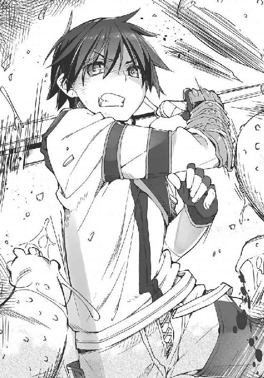
「降魔展開──〝雪の女王〟」
メルヴィーユの声が静かに響き、ソーマの周囲から瞬時に熱量が焼失した。ソーマを取り囲んでいた触手が一斉に凍り付き、砕け散る。
「っ！」
ソーマが膝をついて胸を押さえた。その口の端から血が垂れる。大技の連続使用に体が悲鳴を上げているのだ。
「ソーマ！」
「構うな！ まだいける！」
メルヴィーユの悲鳴にソーマは怒号で応じる。
横合いから新たな触手。ソーマの反応が遅れる。メルヴィーユは力の行使をためらった。迫りくる触手に並んだ口が大きく開かれ、鋭い牙でソーマに嚙みつこうとする。
（避けられない！）
そう思った直後だった。鋭い銃声が聞こえたかと思うと、触手が爆発してちぎれ飛んだ。
「もたくさやってんじゃないわよ！」
ファムだった。騎士団から無断で借りてきたのだろう、長大な狙撃銃を構えている。
「あんたらがやられたらこっちも終わりなんだからね！ しっかりしなさい！」
「済まない！ 助かった！」
「これ使って！」
とファムが投げてよこしたのは数珠つなぎになった手榴弾。
ソーマは受け取った手榴弾を懐に押し込むと、口元の血をぬぐって走り出した。メルヴィーユも飛翔して後を追う。
本体である肉塊に近づくほどに触手の攻撃は苛烈を極めていく。しかしファムと騎士団が後方から援護射撃してくれるおかげで、ソーマたちは迎撃に時間や力を取られることなく突き進むことができた。そしてついに肉塊に接触。肉塊表面に生じた無数の目が一斉にソーマとメルヴィーユを見据えた。
「間近で見るとマジに気持ち悪いな......っと！」
感想を漏らす暇もなく触手が飛んでくる。ソーマは宙返りで敵の攻撃を回避、触手の上に飛び乗った。触手がソーマを振り落とそうとでたらめに暴れ回る。ソーマはそれに逆らわずに飛び、別の触手に飛び乗ってさらに上昇、肉塊の上空へと躍り出る。眼下に化け物の頭──と言っていいのか疑問だが──を見据え、ファムから預かった手榴弾を取り出すと、即座にピンを引き抜いた。投擲はしない。手榴弾を腹に抱えてソーマは落下。
「降魔展開──〝青銅機人〟」
ソーマの全身が変色し、硬質化を始める。〝青銅機人〟は肉体の強度を飛躍的に高め、物理的な攻撃のほとんどを遮断するが、その代償として一切の身動きができなくなってしまう。
ソーマは完全に動けなくなる寸前に化け物の頭にしがみつき、体を密着させた。その腹の下で手榴弾が爆発する。〝青銅機人〟に守られたソーマの体はびくともしない。ソーマと肉塊に挟まれた密閉空間で生じた爆発は、その威力を全て柔らかい肉塊へと注ぎ込み、その上半分を豆腐のように飛び散らせた。えぐれ、焼け焦げて煙を上げる肉塊の断面に深紅の煌めき。
「見えたぞ！ あれじゃ！」
〝青銅機人〟を解除。生身に戻ったソーマは肉塊の断面に剣を突き立て賢者の石をえぐり取った。メルヴィーユが素早く石を回収に向かう。
「これで終わりじゃ！ ──っ!!」
だが、賢者の石を手にしたその瞬間、メルヴィーユは雷に打たれたように痙攣し、動かなくなってしまった。
「メル!? メル！」
突然のことにソーマは驚き、メルヴィーユに駆け寄った。意識を失い倒れそうになるメルヴィーユの小柄な体を抱き留める。メルヴィーユは白目を剝き、開きっぱなしの口から「ア......ア......ア......」と苦悶とも怨嗟ともつかない声を漏らす。
「メル！ 大丈夫か!? しっかりしろ！」
ソーマは必死で話しかけるがまるで聞こえていないようだ。
そのメルヴィーユの手の中で、賢者の石がまばゆい光を放ち始めた。
「っ！ 賢者の石!? まさかジゼルと同じように!?」
賢者の石がメルヴィーユをも暴走させようとしている。そう思ったソーマはメルヴィーユの手から賢者の石をもぎ取ろうとした。だが細い指は石と一体化したかのようにがっちり絡みつき、ソーマがいくら力を込めても全く剝がせなかった。
さらに悪いことが起こる。焼け焦げた肉塊の断面からミミズのような無数の触手が伸び、絡まり合って組織を修復し始めたのだ。
「くっ！」
ソーマはメルヴィーユを抱えてこの場を脱出しようとしたが、その足下でも無数の触手が蠢いていてまともに歩くこともできない。そうしている間にも肉塊の再生は続く。ソーマはすぐに肉の壁に包囲され、圧迫され始める。
「何やってるの！ 早く逃げて！」
遠くでファムが叫んでいる。逃げたいのは山々だが身動きすらままならないのだ。
肉塊が再生し、ソーマとメルヴィーユを完全に包み込む。メルヴィーユさえ健在ならソーマはどんなダメージを負っても──それなりの時間はかかるが──再生できる。だがメルヴィーユの意識がないまま諸共に食われてしまってはどうしようもない。
「ここまでか......っ！」
目的を果たすどころかトーマの所在さえつかめず、こんなところで果てることになるとは。
ソーマはあまりの無念に奥歯を強く嚙みしめた。そのときだった。
かっ、とメルヴィーユが目を開いた。
「メル！ 気がついたのか!?」
呼びかけ、ソーマはすぐに異変に気付いた。
目の焦点が合っていない。ソーマの声が聞こえていないようだ。
「......星渡る船......デーモン............守護者............管理者........................」
「メル？」
賢者の石がさらに輝いた。メルヴィーユが瞬きし、その頰が震え出す。
「............箱船には地上のありとあらゆる動植物............次元断層の擾乱さらに拡大！ ............こうなっては賭けるしかない。あの星に............通信は回復しないのか！ ............嫌よ！ 死にたくない！ ............こんなところで！ こんなところで！ ............種子を、生命の種子を......楽園......私たちの......」
意味不明なうわごと。口を開くたびに口調が変わる。まるで一人芝居。多重人格。誰かがメルヴィーユの中に入り込んでその口を勝手に動かしているかのような。
「メル！ どうしたんだ!? しっかりしろ！」
ソーマの必死の呼びかけに、しかしメルヴィーユは応えない。
と、
『──代理権限を確認。ライブラリ〝黙示録〟を限定解放』
メルヴィーユの口から感情のない、無機質な声が流れ出た。
「メル？」
違う、とソーマは直感的に感じた。これはメルヴィーユではない。ソーマのよく知っている、小柄で小生意気で小賢しい、下ネタ好きの少女悪魔ではない。
『ライブラリ〝黙示録〟読み込み完了。データベース更新。ランク９デーモン実行可能』
メルヴィーユがカッと目を開いた。その右目が──賢者の石と同じ深紅の右目が爛々と輝いている。
そして、
『降魔展開──〝アポリオン〟』
無機質な声が発せられたその瞬間、肉塊の内側に残された狭い空間に赤光が満ちた。
「──っ！」
耳元で虫の羽音のようなものが聞こえ、赤に染まった視界に無数の黒い染みのようなものが生じる。どこからともなく生じた染みが肉塊に触れると、肉塊のその部分がぽっかりと消失する。
「なんだこれは!? 何が起こって......」
ソーマはじっと目を凝らし、黒い染みを見る。
それは黒い蝗の群れだった。幽霊のように透き通った黒い蝗の群れが、ギチギチ歯を鳴らしながら飛び交い、肉塊を食らっているのだ。その小さな体のどこに収まるのか、蝗は猛烈な勢いで肉塊に齧りつき、削り取り、消滅させていく。
「ななな何じゃこれは！ 気色悪い！」
「っ！」
メルヴィーユが唐突に叫んだのでソーマは死ぬほど驚いた。
「メル！ 大丈夫なのか！」
「む？」とメルヴィーユは小首を傾げ、「......なんだか妙にだるいのう。ソーマと朝まで愛し合った後のようじゃ」
「んなことした覚えはねえよ」
突っ込みを入れつつソーマはほっとする。そこにいたのは全くいつものメルヴィーユだった。
「それでこれはどういう状況なのじゃ？ この黒いのは？」
「......お前がやったんじゃないのか？ アポリオン、とか言ってたけど」
「あぽりおん？」
小首を傾げて訊き返すメルヴィーユ。どうやら何も覚えていないらしい。
と、黒い蝗の群れが動きを止めた、かと思うとソーマの右手にまとわりつく。
「うわっ！」
ソーマは自分も食われるのかと思ったがそんなことはなく、半透明の黒い蝗の群れはソーマの右腕に溶けるように染み込んでいった。飛び交っていた蝗の群れが消え去ると、ソーマの右の肘から、握られた剣の先までが深淵の黒に染まっていた。
不思議と恐怖は感じなかった。何の違和感もなく、普通に動かせる。
試しに切っ先を肉塊に当ててみると、その部分の肉がぽっかりと消え去る。
「......なんだか分からないがとにかく使えるらしいな」
ソーマは手首を返して剣を動かし、肉塊をごっそりえぐり取った。肉塊はすぐに再生を始めるが、黒い剣が肉塊を消滅させる速度の方が圧倒的に速い。周囲に空間が確保されるとソーマの動きの自由度も増して、さらに効率的に肉塊を消し去っていく。
たいして時間もかからずに、剣先が肉塊の表皮を突き破った。
「よし、脱出じゃ！」
「ああっ！」
メルヴィーユの掛け声に気合いで応え、ソーマは黒い剣を振り下ろす。ぽっかりと開いた大穴から、人間と悪魔は勢いよく飛び出した。
「ソーマ！ 無事だったのね！」
ソーマとメルヴィーユを見つけてファムが歓声を上げた。ソーマはそちらに頷きを返してから辺りを見回した。
ソーマたちが取り込まれている間にも肉塊はかなり移動をしていたらしく、触手の先端は既に西地区に進入しようとしていた。
自警団と騎士団の生き残りが肉塊を取り囲み、暴れ回る触手を何とか押さえ込もうと奮戦しているが、その数は先ほどよりも少なくなっていた。ソーマとメルヴィーユが閉じ込められていた間に、またかなりの死傷者が出たらしい。
ソーマによって内側から穴を開けられた肉塊はしばしぐったりしていたが、やおら触手を持ち上げると、生き残りの自警団に襲いかかり始めた。
「こいつ、まだ動く!? 賢者の石は切り離したのに!?」
「案ずるな！ その右腕に宿ったアポリオンを使うのじゃ！ 黒き蝗の王に食らい尽くせぬものなど無い！ ......む？」とメルヴィーユは自分の言葉に戸惑った。「何故儂はこんなことを知っておるのじゃ？」
記憶が戻った......のだろうか。
メルヴィーユの様子は気になるところだったが、今はとにかく化け物を止めなくてはいけない。ソーマは黒く染まった右腕に剣を握り直すと、肉塊に向かって突撃した。
肉塊から無数の触手が伸びてソーマに襲いかかる。
鎧袖一触。黒い剣閃がただ一度走っただけで、それらはこの世から完全に消滅した。
「おおお！ いっけええええええ！」
ソーマは黒い剣を振り上げ、肉塊に叩き付けるように振り下ろした。と、剣と右腕から黒い染みのような蝗の群れが再び現れ、次々に肉塊に食らいついていく。
耳を聾する羽音と歯のこすれる音が夜を震わせた。蝗の群れに食いつかれた触手が一瞬で消え失せ、本体である肉塊もすさまじい勢いで小さくなっていく。
「あ......」
黒い蝗に食われて小さくなっていく肉塊の表面に、不意に若い女の顔が浮かび上がった。
だがそれも一瞬のこと。黒い蝗は全てを食らい尽くすと、旋風を残して消え去った。ソーマの右腕も元の色に戻る。
「ジゼル......」
「過ぎた力を求めた者の末路は哀れなものよな......」
メルヴィーユが無感情に呟いた。
「......」
ソーマは己の胸を見下ろした。
過ぎた力を求めた者──おそらくは、自分もその一人なのだろう。
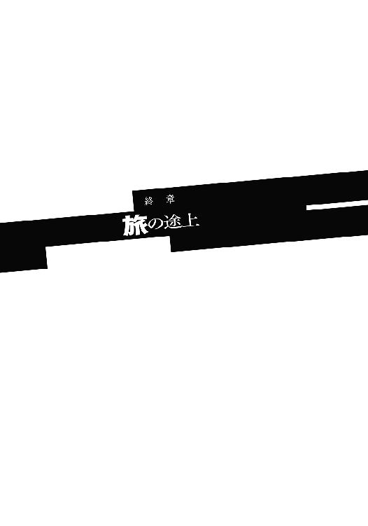
「だーかーらー、ちょっとだけでいいんだってば。ちょーっとだけ。ね？」
中天の下、乾いた荒野を三つの人影が東に向かって進んでいる。二つは歩き、一つは宙に浮いている。
先頭を行くのはファムである。後ろ歩きで短いマントをはためかせ、ソーマをおだてたり脅したり泣き落とそうとしたりしているのだが、ソーマはちっとも相手にしない。
「腹が減ったな......」
なんて呟くと、ソーマは背囊のサイドポケットからドライフルーツを取り出して食べようとする。と、上から伸びてきた手がドライフルーツをかっさらった。
「油断大敵じゃ」
ドライフルーツを手にご満悦でふよふよ浮いてるのはもちろんメルヴィーユ。
「こら、返せ」
ソーマが手を伸ばしてそう言うと、メルヴィーユはニヤニヤ笑って上昇し、
「ソーマが手ずから食べさせてくれるのなら一度返さぬでもない」
「じゃあそれ食べていいよ」
「そんなあっさり!?」
涙目で降りてくるメルヴィーユを無視してソーマは新しいドライフルーツを取り出す。
「ちょっとあんたたち！ あたしを無視してイチャコライチャコラしてるんじゃないわよ！」
「別にイチャコラはしてない。......お前も食うか？」
「いらないっ！」
「あっ！」
ぶち切れたファムに払いのけられ、ドライフルーツがソーマの手から飛んだ。
「何するんだよ」
「うむ。食べ物を粗末にするともったいないお化けが出るぞ」
「あんたたちって......」ファムはやけに疲れた感じのため息を漏らした。「誰のおかげで旅が続けられていると思ってるのよ......」
「感謝はしている」
とソーマは答えた。
昨夜、吸血鬼ジゼルが賢者の石の力によって変異した怪物を倒した後、ソーマは限界に達して動けなくなり、デルナの街の駐留騎士団に捕まってしまった。
騎士団はソーマを街の病院に収容した。回復を待って事情聴取をするつもりだったのだろう。
しかしソーマはその前に逃げた。なんといっても街中で悪魔の力を全力全開ぶっ放したのである。住民を守るためにやったことではあったが、騎士団がソーマの言い分を素直に聞いてくれるとは思えず、仮に聞いてくれたとしても〝悪魔憑き〟を無罪放免にしてくれるわけもない。
だから逃げることにした。
そこでソーマたちの脱出を手伝ってくれたのがファムである。ファムは騎士団に押収されていたソーマの持ち物を盗み出し、見張りの隙を突き、攪乱工作まで行ってソーマとメルヴィーユを街から脱出させてくれた。ファムがいなくても脱出自体は可能だっただろうけれど、その場合はまた一騒ぎ起こっていたのは間違いない。
「あんたらの荷物を取り返してきたときに、あんたらを見捨てて、賢者の石だけ持ち逃げしたってよかったのよ？ でもちゃんと返してあげて、脱走の段取りもつけてあげたんだから、そこの誠意は汲んでよね」
「儂らが捕まっておったら、儂らの口からお主が泥棒だという情報が当局に伝わって、それでお主も指名手配されるから、そうならないように儂らを逃がしただけ......つまりお主の行動は徹頭徹尾自分のためじゃろうが」
「ああいい天気～」
メルヴィーユの突っ込みをファムはわざとらしく無視した。
「感謝はしているけど、やっぱりダメだ。こんな危ないもの貸せない。ファムだけじゃなく、誰にも渡すつもりはない」
ソーマは自分の胸にちらりと目をやった。回収したペンダントはいつの間にか台座も鎖もないむき身の石だけになっていた。金属部分はあの肉塊に吸収されてしまったのだろう。おかげで首から下げることができなくなってしまったので、今はソーマのコートの内ポケットに収まっている。
賢者の石──所有者に無限の英知を授ける、始祖アダムの遺産。
ジゼルはこの石の力で自らをより強力な悪魔に作り替えた。最終的には暴走して、悪魔ですらないただの化け物と成り果ててしまったが。
賢者の石に触れたメルヴィーユは、突然桁違いに強力な力を使えるようになった。
この石には悪魔を強化する力がある、らしい。それは一体何を意味するのだろう？ メルヴィーユのうわごとは？ 賢者の石と悪魔、そして箱船には何らかの関連がある？ 考えても分かるはずのないことではあった。
今、メルヴィーユはいつも通りだ。賢者の石に触れた直後のような忘我の状態に陥ることもなく、いつも通りにソーマに色目を使い、「逃走中の緊張感がないのよあんたは！」とファムに叱られている。記憶が戻った様子もない。
「貸してくれないか。ま、そう言うわよね。でもあたしは諦めないからね」
「ところで貴様、賢者の石を手に入れてどうするつもりじゃ？ 足りないおつむでも足してもらうのか？ ああ、分かったぞ。乳を増量する秘法を教えてもらうつもりじゃな？」
「フフン。怒らせて失言させようってんでしょ。その手には乗らないわよ。おちびちゃん」
「また言いおったな！ ......ソーマ、こやつここで斬り捨てておこう。石を求めて延々つきまとわれては面倒じゃ」
「面倒なのは同意だが人殺しはパスだ。お尋ね者になったら旅に支障が出る」
ソーマは極めて現実的な判断を下し、ファムは「フフン」と得意顔。
メルヴィーユは「ぐぬぬ」と唇を嚙んでファムをにらみ付ける。その横顔がなんだか楽しそうに見えるのは、ソーマの気のせいではないだろう。
ファムはメルヴィーユの正体が悪魔だと知っても全く恐れない。舐めているわけではないだろう。「だからどうした？」と本気で思っている。そんな人間は今まで一人もいなかった。メルヴィーユにとってファムは、初めて現れた「対等な立場からものを言ってくる人間」なのである。友達──なんて言葉を使ったら二人とも怒るだろうけれど。
「......喧嘩するほど仲がいい、って感じだな」
ソーマは頰をつねり合う二人を見ながらそう呟いた。その途端、
「冗談ではない！ 誰がこんな小娘と!?」
「小娘はそっちでしょうが!!」
二人は声を揃えて抗議した。
「......ところであんたたち、なんで旅してるの？」
喧嘩をやめて再び歩き出し、不意にファムがそう言った。
「なんでもいいだろ。人の、」
人のプライベートに踏み込むな──そう答えようとしたソーマはしかし、途中で気が変わってポケットからメモ帳を取り出した。新しいページにサラサラと例の魔法陣を書き付けてファムに見せる。
「......こういう魔法陣について調べている。見たことないか？」
ダメで元々。知らなくて当然。そのつもりだったのだが、
「あ、これ知ってる」
ファムがあまりにもあっさりそう言ったものだから、ソーマは何か聞き間違えたのかと思った。
「うん。間違いない。見たことある」
「何だって！ 本当か!?」
ソーマは瞬時に踏み込みファムの肩を摑んだ。
「きゃっ！ ちょ、近い近い！」
突然接近されて動揺するファム。
「ソーマ！ 儂の前で別の女に抱きつくなど！ この浮気者！」
メルヴィーユが悲鳴を上げたがソーマは無視してファムに詰め寄る。
「間違いないのか!? どこで見たんだ！ 誰が作った!?」
焦るソーマとは対照的に、ファムはすぐに余裕を取り戻して、
「そうねえ......教えてあげてもいいんだけど、そしたら賢者の石、貸してくれる？」
「う、それは......」
ためらうソーマの腕の中から、ファムはするりとすり抜けた。
「待ってくれ！ 俺はなんとしてもこの魔法陣の正体を突き止めないといけないんだ！」
「んん～。どーしよっかなー？ あ、なんかお腹空いたかも」
先ほどの仕返しとばかりにファムは干し肉など取り出して齧り始める。
立場逆転。前を向いて揚々と歩き始めたファムを、今度はソーマが懇願しながら追いかける。
「賢者の石は無理だが他のことなら何でもする。だから頼む」
「何でも？」
「何でも」
「って言われてもねえ......」とファムは困惑し、それから不意に明るい顔で両手を打ち鳴らすと、「そうだ！ ねえ、そこのミニ悪魔、ちょっと日傘代わりにあたしの頭上に浮かんでてくれない？」
「............」
メルヴィーユはちらりとソーマを見た。ソーマは小さな、しかしはっきりとした口調で、
「頼む」
「......くっ、我が主がそう言うのなら仕方ない──」
メルヴィーユは静かに頷きファムの頭上へ行き、
「──とでも言うと思うたか！ くたばれ人間!!」
怒声を発しながら急降下、ファムの頭にドロップキックをかます。
「この儂を日傘代わりにしようとは細いのに太い奴！ そんなに暑いのが嫌なら今すぐ全身冷たくしてくれるわ！」
「やったわね！ このっ！」
ファムが手を伸ばしてメルヴィーユを引きずり下ろした。メルヴィーユが抵抗し、二人はもつれ絡み合いながら地面を転がる。
もうもうと立つ土埃からソーマは顔を背けた。
と、ソーマの目が見開かれる、街道の西からこちらに迫りくる複数の人馬。目を凝らすといずれも白い制服を纏っている。騎士団だ。ソーマたちの捜索に来たのだろう。
「おい、追っ手だ！ 喧嘩してる場合じゃないぞ！」
「何じゃと！」
「もう!?」
悪魔と人間、二人の少女は同時に顔を上げた。互いの頰をつねっていた手を離して立ち上がり、ソーマと共に走り始める。
「貴様の工作が雑だから気付かれたんじゃ！ 責任取って殿を務めよ」
「別にいいわよ？ あたしが捕まったら、大事な大事な魔法陣のことが分からなくなるけど？ そしたらあんたのご主人様は困るんじゃなくて？」
「っ！ 人間の癖に悪魔のような奴じゃ......」
「黙って走れ！ 喧嘩なら逃げ切った後で好き放題させてやる！」
走りながらも口の減らない二人に怒鳴りつけつつ、ソーマは前方を見やる。
荒野はうねりながら地平線の先まで続いている。
旅路の先に何があるのか──
悪魔憑きの少年、ソーマ・ノイン・スオウ。
悪魔使いの悪魔、メルヴィーユ。
──二人はまだ、自分たちを取り巻く運命の大きさを知らずにいた。
あとがき
──ある人は言った。「おとなはウソつきではないのです。まちがいをするだけなのです......」と。
大変ご無沙汰しておりまして申し訳ありません。前作『魔王のしもべがあらわれた！』（全四巻とお手頃なボリュームで好評発売中！）のあとがきにて「次はすぐ出します」てな宣言をしましたがご覧の有様です。
ええっとですね、あの時点で既にプロットは完成してまして、後は書くだけ状態だったので本当にすぐ出せると思ってたのですよ。ところがその後行き詰まった──というわけでもなく、原稿自体はノリノリで一気に書き上がった......にもかかわらずこんなに遅くなった理由は正直よく分からない、なんて言っちゃいけないのです。結局のところ全ての責任は作者に帰属するのです。だから言うべきことは一つです──待っててくれてありがとう。
そんなわけで新作です。
今回は色々と新しいことにチャレンジしておりまして、私としては初のファンタジー──今までも非現実的な要素自体はほぼ入ってましたが、ここまでファンタジー度が高い世界観は初めてです。純ファンタジー、と言うには色々怪しい要素が見え隠れしておりますが。
主人公も今までの受け身タイプとは違って自分から首を突っ込んでいくタイプ。ヒロインもガンガン押してくるタイプです。押してくるというか、「押し倒そうとしてくる」というか......。ちょっとやり過ぎたかも知れん。でも後悔しない。むしろもっとやれ。書いたことのないパターンの主人公がすんなり書けたことは自分でもちょっと驚き。読者の皆様にもソーマとメルヴィーユ、ついでにファムも気に入ってもらえるととても嬉しいです。
以下、謝辞など。
担当荒木様。いつもありがとうございます。できればもう少し養生して下さい。あなたに何かあると私、とても困りますので。
イラストレーターここのか様。実はずっと前からファンでした！
その他、本書に携わる全ての方々へもいつものように深く感謝を。
既に二巻の執筆は始めておりますので、次は、次こそはすぐ出します。出せるといいなあ。次回はライバルキャラの〝天使憑き〟イケメン眼鏡なんかも出てきて大暴れの予定。
では、早めの再会を願いつつ、今回はこの辺で──。
上野 遊
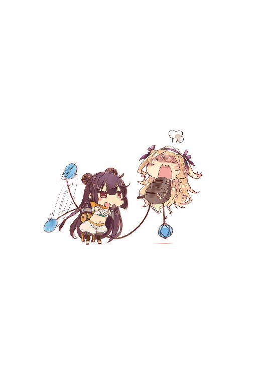
上野遊
近頃は毎日のように字の練習をしております。それはもう熱心に。どうしてそんな気になったかは聞くな。聞いてくれるな。
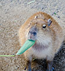
イラスト／ここのか
彩の国在住のイラスト描き。おしりを描くのがだいすきです。唯一の趣味は愛犬（コーギー）のお尻を撫でること。プリプリしててかわいい！
本書に対するご意見、ご感想をお寄せください。
電撃文庫公式ホームページ 読者アンケートフォーム
http://dengekibunko.dengeki.com/
※メニューの「読者アンケート」よりお進みください。
ファンレターあて先
〒102-8584 東京都千代田区富士見1-8-19
アスキー・メディアワークス電撃文庫編集部
「上野 遊先生」係
「ここのか先生」係
本書は書き下ろしです。
 電撃文庫
電撃文庫
D9─聖櫃の悪魔操者─
上野遊
発 行 2015年2月12日
発行者 塚田正晃
発行所 株式会社KADOKAWA
〒102-8177 東京都千代田区富士見2-13-3
03-3238-8745（営業）
http://www.kadokawa.co.jp/
プロデュース アスキー・メディアワークス
〒102-8584 東京都千代田区富士見1-8-19
03-5216-8399（編集）
http://dengekibunko.dengeki.com/
本書（電子版）に掲載されているコンテンツ（ソフトウェア／プログラム／データ／情報を含む）の著作権およびその他の権利は、すべて株式会社KADOKAWAおよび正当な権利を有する第三者に帰属しています。
法律の定めがある場合または権利者の明示的な承諾がある場合を除き、これらのコンテンツを複製・転載、改変・編集、翻案・翻訳、放送・出版、公衆送信（送信可能化を含む）・再配信、販売・頒布、貸与等に使用することはできません。
(C)2014 YOU UENO
※2014年1月10日発行の電撃文庫『D9─聖櫃の悪魔操者─』初版に基づき制作